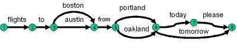
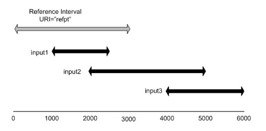
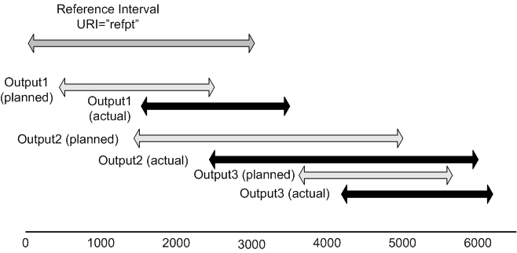
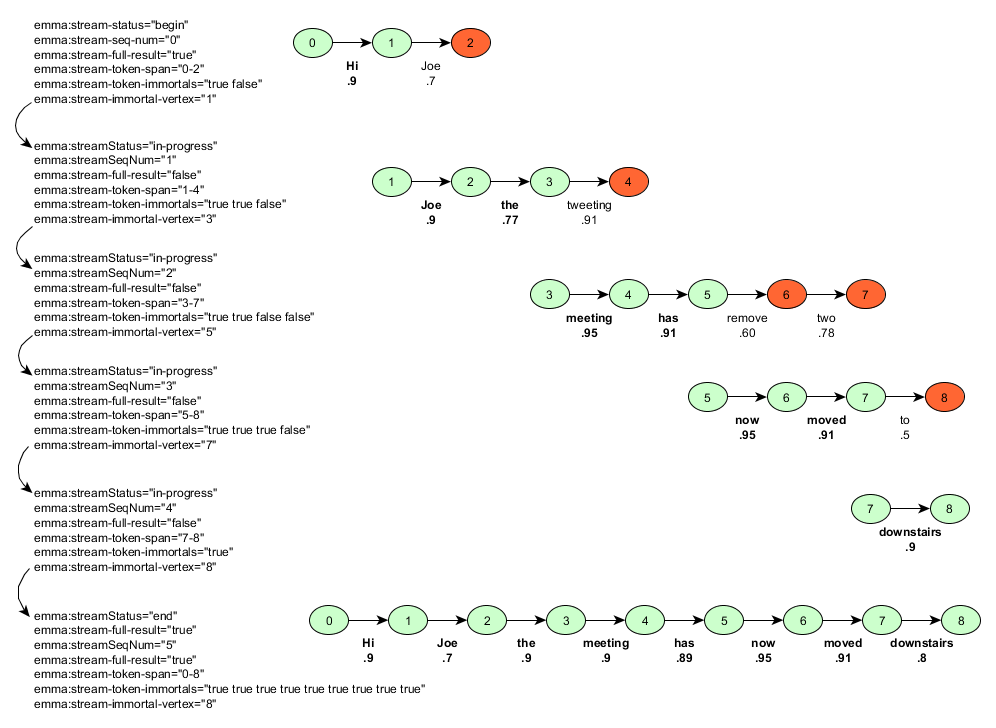

Abstract
The W3C Multimodal Interaction Working Group aims to develop
specifications to enable access to the Web using multimodal
interaction. This document is part of a set of specifications for
multimodal systems, and provides details of an XML markup language
for containing and annotating the interpretation of user input and production of system output.
Examples of interpretation of user input are a transcription into
words of a raw signal, for instance derived from speech, pen or
keystroke input, a set of attribute/value pairs describing their
meaning, or a set of attribute/value pairs describing a gesture.
The interpretation of the user's input is expected to be generated
by signal interpretation processes, such as speech and ink
recognition, semantic interpreters, and other types of processors
for use by components that act on the user's inputs such as
interaction managers. Examples of stages in the production of a system output, are creation of a semantic representation, an assignment of that representation to a particular modality or modalities, and a surface string for realization by, for example, a text-to-speech engine. The production of the system's output is expected to be generated by output production processes, such as a dialog manager, multimodal presentation planner, content planner, and other types of processors such as surface generation.
Status of this Document
This section describes the status of this document at the
time of its publication. Other documents may supersede this
document. A list of current W3C publications and the latest
revision of this technical report can be found in the W3C technical reports index at
http://www.w3.org/TR/.
This is the @@ June 2015 Working Draft of "EMMA:
Extensible MultiModal Annotation markup language Version 2.0".
It has been produced by the
Multimodal Interaction Working Group,
which is part of the
Multimodal Interaction Activity.
This specification describes markup for representing
interpretations of user input (speech, keystrokes, pen input etc.) and productions of system output together with annotations for confidence scores, timestamps, medium etc., and forms part of the proposals for the W3C Multimodal Interaction
Framework.
The EMMA: Extensible Multimodal Annotation 1.0 specification was published as a W3C Recommendation in February 2009. Since then there have been numerous implementations of the standard and extensive feedback has come in regarding desired new features and clarifications requested for existing features. The W3C Multimodal Interaction Working Group examined a range of different use cases for extensions of the EMMA specification and published a W3C Note on Use Cases for Possible Future EMMA Features [EMMA Use Cases]. In this working draft of EMMA 2.0, we have developed a set of new features based on feedback from implementers and have also added clarification text in a number of places throughout the specification. The new features include: support for adding human annotations (emma:annotation, emma:annotated-tokens), support for inline specification of process parameters (emma:parameters, emma:parameter, emma:parameter-ref), support for specification of models used in processing beyond grammars (emma:process-model, emma:process-model-ref), extensions to emma:grammar to enable inline specification of grammars, a new mechanism for indicating which grammars are active (emma:grammar-active, emma:active), support for non-XML semantic payloads (emma:result-format), support for multiple emma:info elements and reference to the emma:info relevant to an interpretation (emma:info-ref), and a new attribute to complement the emma:medium and emma:mode attributes that enables specification of the modality used to express an input (emma:expressed-through).
In addition we have extended the specification to handle the production of system output, by adding the new element, emma:output and added a series of annotations enabling the use of EMMA for incremental results (Section 4.2.24).
Not addressed in this draft, but planned for a later Working Draft of EMMA 2.0, is a JSON serialization of EMMA documents for use in contexts were JSON is better suited than XML for representing user inputs and system outputs.
Changes from the last working draft
This working draft also adds a new emma:location element for specification of the location of the device or sensor which captured the input. The ref attribute was added to a number of elements allowing for shorter EMMA documents which use URIs to point to content stored outside of the document: emma:one-of, emma:sequence, emma:group, emma:info, emma:parameters, emma:lattice. A new attribute emma:partial-content is introduced which indicates whether the content in an element with ref, is the full content or whether it is partial and more can be retrieved by following the URI in ref. The emma:emma element is extended with doc-ref and prev-doc attributes that indicate where the document can be retrieved from and where the previous document in a sequence of inputs can be retrieved from. The application of emma:lattice is also extended so that an EMMA document can contain both a N-best and a lattice side-by-side. A new Section 3.3 includes an initial proposal for the extension of EMMA to output and the new element emma:output. A new Section 4.2.24 describes new attributes that extend EMMA so that it support incremental results.
A diff-marked version from EMMA 1.1
is available for comparison purposes.
Also changes from EMMA 1.0 can be found in Appendix F.
Comments are welcome on www-multimodal@w3.org
(archive).
See W3C mailing list and archive
usage guidelines.
This document was produced by a group operating under the
5
February 2004 W3C Patent Policy. W3C maintains a public list of any
patent disclosures made in connection with the deliverables of
the group; that page also includes instructions for disclosing a
patent. An individual who has actual knowledge of a patent which
the individual believes contains
Essential Claim(s) must disclose the information in accordance
with
section 6 of the W3C Patent Policy.
The sections in the main body of this document are normative unless
otherwise specified. The appendices in this document are informative
unless otherwise indicated explicitly.
Conventions of this Document
All sections in this specification are normative, unless
otherwise indicated. The informative parts of this specification
are identified by "Informative" labels within sections.
The key words "MUST", "MUST NOT", "REQUIRED", "SHALL", "SHALL
NOT", "SHOULD", "SHOULD NOT", "RECOMMENDED", "MAY", and "OPTIONAL"
in this document are to be interpreted as described in [RFC2119].
Table of Contents
- 1. Introduction
- 2. Structure of EMMA documents
- 3. EMMA structural elements
- 4 EMMA annotations
- 4.1 EMMA annotation elements
- 4.2 EMMA annotation attributes
- 4.2.1 Tokens of input:
emma:tokens, emma:token-type and emma:token-score attributes
- 4.2.2 Reference to processing:
emma:process attribute
- 4.2.3 Lack of input:
emma:no-input attribute
- 4.2.4 Uninterpreted input:
emma:uninterpreted attribute
- 4.2.5 Human language of input:
emma:lang attribute
- 4.2.6 Reference to signal:
emma:signal and
emma:signal-size attributes
- 4.2.7 Media type:
emma:media-type attribute
- 4.2.8 Confidence scores:
emma:confidence attribute
- 4.2.9 Input source:
emma:source
attribute
- 4.2.10 Timestamps
- 4.2.11 Medium, mode, and function of user
inputs:
emma:medium, emma:mode,
emma:function, emma:verbal,emma:device-type, and emma:expressed-through
attributes
- 4.2.12 Composite multimodality:
emma:hook attribute
- 4.2.13 Cost:
emma:cost
attribute
- 4.2.14 Endpoint properties:
emma:endpoint-role,
emma:endpoint-address, emma:port-type,
emma:port-num, emma:message-id,
emma:service-name, emma:endpoint-pair-ref,
emma:endpoint-info-ref
attributes
- 4.2.15 Reference to
emma:grammar element: emma:grammar-ref
attribute
- 4.2.16 Reference to
emma:model
element: emma:model-ref attribute
- 4.2.17 Dialog turns:
emma:dialog-turn attribute
- 4.2.18 Semantic representation type:
emma:output-format attribute
- 4.2.19 Reference to
emma:info element: emma:info-ref attribute
- 4.2.20 Reference to
emma:process-model element: emma:process-model-ref attribute
- 4.2.21 Reference to
emma:parameters
element: emma:parameter-ref attribute
- 4.2.22 Human transcription: the
emma:annotated-tokens attribute
- 4.2.23 Partial content:
emma:partial-content
- 4.2.24 Incremental results:
emma:stream-id, emma:stream-seq-num, emma:stream-status, emma:stream-full-result, emma:stream-token-span, emma:stream-token-span-full, emma:stream-token-immortals, emma:stream-immortal-vertex
-
- 4.3 Scope of EMMA annotations
- 5.Conformance
- 6.Integration of EMMA with other Standards Related to Output
- Appendices
1. Introduction
This section is Informative.
This document presents an XML specification for EMMA, an
Extensible MultiModal Annotation markup language, responding to the
requirements documented in Requirements for EMMA
[EMMA Requirements]. This
markup language is intended for use by systems that provide
semantic interpretations for a variety of inputs and representations for a variety of system outputs. Possible inputs include but are not
necessarily limited to, speech, natural language text, GUI and ink Possible outputs include speech, text, GUI, vibration, and gestures made by embodied agents or robots.
It is expected that this markup will be used primarily as a
standard data interchange format between the components of a
multimodal system; in particular, it will normally be automatically
generated by interpretation components to represent the semantics
of users' inputs and by production components to represent system output, not directly authored by developers.
The language is focused on representing and annotating inputs from users and system generated outputs,
which may be either in a single mode or a composite input
combining information from multiple modes, as opposed to
information that might have been collected over multiple turns of a
dialog. The language provides a set of elements and attributes that
are focused on enabling annotations on user inputs and system outputs and
interpretations of those inputs and representation of those outputs.
An EMMA document can be considered to hold three types of
data:
-
instance data
Application-specific markup corresponding to input or output information
which is meaningful to the consumer of an EMMA document. Instances
are application-specific and built by input and output processors at runtime.
Given that utterances may be ambiguous with respect to input
values, an EMMA document may hold more than one instance. Similarly for output, there may be more than one possible realization of the system output (e.g. different renderings of a semantic representation into a string) and so an EMMA document for output may also hold more than one instance.
-
data model
Constraints on structure and content of an instance. The data
model is typically pre-established by an application, and may be
implicit, that is, unspecified.
-
metadata
Annotations associated with the data contained in the instance.
Annotation values are added by input processors and output generators at runtime. In EMMA 2.0 1.1 annotations may also result from transcription and other activities by human annotators.
Given the assumptions above about the nature of data represented
in an EMMA document, the following general principles apply to the
design of EMMA:
- The main prescriptive content of the EMMA specification will
consist of metadata: EMMA will provide a means to express the
metadata annotations which require standardization. (Notice,
however, that such annotations may express the relationship among
all the types of data within an EMMA document.)
- The instance and its data model are assumed to be specified in XML by default, but the instance may be specified in other formats as defined by the
emma:result-format attribute. EMMA will remain agnostic to the specific details of the format (If it is XML, the instance data is assumed to be sufficiently structured to enable the association of annotative data.)
- The extensibility of EMMA lies in the ability for additional
kinds of metadata to be included in application specific
vocabularies. EMMA itself can be extended with application and
vendor specific annotations contained within the
emma:info element (Section
4.1.5).
The annotations of EMMA should be considered 'normative' in the
sense that if an EMMA component produces annotations as described
in Section 3 and Section
4, these annotations must be represented using the EMMA
syntax. The Multimodal Interaction Working Group may address in
later drafts the issues of modularization and profiling; that is,
which sets of annotations are to be supported by which classes of
EMMA component.
1.1 Uses of EMMA
The general purpose of EMMA is to represent the stages of processing of the inputs and outputs of an automated system. In the case of input this is information
automatically extracted from a user's input by an interpretation
component, where input is to be taken in the general sense of a
meaningful user input in any modality supported by the platform. In the case of output, EMMA represents the stages in the production of a system output.
The reader should refer to the sample architecture in W3C
Multimodal Interaction Framework [MMI
Framework], which shows EMMA conveying content between
user input modality components and an interaction manager. EMMA is one potential transport for system output from an interaction manager to system output modality components.
Input processing components that generate EMMA markup:
- Speech recognizers
- Handwriting recognizers
- Natural language understanding engines
- Other input media interpreters (e.g. DTMF, pointing,
keyboard)
- Multimodal integration components
Components that use EMMA representations of input include:
- Interaction manager
- Multimodal integration component
Output production components that may generate EMMA markup:
- Dialog/interaction manager
- Multimodal presentation planning component
- Natural language generation component
Components that use EMMA representations of output include:
- Text-to-speech engine (audio and or video)
- Graphical presentation components (e.g. HTML, SVG renderer or browser)
- Media presentation components (e.g. video player)
- Robot/embodied agent motion planning or rendering component
1.2 Terminology
- anchor point
- When referencing an input or output interval with
emma:time-ref-uri,
emma:time-ref-anchor-point allows you to specify
whether the referenced anchor is the start or end of the
interval.
- annotation
- Information about the interpreted input or produced output, for example,
timestamps, confidence scores, links to the raw signal, etc.
- composite input
- An input formed from several pieces, often in different modes,
for example, a combination of speech and pen gesture, such as
saying "zoom in here" and circling a region on a map.
- confidence
- A numerical score describing the degree of certainty in a
particular interpretation of user input or the relative quality of a production of system output.
- data model
- For EMMA, a data model defines a set of constraints on possible
interpretations of user input or representations of system output.
- derivation
- Interpretations of user input are said to be derived from that
input, and higher level interpretations may be derived from lower
level ones. EMMA allows you to reference the user input or
interpretation a given interpretation was derived from, see
semantic
interpretation. A system output is said to be derived from a semantic representation produced by the system. There may be multiple stages to the production of a system output and EMMA allows you to reference the previous stage that it was derived from.
- dialog
- For EMMA, dialog can be considered as a sequence of
interactions between
a user and the application.
- endpoint
- In EMMA, this refers to a network location which is the source
or recipient of an EMMA document. It should be noted that the usage
of the term "endpoint" in this context is different from the way
that the term is used in speech processing, where it refers to the
end of a speech input.
- gestures
- In multimodal applications gestures are communicative acts made
by the user or application. An example is circling an area on a map
to indicate a region of interest. Users may be able to gesture with
a pen, keystrokes, hand movements, head
movements, or sound. Gestures often form part of composite input. Application
gestures are typically animations and/or sound effects. Gestures may also be made by a system, e.g. highlighting on a graphical display or physical arm/hand motions by an embodied virtual agent or physical robotic agent.
- grammar
- A set of rules that describe a sequence of tokens expected in a
given input or output. These can be used by speech and handwriting
recognizers to increase recognition accuracy and by natural language generation components to produce well formed output.
- handwriting recognition
- The process of converting pen strokes into text.
- ink recognition
- This includes the recognition of handwriting and pen
gestures.
- input cost
- In EMMA, this refers to a numerical measure indicating the
weight or processing cost associated with a user's input or part of
their input.
- input device
- The device providing a particular input, for example, a
microphone, a pen, a mouse, a camera, or a keyboard.
- input function
- In EMMA, this refers to the use a particular input
is serving, for example, as part of a recording or transcription,
as part of a dialog, or as a means to verify the user's
identity.
- input medium
- Whether the input is acoustic, visual, or tactile, for
instance, a spoken utterance is an example of an acoustic input, a
hand gesture as seen by a camera is an example of a visual input,
pointing with a mouse or pen is an example of a tactile input.
- input mode
- This distinguishes a particular means of providing an input
within a general input medium, for example, speech, DTMF, ink, key
strokes, video, photograph, etc.
- input source
- This is the device that provided the input, for example a
particular microphone or camera. EMMA allows you to identify these
with a URI.
- input tokens
- In EMMA, this refers to a sequence of characters, words or
other discrete units of input.
- instance data
- A representation in XML of an interpretation of user
input.
- interaction manager
- A processor that determines how an application interacts with a
user. This can be at multiple levels of abstraction, for example,
at a detailed level, determining what prompts to present to the
user and what actions to take in response to user input, versus a
higher level treatment in terms of goals and tasks for achieving
those goals. Interaction managers are frequently event driven.
- interpretation
- In EMMA, an interpretation of user input refers to information
derived from the user input that is meaningful to the
application.
- keystroke input
- Input provided by the user pressing on a sequence of keys
(buttons), such as a computer keyboard or keypad.
- lattice
- A set of nodes interconnected with directed arcs such that by
following an arc, you can never find yourself back at a node you
have already visited (i.e. a directed acyclic graph). Lattices
provide a flexible means to represent the results of speech and
handwriting recognition, in terms of arcs representing words or
character sequences. Different arcs from the same node represent
different local hypotheses as to what the user said or wrote.
- metadata
- Information describing another set of data, for instance, a
library catalog card with information on the author, title and
location of a book. EMMA is designed to support input and output processors in
providing metadata for interpretations of user input and system output.
- multimodal integration
- The process of combining inputs from different modes to create
an interpretation of composite input. This is also sometimes
referred to as multimodal fusion.
- multimodal interaction
- The means for a user to interact with an application using more
than one mode of interaction, for instance, offering the user the
choice of speaking or typing, or in some cases, allowing the user
to provide a composite input involving multiple modes.
- multimodal presentation planning
- The process of generation multiple, possibly coordinated, outputs in different models to present information to the user. This is also sometimes referred to as multimodal output generation or multimodal fission.
- natural language
understanding
- The process of interpreting text in terms that are useful for
an application.
- N-best list
- An N-best list is a list of the most likely hypotheses for what
the user actually said or wrote, where N stands for an integral
number such as 5 for the 5 most likely hypotheses. N-best lists can also be used for multiple different possible renderings of system output.
-
-
- output device
- The device producing a particular output, for example, a loudspeaker, display screen, robot.
- output medium
- Whether the output is acoustic, visual, or tactile. For example, a spoken text to speech output is acoustic, a presentation of a table of information on a screen is visual, while haptic feedback is tactile.
- output mode
- This distinguishes a particular means of providing an output within a general output medium, for example, speech, non-speech audio (earcons, alerts), graphics, gesture.
- output tokens
- In EMMA, this refers to a sequence of characters, words, gestures, or other discrete units of output.
- raw signal
- An uninterpreted input, such as an audio waveform captured from
a microphone.
- semantic interpretation
- A normalized representation of the meaning of a user input, for
instance, mapping the speech for "San Francisco" into the airport
code "SFO".
- semantic processor
- In EMMA, this refers to systems that can derive interpretations
of user input, for instance, mapping the speech for "San Francisco"
into the airport code "SFO".
- signal interpretation
- The process of mapping a discrete or continuous signal into a
symbolic representation that can be used by an application, for
instance, transforming the audio waveform corresponding to someone
saying "2005" into the number 2005.
- speech recognition
- The process of determining the textual transcription of a piece
of speech.
- speech synthesis
- The process of rendering a piece of text into the corresponding
speech, i.e. synthesizing speech from text.
- text to speech
- The process of rendering a piece of text into the corresponding
speech.
- time stamp
- The time that a particular input or part of an input began or
ended.
- URI: Uniform Resource Identifier
- A URI is a unifying syntax for the expression of names and
addresses of objects on the network as used in the World Wide Web.
Within this specification, the term URI refers to a Universal
Resource Identifier as defined in [RFC3986]
and extended in [RFC3987] with the new name
IRI. The term URI has been retained in preference to IRI to avoid
introducing new names for concepts such as "Base URI" that are
defined or referenced across the whole family of XML
specifications. A URI is defined as any legal
anyURI primitive as defined in XML Schema Part 2:
Datatypes Second Edition Section 3.2.17 [SCHEMA2].
- user input
- An input provided by a user as opposed to something generated
automatically.
- system output
- An output produced by an automated interactive system.
2. Structure of EMMA documents
This section is Informative.
As noted above, the main components of an interpreted user input
or produced system output in EMMA are the instance data, an optional data model, and the
metadata annotations that may be applied to that input or output. The
realization of these components in EMMA is as follows:
- instance data is contained within an EMMA
interpretationfor input and an EMMA output for output
- the data model is optionally specified as an annotation
of that instance
- EMMA annotations may be applied at different levels of
an EMMA document.
An EMMA interpretation is the primary unit for holding
user input as interpreted by an EMMA processor. As will be seen
below, multiple interpretations of a single input are possible.
An EMMA output is the primary unit for holding system output as generated by an EMMA processor. As will be seen below, multiple possible alternative system outputs are possible.
EMMA provides a simple structural syntax for the organization of
interpretations and instances, and an annotative syntax to apply
the annotation to the input data and output data at different levels.
An outline of the structural syntax and annotations found in
EMMA documents is as follows. A fuller definition may be found in
the description of individual elements and attributes in Section 3 and Section 4.
- EMMA structural
elements (Section 3)
- Root element: The root node of an
EMMA document, the
emma:emma element, holds EMMA
version and namespace information, and provides a container for one
or more of the following interpretation and container elements
(Section 3.1)
- Interpretation element: The
emma:interpretation element contains a given
interpretation of the input and holds application specific markup
(Section 3.2)
- Output element: The
emma:output element contains a given instantiation of system output and holds application specific markup. (Section 3.3)
- Container elements:
emma:one-of is a container for one or more
interpretation elements, output elements, or container elements and denotes that
these are mutually exclusive interpretations or possible system outputs (Section 3.4.1)emma:group is a general container for one or more
interpretation elements, output elements, or container elements. It can be associated
with arbitrary grouping criteria (Section
3.4.2).emma:sequence is a container for one or more
interpretation elements, output elements, or container elements and denotes that
these are sequential in time (Section
3.4.3).
- Lattice element: The
emma:lattice element is used to contain a series of
emma:arc and emma:node elements that
define a lattice of words, gestures, meanings or other symbols. The
emma:lattice element appears within the
emma:interpretation element (Section
3.4) or within the emma:output element.
- Literal element: The
emma:literal element is used as a wrapper when the
application semantics is a string literal. (Section
3.5)
- EMMA annotations (Section 4)
- EMMA annotation elements: These are
EMMA annotations such as
emma:derived-from,
emma:endpoint-info, and emma:info which
are represented as elements so that they can occur more than once
within an element and can contain internal structure. (Section 4.1)
- EMMA annotation attributes: These
are EMMA annotations such as
emma:start,
emma:end , emma:confidence, and
emma:tokens which are represented as attributes. They
can appear on emma:interpretation elements or emma:output elements.
Some can appear on container elements, lattice elements, and
elements in the application-specific markup. (Section 4.2)
From the defined root node emma:emma the structure
of an EMMA document consists of a tree of EMMA container elements
(emma:one-of, emma:sequence,
emma:group) terminating in a number of interpretation
elements (emma:interpretation) or output elements (emma:output). The
emma:interpretation elements serve as wrappers for
either application namespace markup describing the interpretation
of the users input or an emma:lattice element or
emma:literal element . The
emma:output elements serve as wrappers for system output. A single emma:interpretation or a single emma:output may also appear directly under the
root node.
The EMMA elements
emma:emma,
emma:interpretation,
emma:one-of,
and emma:literal
and the EMMA attributes
emma:no-input,
emma:uninterpreted,
emma:medium,
and emma:mode
are required of all
implementations. The remaining elements and attributes are optional
and may be used in some implementations and not other depending on the
specific modalities and processing being represented.
To illustrate this, here is an example of
an EMMA document representing input
to a flight reservation application. In this example there are two
speech recognition results and associated semantic representations
of the input. The system is uncertain whether the user meant
"flights from Boston to Denver" or "flights from Austin to Denver".
The annotations to be captured are timestamps and confidence scores
for the two inputs.
Example:
<emma:emma version="2.0"
xmlns:emma="http://www.w3.org/2003/04/emma"
xmlns:xsi="http://www.w3.org/2001/XMLSchema-instance"
xsi:schemaLocation="http://www.w3.org/2003/04/emma
http://www.w3.org/TR/2009/REC-emma-20090210/emma.xsd"
xmlns="http://www.example.com/example">
<emma:one-of id="r1" emma:start="1087995961542" emma:end="1087995963542"
emma:medium="acoustic" emma:mode="voice">
<emma:interpretation id="int1" emma:confidence="0.75"
emma:tokens="flights from boston to denver">
<origin>Boston</origin>
<destination>Denver</destination>
</emma:interpretation>
<emma:interpretation id="int2" emma:confidence="0.68"
emma:tokens="flights from austin to denver">
<origin>Austin</origin>
<destination>Denver</destination>
</emma:interpretation>
</emma:one-of>
</emma:emma>
Attributes on the root emma:emma element indicate
the version and namespace. The emma:emma element
contains an emma:one-of element which contains a
disjunctive list of possible interpretations of the input. The
actual semantic representation of each interpretation is within the
application namespace. In the example here the application specific
semantics involves elements origin and
destination indicating the origin and destination
cities for looking up a flight. The timestamp is the same for both
interpretations and it is annotated using values in milliseconds in
the emma:start and emma:end attributes on
the emma:one-of. The confidence scores and tokens
associated with each of the inputs are annotated using the EMMA
annotation attributes emma:confidence and
emma:tokens on each of the
emma:interpretation elements.
Attributes in EMMA cascade from a containing emma:one-of element to the individual interpretations. In the example above, the emma:start, emma:end, emma:medium, and emma:mode attributes are all specified once on emma:one-of but apply to both of the contained emma:interpretation elements. This is an important mechanism as it limits the need to repeat annotations. More details on the scope of annotations among EMMA structural elements, and also on the scope of annotations within derivations, where multiple different processing stages apply to an input, can be found in Section 4.3.
The core of an EMMA document representing system output is emma:output. Like emma:interpretation, emma:output can appear within container elements. In the following example emma:output elements appear within emma:one-of indicating alternative text-to-speech prompts and this structure is captured with emma:group indicating a graphical table to be presented. The emma:medium, emma:mode, emma:verbal, emma:function, emma:result-format, and emma:lang are the same for both TTS prompts and so they can be specified once on the emma:one-of and are assumed to apply to both prompts.
<emma:emma version="2.0"
xmlns:emma="http://www.w3.org/2003/04/emma"
xmlns:xsi="http://www.w3.org/2001/XMLSchema-instance"
xsi:schemaLocation="http://www.w3.org/2003/04/emma
http://www.w3.org/TR/2009/REC-emma-20090210/emma.xsd"
xmlns="http://www.example.com/example">
<emma:group
emma:process="http://example.com/multimodal_presentation_planner">
<emma:one-of id="ooo1"
emma:medium="acoustic"
emma:mode="voice"
emma:verbal="true"
emma:function="dialog"
emma:result-format="application/ssml+xml"
emma:lang="en=US"
emma:process="http://example.com/nlg">
<emma:output emma:confidence="0.8" id="tts1">
<speak version="1.0" xmlns="http://www.w3.org/2001/10/synthesis"
xml:lang="en-US">
I found three flights from Boston to Denver.
</speak>
</emma:output>
<emma:output emma:confidence="0.7" id="tts2">
<speak version="1.0" xmlns="http://www.w3.org/2001/10/synthesis"
xml:lang="en-US">
There are flights to Boston from Denver on United, American, and Delta.
</speak>
</emma:output>
</emma:one-of>
<emma:output id="gui1"
emma:medium="visual"
emma:mode="gui"
emma:result-format="text/html"
emma:lang="en-US"
emma:function="dialog"
emma:process="http://example.com/gui_gen">
<html xmlns="http://www.w3.org/1999/xhtml">
<body>
<table>
<tr><td>United</td><td>5.30pm</td></tr>
<tr><td>American</td><td>6.10pm</td></
<tr><td>Delta</td><td>7pm</td></tr>
</table>
</body>
</html>
</emma:output>
</emma:group>
</emma:emma>
Many EMMA elements allow for content to be specified either inline or by reference using the ref attribute. This is an important mechanism as it allows for EMMA documents to be less verbose and yet allows the EMMA consumer to access content from an external document, possibly on a remote server. For example, in the case of emma:grammar a grammar can either be specified inline within the element or the ref attribute on emma:grammar can indicate the location where the grammar document can be retrieved. Similarly with emma:model a data model can be specified inline or by reference through the ref attribute. A ref attribute can also be used on the EMMA container elements emma:sequence, emma:one-of, emma:group, and emma:lattice. In these cases, the ref attribute provides a pointer to a portion of an external EMMA document, possibly on a remote server. This can be achieved using URI ID references to pick out a particular element within the external EMMA document. One use case for ref with the container elements is to allow for inline content to be partial and for the ref to provide access to the full content. For example, in the case of emma:one-of, an EMMA document delivered to an EMMA consumer could contain an abbreviated list of interpretations, e.g. the top 3, while an emma:one-of element accessible through the URI in ref to include a more inclusive list of 20 emma:intepretation elements. The emma:partial-content attribute MUST be used on the partially specified element if the ref refers to a more fully specified element. The emma:ref attribute can also be used on emma:info, emma:parameters, and emma:annotation. The use of ref on specific elements is described and exemplified in the specific section describing each element.
2.1 Data model
An EMMA data model expresses the constraints on the structure
and content of instance data, for the purposes of validation. As
such, the data model may be considered as a particular kind of
annotation (although, unlike other EMMA annotations, it is not a
feature pertaining to a specific user input or system output at a
specific moment in time, it is rather a static and, by its very
definition, application-specific structure). The
specification of a data model in EMMA is optional.
Since Web applications today use different formats to specify
data models, e.g. XML Schema Part 1: Structures Second
Edition [XML Schema
Structures], XForms 1.0 (Second
Edition) [XFORMS], RELAX NG
Specification [RELAX-NG], etc., EMMA
itself is agnostic to the format of data model used.
Data model definition and reference is defined in Section 4.1.1.
2.2 EMMA namespace prefixes
An EMMA attribute is qualified with the EMMA namespace prefix if
the attribute can also be used as an in-line annotation on elements
in the application's namespace. Most of the EMMA annotation
attributes in Section 4.2 are in this category.
An EMMA attribute is not qualified with the EMMA namespace prefix
if the attribute only appears on an EMMA element. This rule ensures
consistent usage of the attributes across all examples.
Attributes from other namespaces are permissible on all EMMA
elements. As an example xml:lang may be used to
annotate the human language of character data content.
3. EMMA structural elements
This section defines elements in the EMMA namespace which
provide the structural syntax of EMMA documents.
3.1 Root element: emma:emma
| Annotation |
emma:emma |
| Definition |
The root element of an EMMA document. |
| Children |
The emma:emma element MUST immediately contain a
single emma:interpretation element or emma:output element or EMMA container
element: emma:one-of, emma:group,
emma:sequence. It MAY also contain an optional single
emma:derivation element. It MAY also contain
multiple optional emma:grammar elements,
emma:model elements, and
emma:endpoint-info elements, emma:info elements, emma:process-model elements, emma:parameters elements, and emma:annotation elements. It may also contain a single emma:location element. |
| Attributes |
- Required:
version: the version of EMMA used for the
interpretation(s). Interpretations expressed using this
specification MUST use 1.1 for the value.- Namespace declaration for EMMA, see below.
- Optional:
- any other namespace declarations for application specific
namespaces.
doc-ref: an attribute of type xsd:anyURI providing a URI indicating the location on a server where the EMMA document with emma:emma as root can be retrieved from.prev-doc: an attribute of type xsd:anyURI providing a URI indicating the location on a server where the EMMA document previous to this EMMA document in the sequence of interaction can be retrieved from.
|
| Applies to |
None |
The root element of an EMMA document is named
emma:emma. It holds a single
emma:interpretation or emma:output element, or an EMMA container element
(emma:one-of, emma:sequence,
emma:group). It MAY also contain a single
emma:derivation element containing earlier stages of
the processing of the input (See Section
4.1.2). It MAY also contain multiple optional
emma:grammar, emma:model, and
emma:endpoint-info , emma:info, emma:process-model, emma:parameters, and emma:annotation elements.
It MAY hold attributes for information pertaining to EMMA
itself, along with any namespaces which are declared for the entire
document, and any other EMMA annotative data. The
emma:emma element and other elements and attributes
defined in this specification belong to the XML namespace
identified by the URI "http://www.w3.org/2003/04/emma". In the
examples, the EMMA namespace is generally declared using the
attribute xmlns:emma on the root
emma:emma element. EMMA processors MUST support the
full range of ways of declaring XML namespaces as defined by the
Namespaces in XML 1.1 (Second Edition) [XMLNS]. Application markup MUST be declared either in an
explicit application namespace, or an undefined namespace
by setting xmlns="".
For example:
<emma:emma version="1.1" xmlns:emma="http://www.w3.org/2003/04/emma">
....
</emma:emma>
or
<emma version="1.1" xmlns="http://www.w3.org/2003/04/emma">
....
</emma>
The optional attributes doc-ref and prev-doc MAY be used on emma:emma in order to indicate the location where the EMMA document comprising that emma:emma element can be retrieved from, and the location of the previous EMMA document in a sequence of interactions. One important use case for doc-ref is for client side logging. A client receiving an EMMA document can record the URI found in doc-ref in a log file instead of a local copy of the whole EMMA document. The prev-doc attribute provides a mechanism for tracking a sequence of EMMA documents representing the results of processing distinct turns of interaction by an EMMA processor.
In the following example, doc-ref on EMMA provides a URI which indicates where the EMMA document embodied in this emma:emma can be retrieved from.
<emma:emma version="1.1"
xmlns:emma="http://www.w3.org/2003/04/emma"
xmlns:xsi="http://www.w3.org/2001/XMLSchema-instance"
xsi:schemaLocation="http://www.w3.org/2003/04/emma
http://www.w3.org/TR/2009/REC-emma-20090210/emma.xsd"
xmlns="http://www.example.com/example"
doc-ref="http://example.com/trainapp/user123/emma0727080512.xml">
<emma:interpretation id="int1"
emma:medium="acoustic"
emma:mode="voice"
emma:function="dialog"
emma:verbal="true"
emma:signal="http://example.com/audio/input678.amr"
emma:process="http://example.com/asr/params.xml"
emma:tokens="trains to london tomorrow">
<destination>London</destination>
<date>tomorrow</date>
</emma:interpretation>
</emma:emma>
In the following example, again doc-ref indicates where the EMMA document can be retrieved from but in addition prev-doc indicates where the previous EMMA document can be retrieved from.
<emma:emma version="1.1"
xmlns:emma="http://www.w3.org/2003/04/emma"
xmlns:xsi="http://www.w3.org/2001/XMLSchema-instance"
xsi:schemaLocation="http://www.w3.org/2003/04/emma
http://www.w3.org/TR/2009/REC-emma-20090210/emma.xsd"
xmlns="http://www.example.com/example"
doc-ref="http://example.com/trainapp/user123/emma0730080512.xml"
prev-doc="http://example.com/trainapp/user123/emma0727080512.xml">
<emma:interpretation id="int1"
emma:medium="acoustic"
emma:mode="voice"
emma:function="dialog"
emma:verbal="true"
emma:signal="http://example.com/audio/input679.amr"
emma:process="http://example.com/asr/params.xml"
emma:tokens="from cambridge">
<origin>Cambridge</origin>
</emma:interpretation>
</emma:emma>
EMMA processors may be use a number of different techniques to determine the prev-doc. It may, for example, be determined based on the session. In a session of interaction a server processing requests for processing can track the previous EMMA result for a client and indicate that in prev-doc. Alternatively, the URI of the last EMMA result could be passed in as a parameter in a request to an EMMA processor and returned in the prev-doc with the next result.
3.2 Interpretation element: emma:interpretation
| Annotation |
emma:interpretation |
| Definition |
The emma:interpretation element acts as a wrapper
for application instance data or lattices. |
| Children |
The emma:interpretation element MUST immediately
contain either application instance data, or a single
emma:lattice element, or a single
emma:literal element, or in the case of uninterpreted
input or no input emma:interpretation
MUST be empty. It MAY also contain multiple
optional emma:derived-from
elements and an optional single
emma:info element multiple
optional emma:info elements. It MAY also contain multiple optional emma:annotation elements. It MAY also contain multiple emma:parameters elements. It MAY also contain a single optional emma:grammar-active element. It may also contain a single emma:location element. |
| Attributes |
- Required: Attribute
id of type
xsd:ID that uniquely identifies the interpretation
within the EMMA document.
- Optional: The annotation attributes:
emma:tokens, emma:process,
emma:no-input, emma:uninterpreted,
emma:lang, emma:signal,
emma:signal-size,
emma:media-type, emma:confidence,
emma:source, emma:start,
emma:end, emma:time-ref-uri,
emma:time-ref-anchor-point,
emma:offset-to-start, emma:duration,
emma:medium, emma:mode,
emma:function, emma:verbal,
emma:cost, emma:grammar-ref,
emma:endpoint-info-ref, emma:model-ref,
emma:dialog-turn, emma:info-ref, emma:parameter-ref, emma:process-model-ref, emma:annotated-tokens, emma:result-format, emma:expressed-through, emma:device-type, emma:stream-id, emma:stream-seq-num, emma:stream-status, emma:stream-full-result, emma:stream-token-span, emma:stream-token-span-full, emma:stream-token-immortals, emma:stream-immortal-vertex
|
| Applies to |
The emma:interpretation element is legal only as a
child of emma:emma, emma:group,
emma:one-of, emma:sequence, or
emma:derivation. |
The emma:interpretation element holds a single
interpretation represented in application specific markup, or a
single emma:lattice element, or a single
emma:literal element.
The emma:interpretation element MUST be empty if it
is marked with emma:no-input="true" (Section 4.2.3). The
emma:interpretation element MUST be empty
if it has been annotated with
emma:uninterpreted="true" (Section 4.2.4) or
emma:function="recording" (Section 4.2.11).
Attributes:
- id a REQUIRED
xsd:ID value that uniquely
identifies the interpretation within the EMMA document.
<emma:emma version="1.1" xmlns:emma="http://www.w3.org/2003/04/emma"
xmlns:xsi="http://www.w3.org/2001/XMLSchema-instance"
xsi:schemaLocation="http://www.w3.org/2003/04/emma
http://www.w3.org/TR/2009/REC-emma-20090210/emma.xsd"
xmlns="http://www.example.com/example">
<emma:interpretation id="r1" emma:medium="acoustic" emma:mode="voice">
...
</emma:interpretation>
</emma:emma>
While emma:medium and emma:mode are
optional on emma:interpretation, note that all EMMA
interpretations must be annotated for emma:medium and
emma:mode, so either these attributes must appear
directly on emma:interpretation or they must appear on
an ancestor emma:one-of node or they must appear on an
earlier stage of the derivation listed in
emma:derivation.
3.3 Output element: emma:output
| Annotation |
emma:output |
| Definition |
The emma:output element acts as a wrapper for application instance data specifying a system output. |
| Children |
The emma:output element MUST immediately
contain either application instance data or a single emma:literal element. It MAY also contain multiple
optional emma:derived-from elements and multiple optional emma:info elements. It MAY also contain multiple emma:parameters elements. It may also contain a single emma:location element. |
| Attributes |
- Required: Attribute
id of type xsd:ID that uniquely identifies the output
within the EMMA document.
- Optional: The annotation attributes:
emma:tokens, emma:process, emma:lang, emma:signal, emma:signal-size, emma:media-type, emma:confidence, emma:source, emma:start, emma:end, emma:time-ref-uri, emma:time-ref-anchor-point, emma:offset-to-start, emma:duration, emma:medium, emma:mode, emma:function, emma:verbal, emma:cost, emma:endpoint-info-ref, emma:model-ref, emma:dialog-turn, emma:info-ref, emma:parameter-ref, emma:process-model-ref, emma:output-format,emma:expressed-through.
|
| Applies to |
The emma:output element is legal only as a
child of emma:emma, emma:group, emma:one-of, emma:sequence, or emma:derivation. |
The emma:output element is used as a container for system output represented in EMMA. As such is the outside twin of emma:interpretation. For example, a dialog or interaction manager might generate an emma:output containing application specific semantic representation markup describing a system action. For example, to convey the availability of flights in a travel application.
<emma:emma version="2.0"
xmlns:emma="http://www.w3.org/2003/04/emma"
xmlns:xsi="http://www.w3.org/2001/XMLSchema-instance"
xsi:schemaLocation="http://www.w3.org/2003/04/emma
http://www.w3.org/TR/2009/REC-emma-20090210/emma.xsd"
xmlns="http://www.example.com/example">
<emma:output emma:confidence="0.9" id=sem1"
emma:medium="acoustic"
emma:mode="voice"
emma:verbal="true"
emma:function="dialog"
emma:media-type=""
emma:start=""
emma:end=""
emma:lang="en-US"
emma:process="http://example.com/dialog_engine">
<inform>
<flights>
<src>DEN</src>
<dest>BOS</dest>
<airlines>
<airline>United</airline>
<airline>American</airline>
<airline>Delta</airline>
</airlines>
</flights>
</inform>
</emma:output>
</emma:emma>
The semantics of annotations on emma:output differs from emma:interpretation, since here we are seeing the stages of the planning of an intended output by the system. Future drafts will address issues of planned vs. actual output.
This representation would then be received by a natural language generation component with generates a text string for the system to speak, here captured in SSML.
<emma:emma version="2.0"
xmlns:emma="http://www.w3.org/2003/04/emma"
xmlns:xsi="http://www.w3.org/2001/XMLSchema-instance"
xsi:schemaLocation="http://www.w3.org/2003/04/emma
http://www.w3.org/TR/2009/REC-emma-20090210/emma.xsd"
xmlns="http://www.example.com/example"
xmlns="http://www.w3.org/2001/10/synthesis>
<emma:output emma:confidence="0.8" id="tts1">
emma:medium="acoustic"
emma:mode="voice"
emma:verbal="true"
emma:function="dialog"
emma:output-format="application/ssml+xml"
emma:media-type=""
emma:start=""
emma:end=""
emma:lang="en-US"
emma:process="http://example.com/nlg">
<speak version="1.0" xmlns="http://www.w3.org/2001/10/synthesis"
xml:lang="en-US">
There are flights to Boston from Denver on United, American, and Delta.
</speak>
</emma:output>
</emma:emma>
While emma:medium and emma:mode are
optional on emma:output, note that all EMMA
outputs must be annotated for emma:medium and emma:mode, so either these attributes must appear
directly on emma:output or they must appear on
an ancestor emma:one-of node or they must appear on an
earlier stage of the derivation of the output listed in emma:derivation.
3.4 Container elements
3.4.1 emma:one-of element
| Annotation |
emma:one-of |
| Definition |
A container element indicating a disjunction among a collection
of mutually exclusive interpretations of the input. |
| Children |
The emma:one-of element MUST immediately contain a
collection of one or more emma:interpretation elements or one or more emma:output elements or container elements: emma:one-of,
emma:group, emma:sequence UNLESS it is annotated with ref. emma:output elements and emma:interpretation elements MAY NOT be mixed under the same emma:one-of element. It MAY also
contain multiple optional
emma:derived-from elements and multiple emma:info
elements. It MAY also contain multiple optional emma:annotation elements. It MAY also contain multiple optional emma:parameters elements. It MAY also contain multiple optional emma: elements. It MAY also contain a single optional emma:grammar-active element. It MAY also contain a single emma:lattice element containing the lattice result for the same input. It may also contain a single emma:location element. |
| Attributes |
- Required:
- Attribute
id of type xsd:ID
- The attribute
disjunction-type MUST be present if
emma:one-of is embedded within
emma:one-of. The possible values of
disjunction-type are {recognition,
understanding, multi-device, and
multi-process}.
- Optional:
- On a single non-embedded
emma:one-of the attribute
disjunction-type is optional.
- A single
ref attribute of type xsd:anyURI providing a reference to a location where the content of the element can be retrieved from
- An
emma:partial-content attribute of type xsd:boolean indicating whether the content inside the element is partial and more can be retrieved from an external document through ref
- The following annotation attributes are optional:
emma:tokens, emma:process,
emma:lang, emma:signal,
emma:signal-size,
emma:media-type, emma:confidence,
emma:source, emma:start,
emma:end, emma:time-ref-uri,
emma:time-ref-anchor-point,
emma:offset-to-start, emma:duration,
emma:medium, emma:mode,
emma:function, emma:verbal,
emma:cost, emma:grammar-ref,
emma:endpoint-info-ref, emma:model-ref,
emma:dialog-turn,emma:info-ref, emma:parameter-ref, emma:process-model-ref, emma:annotated-tokens, emma:result-format, emma:expressed-through, emma:device-type, emma:stream-id, emma:stream-seq-num, emma:stream-status, emma:stream-full-result
|
| Applies to |
The emma:one-of element MAY only appear as a child
of emma:emma, emma:one-of,
emma:group, emma:sequence, or
emma:derivation. |
The emma:one-of element acts as a container for a
collection of one or more interpretation
(emma:interpretation) or container elements
(emma:one-of, emma:group,
emma:sequence), and denotes that these are mutually
exclusive interpretations.
An N-best list of choices in EMMA MUST be represented as a set
of emma:interpretation elements contained within an
emma:one-of element. For instance, a series of
different recognition results in speech recognition might be
represented in this way.
<emma:emma version="1.1"
xmlns:emma="http://www.w3.org/2003/04/emma"
xmlns:xsi="http://www.w3.org/2001/XMLSchema-instance"
xsi:schemaLocation="http://www.w3.org/2003/04/emma
http://www.w3.org/TR/2009/REC-emma-20090210/emma.xsd"
xmlns="http://www.example.com/example">
<emma:one-of id="r1" emma:medium="acoustic" emma:mode="voice"
ref="http://www.example.com/i156/emma.xml#r1>
<emma:interpretation id="int1">
<origin>Boston</origin>
<destination>Denver</destination>
<date>03112003</date>
</emma:interpretation>
<emma:interpretation id="int2">
<origin>Austin</origin>
<destination>Denver</destination>
<date>03112003</date>
</emma:interpretation>
</emma:one-of>
</emma:emma>
The function of the emma:one-of element is to
represent a disjunctive list of possible interpretations of a user
input. A disjunction of possible interpretations of an input can be
the result of different kinds of processing or ambiguity. One
source is multiple results from a recognition technology such as
speech or handwriting recognition. Multiple results can also occur
from parsing or understanding natural language. Another possible
source of ambiguity is from the application of multiple different
kinds of recognition or understanding components to the same input
signal. For example, an single ink input signal might be processed
by both handwriting recognition and gesture recognition. Another is
the use of more than one recording device for the same input
(multiple microphones).
The optional ref attribute indicates a location where a copy of the content within the emma:one-of element can be retrieved from an external document, possibly located on a remote server.
In order to make explicit these different kinds of multiple
interpretations and allow for concise statement of the annotations
associated with each, the emma:one-of element MAY
appear within another emma:one-of element. If
emma:one-of elements are nested then they MUST
indicate the kind of disjunction using the attribute
disjunction-type. The values of
disjunction-type are {recognition,
understanding, multi-device, and multi-process}. For the
most common use case, where there are multiple recognition results
and some of them have multiple interpretations, the top-level
emma:one-of is
disjunction-type="recognition" and the embedded
emma:one-of has the attribute
disjunction-type="understanding".
As an example, in an interactive flight reservation application,
recognition yielded 'Boston' or 'Austin' and each had a semantic
interpretation as either the assertion of city name or the
specification of a flight query with the city as the destination,
this would be represented as follows in EMMA:
<emma:emma version="1.1"
xmlns:emma="http://www.w3.org/2003/04/emma"
xmlns:xsi="http://www.w3.org/2001/XMLSchema-instance"
xsi:schemaLocation="http://www.w3.org/2003/04/emma
http://www.w3.org/TR/2009/REC-emma-20090210/emma.xsd"
xmlns="http://www.example.com/example">
<emma:one-of disjunction-type="recognition"
start="12457990" end="12457995"
emma:medium="acoustic" emma:mode="voice">
<emma:one-of disjunction-type="understanding"
emma:tokens="boston">
<emma:interpretation>
<assert><city>boston</city></assert>
</emma:interpretation>
<emma:interpretation>
<flight><dest><city>boston</city></dest></flight>
</emma:interpretation>
</emma:one-of>
<emma:one-of disjunction-type="understanding"
emma:tokens="austin">
<emma:interpretation>
<assert><city>austin</city></assert>
</emma:interpretation>
<emma:interpretation>
<flight><dest><city>austin</city></dest></flight>
</emma:interpretation>
</emma:one-of>
</emma:one-of>
</emma:emma>
In the following example, emma:one-of contains multiple emma:output elements containing different alternative spoken system outputs.
<emma:emma version="2.0"
xmlns:emma="http://www.w3.org/2003/04/emma"
xmlns:xsi="http://www.w3.org/2001/XMLSchema-instance"
xsi:schemaLocation="http://www.w3.org/2003/04/emma
http://www.w3.org/TR/2009/REC-emma-20090210/emma.xsd"
xmlns="http://www.example.com/example">
<emma:one-of id="ooo1"
emma:medium="acoustic"
emma:mode="voice"
emma:verbal="true"
emma:function="dialog"
emma:result-format="application/ssml+xml"
emma:lang="en=US"
emma:process="http://example.com/nlg">
<emma:output emma:confidence="0.8" id="tts1">
<speak version="1.0" xmlns="http://www.w3.org/2001/10/synthesis"
xml:lang="en-US">
I found three flights from Boston to Denver.
</speak>
</emma:output>
<emma:output emma:confidence="0.7" id="tts2">
<speak version="1.0" xmlns="http://www.w3.org/2001/10/synthesis"
xml:lang="en-US">
There are flights to Boston from Denver on United, American, and Delta.
</speak>
</emma:output>
</emma:one-of>
</emma:emma>
EMMA MAY explicitly represent ambiguity resulting from different
processes, devices, or sources using embedded
emma:one-of and the disjunction-type
attribute. Multiple different interpretations resulting from
different factors MAY also be listed within a single unstructured
emma:one-of though in this case it is more complex or
impossible to uncover the sources of the ambiguity if required by
later stages of processing. If there is no embedding in
emma:one-of, then the disjunction-type
attribute is not required. If the disjunction-type
attribute is missing then by default the source of disjunction is
unspecified.
The example case above could also be represented as:
<emma:emma version="1.1"
xmlns:emma="http://www.w3.org/2003/04/emma"
xmlns:xsi="http://www.w3.org/2001/XMLSchema-instance"
xsi:schemaLocation="http://www.w3.org/2003/04/emma
http://www.w3.org/TR/2009/REC-emma-20090210/emma.xsd"
xmlns="http://www.example.com/example">
<emma:one-of start="12457990" end="12457995"
emma:medium="acoustic" emma:mode="voice">
<emma:interpretation emma:tokens="boston">
<assert><city>boston</city></assert>
</emma:interpretation>
<emma:interpretation >
<flight><dest><city>boston</city></dest></flight>
</emma:interpretation>
<emma:interpretation emma:tokens="austin">
<assert><city>austin</city></assert>
</emma:interpretation>
<emma:interpretation emma:tokens="austin">
<flight><dest><city>austin</city></dest></flight>
</emma:interpretation>
</emma:one-of>
</emma:emma>
But in this case information about which interpretations
resulted from speech recognition and which resulted from language
understanding is lost.
A list of emma:interpretation elements within an
emma:one-of MUST be sorted best-first by some measure
of quality. The quality measure is emma:confidence if
present, otherwise, the quality metric is platform-specific.
With embedded emma:one-of structures there is no
requirement for the confidence scores within different
emma:one-of to be on the same scale. For example, the
scores assigned by handwriting recognition might not be comparable
to those assigned by gesture recognition. Similarly, if multiple
recognizers are used there is no guarantee that their confidence
scores will be comparable. For this reason the ordering requirement
on emma:interpretation within emma:one-of
only applies locally to sister emma:interpretation
elements within each emma:one-of. There is no
requirement on the ordering of embedded emma:one-of
elements within a higher emma:one-of element.
While emma:medium and emma:mode are
optional on emma:one-of, note that all EMMA
interpretations must be annotated for emma:medium and
emma:mode, so either these annotations must appear
directly on all of the contained emma:interpretation
elements within the emma:one-of, or they must appear
on the emma:one-of element itself, or they must appear
on an ancestor emma:one-of element, or they must
appear on an earlier stage of the derivation listed in
emma:derivation.
An important use case for ref on emma:one-of is to allow an EMMA processor to return an abbreviated list of container elements such as emma:interpretation within an emma:one-of and use the ref attribute to provide a reference to a more fully specified set. In these cases, the emma:one-of MUST be annotated with the emma:partial-content="true" attribute.
In the following example the EMMA document received has the two interpretations within emma:one-of. The emma:partial-content="true" provides an indication that there are more interpretations and those can be retrieved by accessing the URI in ref : "http://www.example.com/emma_021210_10.xml#r1".
<emma:emma version="1.1"
xmlns:emma="http://www.w3.org/2003/04/emma"
xmlns:xsi="http://www.w3.org/2001/XMLSchema-instance"
xsi:schemaLocation="http://www.w3.org/2003/04/emma
http://www.w3.org/TR/2009/REC-emma-20090210/emma.xsd"
xmlns="http://www.example.com/example">
<emma:one-of id="r1" emma:medium="acoustic" emma:mode="voice"
ref="http://www.example.com/emma_021210_10.xml#r1
emma:partial-content="true">
<emma:interpretation id="int1"
emma:tokens="from boston to denver"
emma:confidence="0.9">
<origin>Boston</origin>
<destination>Denver</destination>
</emma:interpretation>
<emma:interpretation id="int2"
emma:tokens="from austin to denver"
emma:confidence="0.7">
<origin>Austin</origin>
<destination>Denver</destination>
</emma:interpretation>
</emma:one-of>
</emma:emma>
Where the document at "http://www.example.com/emma_021210_10.xml" is as follows, and
there are two more interpretations within the emma:one-of with id "r1".
<emma:emma version="1.1"
xmlns:emma="http://www.w3.org/2003/04/emma"
xmlns:xsi="http://www.w3.org/2001/XMLSchema-instance"
xsi:schemaLocation="http://www.w3.org/2003/04/emma
http://www.w3.org/TR/2009/REC-emma-20090210/emma.xsd"
xmlns="http://www.example.com/example">
<emma:one-of id="r1" emma:medium="acoustic" emma:mode="voice"
emma:partial-content="false">
<emma:interpretation id="int1"
emma:tokens="from boston to denver"
emma:confidence="0.9">
<origin>Boston</origin>
<destination>Denver</destination>
</emma:interpretation>
<emma:interpretation id="int2"
emma:tokens="from austin to denver"
emma:confidence="0.7">
<origin>Austin</origin>
<destination>Denver</destination>
</emma:interpretation>
<emma:interpretation id="int3"
emma:tokens="from tustin to denver"
emma:confidence="0.3">
<origin>Tustin</origin>
<destination>Denver</destination>
</emma:interpretation>
<emma:interpretation id="int4"
emma:tokens="from tustin to dallas"
emma:confidence="0.1">
<origin>Tustin</origin>
<destination>Dallas</destination>
</emma:interpretation>
</emma:one-of>
</emma:emma>
It is also possible to specify a lattice of results alongside an N-best list of interpretations in emma:one-of. A single emma:lattice element can appear as a child of emma:one-of and contains a lattice representation of the processing of the same input resulting in the interpretations that appear within the emma:one-of.
In this example, there are two N-best results and the emma:lattice enumerates two more as it includes arcs for "tomorrow" vs "today".
<emma:emma version="1.1"
xmlns:emma="http://www.w3.org/2003/04/emma"
xmlns:xsi="http://www.w3.org/2001/XMLSchema-instance"
xsi:schemaLocation="http://www.w3.org/2003/04/emma
http://www.w3.org/TR/2009/REC-emma-20090210/emma.xsd"
xmlns="http://www.example.com/example">
<emma:one-of id="r1" emma:medium="acoustic" emma:mode="voice">
<emma:interpretation id="int1" emma:tokens="flights from boston to denver tomorrow">
<origin>Boston</origin>
<destination>Denver</destination>
<date>tomorrow</date>
</emma:interpretation>
<emma:interpretation id="int2" emma:tokens="flights from austin to denver tomorrow">
<origin>Austin</origin>
<destination>Denver</destination>
<date>tomorrow</date>
</emma:interpretation>
<emma:lattice initial="1" final="7">
<emma:arc from="1" to="2">flights</emma:arc>
<emma:arc from="2" to="3">from</emma:arc>
<emma:arc from="3" to="4">boston</emma:arc>
<emma:arc from="3" to="4">austin</emma:arc>
<emma:arc from="4" to="5">to</emma:arc>
<emma:arc from="5" to="6">denver</emma:arc>
<emma:arc from="6" to="7">today</emma:arc>
<emma:arc from="6" to="7">tomorrow</emma:arc>
</emma:lattice>
</emma:one-of>
</emma:emma>
3.4.2 emma:group element
| Annotation |
emma:group |
| Definition |
A container element indicating that a number of interpretations
of distinct user inputs or system outputs are grouped according to some
criteria. |
| Children |
The emma:group element MUST immediately contain a
collection of one or more emma:interpretation elements
or container elements: emma:one-of,
emma:group, emma:sequence . It MAY also
contain an optional single
emma:group-info element. It MAY also contain
multiple optional emma:derived-from
elements and multiple emma:info elements. It MAY also contain multiple optional emma:annotation elements. It MAY also contain multiple optional emma:parameters elements. It MAY also contain a single optional emma:grammar-active element. It may also contain a single emma:location element. |
| Attributes |
- Required: Attribute
id of type
xsd:ID
- Optional:
- A single
ref attribute of type xsd:anyURI providing a reference to a location where the content of the element can be retrieved from
- An
emma:partial-content attribute of type xsd:boolean indicating whether the content inside the element is partial and more can be retrieved from an external document through ref
- The annotation attributes:
emma:tokens, emma:process,
emma:lang, emma:signal,
emma:signal-size,
emma:media-type, emma:confidence,
emma:source, emma:start,
emma:end, emma:time-ref-uri,
emma:time-ref-anchor-point,
emma:offset-to-start, emma:duration,
emma:medium, emma:mode,
emma:function, emma:verbal,
emma:cost, emma:grammar-ref,
emma:endpoint-info-ref, emma:model-ref,
emma:dialog-turn,emma:info-ref, emma:parameter-ref, emma:process-model-ref, emma:annotated-tokens, emma:result-format, emma:expressed-through, emma:device-type.
|
| Applies to |
The emma:group element is legal only as a child of
emma:emma, emma:one-of,
emma:group, emma:sequence, or
emma:derivation. |
The emma:group element is used to indicate that the
contained interpretations are from distinct user inputs that are
related in some manner. emma:group MUST NOT be used
for containing the multiple stages of processing of a single user
input. Those MUST be contained in the emma:derivation
element instead (Section 4.1.2).
For groups of inputs in temporal order the more specialized
container emma:sequence MUST be used (Section 3.3.3). The following example shows
three interpretations derived from the speech input "Move this
ambulance here" and the tactile input related to two consecutive
points on a map.
<emma:emma version="1.1"
xmlns:emma="http://www.w3.org/2003/04/emma"
xmlns:xsi="http://www.w3.org/2001/XMLSchema-instance"
xsi:schemaLocation="http://www.w3.org/2003/04/emma
http://www.w3.org/TR/2009/REC-emma-20090210/emma.xsd"
xmlns="http://www.example.com/example">
<emma:group id="grp"
emma:start="1087995961542"
emma:end="1087995964542">
<emma:interpretation id="int1"
emma:medium="acoustic" emma:mode="voice">
<action>move</action>
<object>ambulance</object>
<destination>here</destination>
</emma:interpretation>
<emma:interpretation id="int2"
emma:medium="tactile" emma:mode="ink">
<x>0.253</x>
<y>0.124</y>
</emma:interpretation>
<emma:interpretation id="int3"
emma:medium="tactile" emma:mode="ink">
<x>0.866</x>
<y>0.724</y>
</emma:interpretation>
</emma:group>
</emma:emma>
The emma:one-of and emma:group
containers MAY be nested arbitrarily.
Like emma:one-of the contents for emma:group may be partial, indicated by emma:partial-content="true" and the full set of group members retrieved by accessing the element referenced in ref.
emma:group may also be used with multiple emma:output as children, for example to represent multimodal output where each emma:output contains content from a particular modality. For example, emma:group can contain a visual table in html grouped with a text-to-speech prompt in SSML, as in the example above (Section 2).
3.4.2.1 Indirect grouping criteria:
emma:group-info element
| Annotation |
emma:group-info |
| Definition |
The emma:group-info element contains or references
criteria used in establishing the grouping of interpretations in an
emma:group element. |
| Children |
The emma:group-info element MUST either
immediately contain inline instance data specifying grouping
criteria or have the attribute ref referencing the
criteria. |
| Attributes |
- Optional:
ref of type
xsd:anyURI referencing the grouping criteria;
alternatively the criteria MAY be provided inline as the content of
the emma:group-info element.
|
| Applies to |
The emma:group-info element is legal only as a
child of emma:group. |
Sometimes it may be convenient to indirectly associate a given
group with information, such as grouping criteria. The
emma:group-info element might be used to make explicit
the criteria by which members of a group are associated. In the
following example, a group of two points is associated with a
description of grouping criteria based upon a sliding temporal
window of two seconds duration.
<emma:emma version="1.1"
xmlns:emma="http://www.w3.org/2003/04/emma"
xmlns:xsi="http://www.w3.org/2001/XMLSchema-instance"
xsi:schemaLocation="http://www.w3.org/2003/04/emma
http://www.w3.org/TR/2009/REC-emma-20090210/emma.xsd"
xmlns="http://www.example.com/example"
xmlns:ex="http://www.example.com/ns/group">
<emma:group id="grp">
<emma:group-info>
<ex:mode>temporal</ex:mode>
<ex:duration>2s</ex:duration>
</emma:group-info>
<emma:interpretation id="int1"
emma:medium="tactile" emma:mode="ink">
<x>0.253</x>
<y>0.124</y>
</emma:interpretation>
<emma:interpretation id="int2"
emma:medium="tactile" emma:mode="ink">
<x>0.866</x>
<y>0.724</y>
</emma:interpretation>
</emma:group>
</emma:emma>
You might also use emma:group-info to refer to a
named grouping criterion using external reference, for
instance:
<emma:emma version="1.1"
xmlns:emma="http://www.w3.org/2003/04/emma"
xmlns:xsi="http://www.w3.org/2001/XMLSchema-instance"
xsi:schemaLocation="http://www.w3.org/2003/04/emma
http://www.w3.org/TR/2009/REC-emma-20090210/emma.xsd"
xmlns="http://www.example.com/example"
xmlns:ex="http://www.example.com/ns/group">
<emma:group id="grp">
<emma:group-info ref="http://www.example.com/criterion42"/>
<emma:interpretation id="int1"
emma:medium="tactile" emma:mode="ink">
<x>0.253</x>
<y>0.124</y>
</emma:interpretation>
<emma:interpretation id="int2"
emma:medium="tactile" emma:mode="ink">
<x>0.866</x>
<y>0.724</y>
</emma:interpretation>
</emma:group>
</emma:emma>
3.4.3 emma:sequence element
| Annotation |
emma:sequence |
| Definition |
A container element indicating that a number of interpretations
of distinct user inputs are in temporal sequence. |
| Children |
The emma:sequence element MUST immediately contain
a collection of one or more emma:interpretation
elements or container elements: emma:one-of,
emma:group, emma:sequence . It MAY also
contain multiple optional
emma:derived-from elements and multiple emma:info elements. It MAY also contain multiple optional emma:annotation elements. It MAY also contain multiple optional emma:parameters elements. It MAY also contain a single optional emma:grammar-active element. It may also contain a single emma:location element. |
| Attributes |
- Required: Attribute
id of type
xsd:ID
- Optional:
- A single
ref attribute of type xsd:anyURI providing a reference to a location where the content of the element can be retrieved from
- An
emma:partial-content attribute of type xsd:boolean indicating whether the content inside the element is partial and more can be retrieved from the server through ref
- The annotation attributes:
emma:tokens, emma:process,
emma:lang, emma:signal,
emma:signal-size,
emma:media-type, emma:confidence,
emma:source, emma:start,
emma:end, emma:time-ref-uri,
emma:time-ref-anchor-point,
emma:offset-to-start, emma:duration,
emma:medium, emma:mode,
emma:function, emma:verbal,
emma:cost, emma:grammar-ref,
emma:endpoint-info-ref, emma:model-ref,
emma:dialog-turn, emma:info-ref, emma:parameter-ref, emma:process-model-ref, emma:annotated-tokens, emma:result-format, emma:expressed-through, emma:device-type.
|
| Applies to |
The emma:sequence element is legal only as a child
of emma:emma, emma:one-of,
emma:group, emma:sequence, or
emma:derivation. |
The emma:sequence element is used to indicate that
the contained interpretations are sequential in time, as in the
following example, which indicates that two points made with a pen
are in temporal order.
<emma:emma version="1.1"
xmlns:emma="http://www.w3.org/2003/04/emma"
xmlns:xsi="http://www.w3.org/2001/XMLSchema-instance"
xsi:schemaLocation="http://www.w3.org/2003/04/emma
http://www.w3.org/TR/2009/REC-emma-20090210/emma.xsd"
xmlns="http://www.example.com/example">
<emma:sequence id="seq1">
<emma:interpretation id="int1"
emma:medium="tactile" emma:mode="ink">
<x>0.253</x>
<y>0.124</y>
</emma:interpretation>
<emma:interpretation id="int2"
emma:medium="tactile" emma:mode="ink">
<x>0.866</x>
<y>0.724</y>
</emma:interpretation>
</emma:sequence>
</emma:emma>
The emma:sequence container MAY be combined with
emma:one-of and emma:group in arbitrary
nesting structures. The order of children in the content of the
emma:sequence element corresponds to a sequence of
interpretations. This ordering does not imply any particular
definition of sequentiality. EMMA processors are expected therefore
to use the emma:sequence element to hold
interpretations which are either strictly sequential in nature
(e.g. the end-time of an interpretation precedes the start-time of
its follower), or which overlap in some manner (e.g. the start-time
of a follower interpretation precedes the end-time of its
precedent). It is possible to use timestamps to provide fine
grained annotation for the sequence of interpretations that are
sequential in time (see Section
4.2.10).
In the following more complex example, a sequence of two pen
gestures in emma:sequence and a speech input in
emma:interpretation is contained in an
emma:group.
<emma:emma version="1.1"
xmlns:emma="http://www.w3.org/2003/04/emma"
xmlns:xsi="http://www.w3.org/2001/XMLSchema-instance"
xsi:schemaLocation="http://www.w3.org/2003/04/emma
http://www.w3.org/TR/2009/REC-emma-20090210/emma.xsd"
xmlns="http://www.example.com/example">
<emma:group id="grp">
<emma:interpretation id="int1" emma:medium="acoustic"
emma:mode="voice">
<action>move</action>
<object>this-battleship</object>
<destination>here</destination>
</emma:interpretation>
<emma:sequence id="seq1">
<emma:interpretation id="int2" emma:medium="tactile"
emma:mode="ink">
<x>0.253</x>
<y>0.124</y>
</emma:interpretation>
<emma:interpretation id="int3" emma:medium="tactile"
emma:mode="ink">
<x>0.866</x>
<y>0.724</y>
</emma:interpretation>
</emma:sequence>
</emma:group>
</emma:emma>
Like emma:one-of the contents for emma:group may be partial, indicated by emma:partial-content="true" and the full set of group members retrieved by accessing the element referenced in ref.
3.5 Lattice element
In addition to providing the ability to represent N-best lists
of interpretations using emma:one-of, EMMA also
provides the capability to represent lattices of words or other
symbols using the emma:lattice element. Lattices
provide a compact representation of large lists of possible
recognition results or interpretations for speech, pen, or
multimodal inputs.
In addition to providing a representation for lattice output
from speech recognition, another important use case for lattices is
for representation of the results of gesture and handwriting
recognition from a pen modality component. Lattices can also be
used to compactly represent multiple possible meaning
representations. Another use case for the lattice representation is
for associating confidence scores and other annotations with
individual words within a speech recognition result string.
Lattices are compactly described by a list of transitions
between nodes. For each transition the start and end nodes MUST be
defined, along with the label for the transition. Initial and final
nodes MUST also be indicated. The following figure provides a
graphical representation of a speech recognition lattice which
compactly represents eight different sequences of words.

which expands to:
a. flights to boston from portland today please
b. flights to austin from portland today please
c. flights to boston from oakland today please
d. flights to austin from oakland today please
e. flights to boston from portland tomorrow
f. flights to austin from portland tomorrow
g. flights to boston from oakland tomorrow
h. flights to austin from oakland tomorrow
3.5.1 Lattice markup: emma:lattice,
emma:arc, emma:node elements
| Annotation |
emma:lattice |
| Definition |
An element which encodes a lattice representation of user
input. |
| Children |
The emma:lattice element MUST immediately contain
one or more emma:arc elements and zero or more
emma:node elements. |
| Attributes |
- Required:
initial of type
xsd:nonNegativeInteger indicating the number of
the initial node of the lattice.final contains a space-separated list of
xsd:nonNegativeInteger indicating the numbers of the
final nodes in the lattice.
- Optional:
idof type
xsd:id- A single
ref attribute of type xsd:anyURI providing a reference to a location where the content of the lattice element can be retrieved from
- An
emma:partial-content attribute of type xsd:boolean indicating whether the content inside the element is partial and more can be retrieved from an external document through ref
emma:time-ref-uri,
emma:time-ref-anchor-point.
|
| Applies to |
The emma:lattice element is legal only as a child
of the emma:interpretation and emma:one-of elements. |
| Annotation |
emma:arc |
| Definition |
An element which encodes a transition between two nodes in a
lattice. The label associated with the arc in the lattice is
represented in the content of emma:arc. |
| Children |
The emma:arc element MUST immediately contain
either character data or a single application namespace element or
be empty, in the case of epsilon transitions. It MAY contain an
emma:info element containing application or vendor
specific annotations. It MAY contain zero or more optional emma:annotation elements containing annotations made by a human annotator. |
| Attributes |
- Required:
from of type
xsd:nonNegativeInteger indicating the number of
the starting node for the arc.to of type
xsd:nonNegativeInteger indicating the number of
the ending node for the arc.
- Optional:
emma:start,
emma:end, emma:offset-to-start,
emma:duration, emma:confidence,
emma:cost, emma:lang,
emma:medium, emma:mode,
emma:source, emma:annotated-tokens.
|
| Applies to |
The emma:arc element is legal only as a child of
the emma:lattice element. |
| Annotation |
emma:node |
| Definition |
An element which represents a node in the lattice. The
emma:node elements are not required to describe a
lattice but might be added to provide a location for annotations on
nodes in a lattice. There MUST be at most one
emma:node specification for each numbered node in the
lattice. |
| Children |
An OPTIONAL emma:info element for application or
vendor specific annotations on the node. It MAY contain zero or more optional emma:annotation elements containing annotations made by a human annotator. |
| Attributes |
- Required:
node-number of type
xsd:nonNegativeInteger indicating the
node number in the lattice.
- Optional:
emma:confidence,
emma:cost.
|
| Applies to |
The emma:node element is legal only as a child of
the emma:lattice element. |
In EMMA, a lattice is represented using an element
emma:lattice, which has attributes
initial and final for indicating the
initial and final nodes of the lattice. For the lattice
below, this will be: <emma:lattice
initial="1" final="8"/>. The nodes are numbered with
integers. If there is more than one distinct final node in the
lattice the nodes MUST be represented as a space separated list in
the value of the final attribute e.g.
<emma:lattice initial="1" final="9 10 23"/>.
There MUST only be one initial node in an EMMA lattice. Each
transition in the lattice is represented as an element
emma:arc with attributes from and
to which indicate the nodes where the transition
starts and ends. The arc's label is represented as the content of
the emma:arc element and MUST be any well-formed
character or XML content. In the example here the contents are
words. Empty (epsilon) transitions in a lattice MUST be represented
in the emma:lattice representation as
emma:arc empty elements, e.g.
<emma:arc from="1" to="8"/>.
The example speech lattice above would be represented in EMMA
markup as follows:
<emma:emma version="1.1"
xmlns:emma="http://www.w3.org/2003/04/emma"
xmlns:xsi="http://www.w3.org/2001/XMLSchema-instance"
xsi:schemaLocation="http://www.w3.org/2003/04/emma
http://www.w3.org/TR/2009/REC-emma-20090210/emma.xsd"
xmlns="http://www.example.com/example">
<emma:interpretation id="interp1"
emma:medium="acoustic" emma:mode="voice">
<emma:lattice initial="1" final="8">
<emma:arc from="1" to="2">flights</emma:arc>
<emma:arc from="2" to="3">to</emma:arc>
<emma:arc from="3" to="4">boston</emma:arc>
<emma:arc from="3" to="4">austin</emma:arc>
<emma:arc from="4" to="5">from</emma:arc>
<emma:arc from="5" to="6">portland</emma:arc>
<emma:arc from="5" to="6">oakland</emma:arc>
<emma:arc from="6" to="7">today</emma:arc>
<emma:arc from="7" to="8">please</emma:arc>
<emma:arc from="6" to="8">tomorrow</emma:arc>
</emma:lattice>
</emma:interpretation>
</emma:emma>
Alternatively, if we wish to represent the same information as
an N-best list using emma:one-of, we would have the
more verbose representation:
<emma:emma version="1.1"
xmlns:emma="http://www.w3.org/2003/04/emma"
xmlns:xsi="http://www.w3.org/2001/XMLSchema-instance"
xsi:schemaLocation="http://www.w3.org/2003/04/emma
http://www.w3.org/TR/2009/REC-emma-20090210/emma.xsd"
xmlns="http://www.example.com/example">
<emma:one-of id="nbest1" emma:medium="acoustic" emma:mode="voice">
<emma:interpretation id="interp1">
<text>flights to boston from portland today please</text>
</emma:interpretation>
<emma:interpretationid="interp2">
<text>flights to boston from portland tomorrow</text>
</emma:interpretation>
<emma:interpretation id="interp3">
<text>flights to austin from portland today please</text>
</emma:interpretation>
<emma:interpretation id="interp4">
<text>flights to austin from portland tomorrow</text>
</emma:interpretation>
<emma:interpretation id="interp5">
<text>flights to boston from oakland today please</text>
</emma:interpretation>
<emma:interpretation id="interp6">
<text>flights to boston from oakland tomorrow</text>
</emma:interpretation>
<emma:interpretation id="interp7">
<text>flights to austin from oakland today please</text>
</emma:interpretation>
<emma:interpretation id="interp8">
<text>flights to austin from oakland tomorrow</text>
</emma:interpretation>
</emma:one-of>
</emma:emma>
The lattice representation avoids the need to enumerate all of
the possible word sequences. Also, as detailed below, the
emma:lattice representation enables placement of
annotations on individual words in the input.
For use cases involving the representation of gesture/ink
lattices and use cases involving lattices of semantic
interpretations, EMMA allows for application namespace elements to
appear within emma:arc.
For example a sequence of two gestures, each of which is
recognized as either a line or a circle, might be
represented as follows:
<emma:emma version="1.1"
xmlns:emma="http://www.w3.org/2003/04/emma"
xmlns:xsi="http://www.w3.org/2001/XMLSchema-instance"
xsi:schemaLocation="http://www.w3.org/2003/04/emma
http://www.w3.org/TR/2009/REC-emma-20090210/emma.xsd"
xmlns="http://www.example.com/example">
<emma:interpretation id="interp1"
emma:medium="acoustic" emma:mode="voice">
<emma:lattice initial="1" final="3">
<emma:arc from="1" to="2">
<circle radius="100"/>
</emma:arc>
<emma:arc from="2" to="3">
<line length="628"/>
</emma:arc>
<emma:arc from="1" to="2">
<circle radius="200"/>
</emma:arc>
<emma:arc from="2" to="3">
<line length="1256"/>
</emma:arc>
</emma:lattice>
</emma:interpretation>
</emma:emma>
As an example of a lattice of semantic interpretations, in a
travel application where the source is either "Boston" or
"Austin"and the destination is either "Newark" or "New York", the
possibilities might be represented in a lattice as follows:
<emma:emma version="1.1"
xmlns:emma="http://www.w3.org/2003/04/emma"
xmlns:xsi="http://www.w3.org/2001/XMLSchema-instance"
xsi:schemaLocation="http://www.w3.org/2003/04/emma
http://www.w3.org/TR/2009/REC-emma-20090210/emma.xsd"
xmlns="http://www.example.com/example">
<emma:interpretation id="interp1"
emma:medium="acoustic" emma:mode="voice">
<emma:lattice initial="1" final="3">
<emma:arc from="1" to="2">
<source city="boston"/>
</emma:arc>
<emma:arc from="2" to="3">
<destination city="newark"/>
</emma:arc>
<emma:arc from="1" to="2">
<source city="austin"/>
</emma:arc>
<emma:arc from="2" to="3">
<destination city="new york"/>
</emma:arc>
</emma:lattice>
</emma:interpretation>
</emma:emma>
The emma:arc element MAY contain either an
application namespace element or character data. It MUST NOT
contain combinations of application namespace elements and
character data. However, an emma:info element MAY
appear within an emma:arc element alongside character
data, in order to allow for the association of vendor or
application specific annotations on a single word or symbol in a
lattice. Also an emma:annotation element may appear as a child of emma:arc or emma:node indicating human annotations on the arc or node.
So, in summary, there are four groupings of content that can
appear within emma:arc:
- Character Data e.g. a recognized word in a speech lattice.
- Character Data and a single
emma:info element
providing vendor or application specific annotations that apply to
the character data.
- An application namespace element e.g. the gesture and
semantic interpretation lattice examples above.
- An application namespace element and a single
emma:info element providing vendor or application
specific annotations that apply to the character data.
The ref attribute on emma:lattice can be used for cases where the lattice is not returned in the document, but is made accessible through ref, or for cases where the lattice is partial and a full lattice is available on the server.
For example the following emma:lattice does not contain any emma:arc elements but ref indicates where the lattice can retrieved from.
<emma:emma version="1.1"
xmlns:emma="http://www.w3.org/2003/04/emma"
xmlns:xsi="http://www.w3.org/2001/XMLSchema-instance"
xsi:schemaLocation="http://www.w3.org/2003/04/emma
http://www.w3.org/TR/2009/REC-emma-20090210/emma.xsd"
xmlns="http://www.example.com/example">
<emma:interpretation id="interp1"
emma:medium="acoustic" emma:mode="voice"
emma:tokens="flights to boston from oakland tomorrow">
<emma:lattice id="l1" initial="1" final="8"
emma:partial-content="true"
ref="http://www.example.com/ex1/lattice.xml#l1"/>
</emma:interpretation>
</emma:emma>
The document on the server in this case could for example be as follows.
<emma:emma version="1.1"
xmlns:emma="http://www.w3.org/2003/04/emma"
xmlns:xsi="http://www.w3.org/2001/XMLSchema-instance"
xsi:schemaLocation="http://www.w3.org/2003/04/emma
http://www.w3.org/TR/2009/REC-emma-20090210/emma.xsd"
xmlns="http://www.example.com/example">
<emma:interpretation id="interp1"
emma:medium="acoustic" emma:mode="voice"
emma:tokens="flights to boston from oakland tomorrow">
<emma:lattice id="l1" initial="1" final="8"
emma:partial-content="false">
<emma:arc from="1" to="2">flights</emma:arc>
<emma:arc from="2" to="3">to</emma:arc>
<emma:arc from="3" to="4">boston</emma:arc>
<emma:arc from="3" to="4">austin</emma:arc>
<emma:arc from="4" to="5">from</emma:arc>
<emma:arc from="5" to="6">portland</emma:arc>
<emma:arc from="5" to="6">oakland</emma:arc>
<emma:arc from="6" to="7">today</emma:arc>
<emma:arc from="7" to="8">please</emma:arc>
<emma:arc from="6" to="8">tomorrow</emma:arc>
</emma:lattice>
</emma:interpretation>
</emma:emma>
Similarly the emma:lattice could have some arcs but not all and point to through ref to the full lattice. In this case the EMMA document received is a pruned lattice and the full lattice can be retrieved by accessing the external document indicated in ref.
<emma:emma version="1.1"
xmlns:emma="http://www.w3.org/2003/04/emma"
xmlns:xsi="http://www.w3.org/2001/XMLSchema-instance"
xsi:schemaLocation="http://www.w3.org/2003/04/emma
http://www.w3.org/TR/2009/REC-emma-20090210/emma.xsd"
xmlns="http://www.example.com/example">
<emma:interpretation id="interp1"
emma:medium="acoustic" emma:mode="voice">
<emma:lattice id="l1" initial="1" final="8"
emma:partial-content="true"
ref="http://www.example.com/ex1/lattice.xml#l1">
<emma:arc from="1" to="2">flights</emma:arc>
<emma:arc from="2" to="3">to</emma:arc>
<emma:arc from="3" to="4">boston</emma:arc>
<emma:arc from="4" to="5">from</emma:arc>
<emma:arc from="5" to="6">portland</emma:arc>
<emma:arc from="6" to="8">tomorrow</emma:arc>
</emma:lattice>
</emma:interpretation>
</emma:emma>
3.5.2 Annotations on lattices
The encoding of lattice arcs as XML elements
(emma:arc) enables arcs to be annotated with metadata
such as timestamps, costs, or confidence scores:
<emma:emma version="1.1"
xmlns:emma="http://www.w3.org/2003/04/emma"
xmlns:xsi="http://www.w3.org/2001/XMLSchema-instance"
xsi:schemaLocation="http://www.w3.org/2003/04/emma
http://www.w3.org/TR/2009/REC-emma-20090210/emma.xsd"
xmlns="http://www.example.com/example">
<emma:interpretation id="interp1"
emma:medium="acoustic" emma:mode="voice">
<emma:lattice initial="1" final="8">
<emma:arc
from="1"
to="2"
emma:start="1087995961542"
emma:end="1087995962042"
emma:cost="30">
flights
<emma:annotation id="label3"
annotator="john_smith"
time="2011-11-10T09:00:21"
type="emotion"
confidence="1.0"
reference="false">
<emotionml xmlns="http://www.w3.org/2009/10/emotionml">
<emotion>
<category set="everyday" name="angry"/>
<modality medium="acoustic" mode="voice"/>
</emotion>
</emotionml>
</emma:annotation>
</emma:arc>
<emma:arc
from="2"
to="3"
emma:start="1087995962042"
emma:end="1087995962542"
emma:cost="20">
to
</emma:arc>
<emma:arc
from="3"
to="4"
emma:start="1087995962542"
emma:end="1087995963042"
emma:cost="50">
boston
</emma:arc>
<emma:arc
from="3"
to="4"
emma:start="1087995963042"
emma:end="1087995963742"
emma:cost="60">
austin
</emma:arc>
...
</emma:lattice>
</emma:interpretation>
</emma:emma>
The following EMMA attributes MAY be placed on
emma:arc elements: absolute timestamps
(emma:start, emma:end), relative
timestamps ( emma:offset-to-start,
emma:duration), emma:confidence,
emma:cost, the human language of the input
(emma:lang), emma:medium,
emma:mode, emma:source, and emma:annotated-tokens. The use case
for emma:medium, emma:mode, and
emma:source is for lattices which contains content
from different input modes. The emma:arc element MAY
also contain an emma:info element for specification of
vendor and application specific annotations on the arc. The emma:arc and emma:node elements can also contain optional emma:annotation elements containing annotations mae by human annotators. For example, in the example above emma:annotation is used to indicate manual annotation of emotion on the word 'flights'.
The timestamps that appear on emma:arc elements do
not necessarily indicate the start and end of the arc itself. They
MAY indicate the start and end of the signal corresponding to the
label on the arc. As a result there is no requirement that the
emma:end timestamp on an arc going into a node should
be equivalent to the emma:start of all arcs going out
of that node. Furthermore there is no guarantee that the left to
right order of arcs in a lattice will correspond to the temporal
order of the input signal. The lattice representation is an
abstraction that represents a range of possible interpretations of
a user's input and is not intended to necessarily be a
representation of temporal order.
Costs are typically application and device dependent. There are
a variety of ways that individual arc costs might be combined to
produce costs for specific paths through the lattice. This
specification does not standardize the way for these costs to be
combined; it is up to the applications and devices to determine how
such derived costs would be computed and used.
For some lattice formats, it is also desirable to annotate the
nodes in the lattice themselves with information such as costs. For
example in speech recognition, costs might be placed on nodes as a
result of word penalties or redistribution of costs. For this
purpose EMMA also provides an emma:node element which
can host annotations such as emma:cost. The
emma:node element MUST have an attribute
node-number which indicates the number of the node.
There MUST be at most one emma:node specification for
a given numbered node in the lattice. In our example, if there was
a cost of 100 on the final state this could be represented
as follows:
<emma:emma version="1.1"
xmlns:emma="http://www.w3.org/2003/04/emma"
xmlns:xsi="http://www.w3.org/2001/XMLSchema-instance"
xsi:schemaLocation="http://www.w3.org/2003/04/emma
http://www.w3.org/TR/2009/REC-emma-20090210/emma.xsd"
xmlns="http://www.example.com/example">
<emma:interpretation id="interp1"
emma:medium="acoustic" emma:mode="voice">
<emma:lattice initial="1" final="8">
<emma:arc
from="1"
to="2"
emma:start="1087995961542"
emma:end="1087995962042"
emma:cost="30">
flights
</emma:arc>
<emma:arc
from="2"
to="3"
emma:start="1087995962042"
emma:end="1087995962542"
emma:cost="20">
to
</emma:arc>
<emma:arc
from="3"
to="4"
emma:start="1087995962542"
emma:end="1087995963042"
emma:cost="50">
boston
</emma:arc>
<emma:arc
from="3"
to="4"
emma:start="1087995963042"
emma:end="1087995963742"
emma:cost="60">
austin
</emma:arc>
...
<emma:node node-number="8" emma:cost="100"/>
</emma:lattice>
</emma:interpretation>
</emma:emma>
3.5.3 Relative timestamps on lattices
The relative timestamp mechanism in EMMA is intended to provide
temporal information about arcs in a lattice in relative terms
using offsets in milliseconds. In order to do this the absolute
time MAY be specified on emma:interpretation; both
emma:time-ref-uri and
emma:time-ref-anchor-point apply to
emma:lattice and MAY be used there to set the anchor
point for offsets to the start of the absolute time specified on
emma:interpretation. The offset in milliseconds to the
beginning of each arc MAY then be indicated on each
emma:arc in the emma:offset-to-start
attribute.
<emma:emma version="1.1"
xmlns:emma="http://www.w3.org/2003/04/emma"
xmlns:xsi="http://www.w3.org/2001/XMLSchema-instance"
xsi:schemaLocation="http://www.w3.org/2003/04/emma
http://www.w3.org/TR/2009/REC-emma-20090210/emma.xsd"
xmlns="http://www.example.com/example">
<emma:interpretation id="interp1"
emma:start="1087995961542" emma:end="1087995963042"
emma:medium="acoustic" emma:mode="voice">
<emma:lattice emma:time-ref-uri="#interp1"
emma:time-ref-anchor-point="start"
initial="1" final="4">
<emma:arc
from="1"
to="2"
emma:offset-to-start="0">
flights
</emma:arc>
<emma:arc
from="2"
to="3"
emma:offset-to-start="500">
to
</emma:arc>
<emma:arc
from="3"
to="4"
emma:offset-to-start="1000">
boston
</emma:arc>
</emma:lattice>
</emma:interpretation>
</emma:emma>
Note that the offset for the first emma:arc MUST
always be zero since the EMMA attribute
emma:offset-to-start indicates the number of
milliseconds from the anchor point to the start of the piece
of input associated with the emma:arc, in this case
the word "flights".
3.6 Literal semantics: emma:literal
element
| Annotation |
emma:literal |
| Definition |
An element that contains string literal output. |
| Children |
String literal |
| Attributes |
An optional emma:result-format attribute. |
| Applies to |
The emma:literal is a child of
emma:interpretation. |
Certain EMMA processing components produce semantic results in
the form of string literals without any surrounding application
namespace markup. These MUST be placed with the EMMA element
emma:literal within emma:interpretation.
For example, if a semantic interpreter simply returned "boston"
this could be represented in EMMA as:
<emma:emma version="1.1"
xmlns:emma="http://www.w3.org/2003/04/emma"
xmlns:xsi="http://www.w3.org/2001/XMLSchema-instance"
xsi:schemaLocation="http://www.w3.org/2003/04/emma
http://www.w3.org/TR/2009/REC-emma-20090210/emma.xsd"
xmlns="http://www.example.com/example">
<emma:interpretation id="r1"
emma:medium="acoustic" emma:mode="voice">
<emma:literal>boston</emma:literal>
</emma:interpretation>
</emma:emma>
Note that a raw recognition result of a sequence of words from
speech recognition is also a kind of string literal and can be
contained within emma:literal. For example,
recognition of the string "flights to san francisco" can be
represented in EMMA as follows:
<emma:emma version="1.1"
xmlns:emma="http://www.w3.org/2003/04/emma"
xmlns:xsi="http://www.w3.org/2001/XMLSchema-instance"
xsi:schemaLocation="http://www.w3.org/2003/04/emma
http://www.w3.org/TR/2009/REC-emma-20090210/emma.xsd"
xmlns="http://www.example.com/example">
<emma:interpretation id="r1"
emma:medium="acoustic" emma:mode="voice">
<emma:literal>flights to san francisco</emma:literal>
</emma:interpretation>
</emma:emma>
4. EMMA annotations
This section defines annotations in the EMMA namespace including
both attributes and elements. The values are specified in terms of
the data types defined by XML Schema Part 2: Datatypes Second
Edition [XML Schema
Datatypes].
4.1 EMMA annotation elements
4.1.1 Data model: emma:model
element
| Annotation |
emma:model |
| Definition |
The emma:model either references or provides
inline the data model for the instance data. |
| Children |
If a ref attribute is not specified then this
element contains the data model inline. |
| Attributes |
- Required:
- Optional:
ref of type xsd:anyURI that
references the data model. Note that either an ref
attribute or in-line data model (but not both) MUST be
specified.
|
| Applies to |
The emma:model element MAY appear only as a child
of emma:emma. |
The data model that may be used to express constraints on the
structure and content of instance data is specified as one of the
annotations of the instance. Specifying the data model is OPTIONAL,
in which case the data model can be said to be implicit. Typically
the data model is pre-established by the application.
The data model is specified with the emma:model
annotation defined as an element in the EMMA namespace. If the data
model for the contents of a emma:interpretation,
container elements, or application namespace element is to be
specified in EMMA, the attribute emma:model-ref MUST
be specified on the emma:interpretation, container
element, or application namespace element. Note that since multiple
emma:model elements might be specified under the
emma:emma it is possible to refer to multiple data
models within a single EMMA document. For example, different
alternative interpretations under an emma:one-of might
have different data models. In this case, an
emma:model-ref attribute would appear on each
emma:interpretation element in the N-best list with
its value being the id of the emma:model
element for that particular interpretation.
The data model is closely related to the interpretation data,
and is typically specified as the annotation related to the
emma:interpretation or emma:one-of
elements.
<emma:emma version="1.1"
xmlns:emma="http://www.w3.org/2003/04/emma"
xmlns:xsi="http://www.w3.org/2001/XMLSchema-instance"
xsi:schemaLocation="http://www.w3.org/2003/04/emma
http://www.w3.org/TR/2009/REC-emma-20090210/emma.xsd"
xmlns="http://www.example.com/example">
<emma:model id="model1" ref="http://example.com/models/city.xml"/>
<emma:interpretation id="int1" emma:model-ref="model1"
emma:medium="acoustic" emma:mode="voice">
<city> London </city>
<country> UK </country>
</emma:interpretation>
</emma:emma>
The emma:model annotation MAY reference any element
or attribute in the application instance data, as well as any EMMA
container element (emma:one-of,
emma:group, or emma:sequence).
The data model annotation MAY be used to either reference an
external data model with the ref attribute or provide
a data model as in-line content. Either a ref
attribute or in-line data model (but not both) MUST be
specified.
Note that unlike the use of ref on e.g. emma:one-of it is not possible in EMMA to provide a partial specification of the data model inline and use emma:partial-content="true" to indicate that the full data model is available from the URI in ref.
4.1.2 Interpretation derivation:
emma:derived-from element and
emma:derivation element
| Annotation |
emma:derived-from |
| Definition |
An empty element which provides a reference to the
interpretation which the element it appears on was derived
from. |
| Children |
None |
| Attributes |
- Required:
resource of type xsd:anyURI that
references the interpretation from which the current interpretation
is derived.
- Optional:
composite of type xsd:boolean that is
"true" if the derivation step combines multiple inputs
and "false" if not. If composite is not
specified the value is "false" by default.
|
| Applies to |
The emma:derived-from element is legal only as a
child of emma:interpretation,
emma:output, emma:one-of, emma:group, or
emma:sequence. |
| Annotation |
emma:derivation |
| Definition |
An element which contains interpretation and container elements
representing earlier stages in the processing of the input. |
| Children |
One or more emma:interpretation,
emma:one-of, emma:sequence, or
emma:group elements. |
| Attributes |
None |
| Applies to |
The emma:derivation MAY appear only as a child of
the emma:emma, emma:interpretation, emma:output, emma:one-of, emma:group, and emma:sequence elements. |
Instances of interpretations are in general derived from other
instances of interpretation in a process that goes from raw data to
increasingly refined representations of the input. The derivation
annotation is used to link any two interpretations that are related
by representing the source and the outcome of an interpretation
process. For instance, a speech recognition process can return the
following result in the form of raw text:
<emma:emma version="1.1"
xmlns:emma="http://www.w3.org/2003/04/emma"
xmlns:xsi="http://www.w3.org/2001/XMLSchema-instance"
xsi:schemaLocation="http://www.w3.org/2003/04/emma
http://www.w3.org/TR/2009/REC-emma-20090210/emma.xsd"
xmlns="http://www.example.com/example">
<emma:interpretation id="raw"
emma:medium="acoustic" emma:mode="voice">
<answer>From Boston to Denver tomorrow</answer>
</emma:interpretation>
</emma:emma>
A first interpretation process will produce:
<emma:emma version="1.1"
xmlns:emma="http://www.w3.org/2003/04/emma"
xmlns:xsi="http://www.w3.org/2001/XMLSchema-instance"
xsi:schemaLocation="http://www.w3.org/2003/04/emma
http://www.w3.org/TR/2009/REC-emma-20090210/emma.xsd"
xmlns="http://www.example.com/example">
<emma:interpretation id="better"
emma:medium="acoustic" emma:mode="voice">
<origin>Boston</origin>
<destination>Denver</destination>
<date>tomorrow</date>
</emma:interpretation>
</emma:emma>
A second interpretation process, aware of the current date, will
be able to produce a more refined instance, such as:
<emma:emma version="1.1"
xmlns:emma="http://www.w3.org/2003/04/emma"
xmlns:xsi="http://www.w3.org/2001/XMLSchema-instance"
xsi:schemaLocation="http://www.w3.org/2003/04/emma
http://www.w3.org/TR/2009/REC-emma-20090210/emma.xsd"
xmlns="http://www.example.com/example">
<emma:interpretation id="best"
emma:medium="acoustic" emma:mode="voice">
<origin>Boston</origin>
<destination>Denver</destination>
<date>20030315</date>
</emma:interpretation>
</emma:emma>
The interaction manager might need to have access to the three
levels of interpretation. The emma:derived-from
annotation element can be used to establish a chain of derivation
relationships as in the following example:
<emma:emma version="1.1"
xmlns:emma="http://www.w3.org/2003/04/emma"
xmlns:xsi="http://www.w3.org/2001/XMLSchema-instance"
xsi:schemaLocation="http://www.w3.org/2003/04/emma
http://www.w3.org/TR/2009/REC-emma-20090210/emma.xsd"
xmlns="http://www.example.com/example">
<emma:derivation>
<emma:interpretation id="raw"
emma:medium="acoustic" emma:mode="voice">
<answer>From Boston to Denver tomorrow</answer>
</emma:interpretation>
<emma:interpretation id="better">
<emma:derived-from resource="#raw" composite="false"/>
<origin>Boston</origin>
<destination>Denver</destination>
<date>tomorrow</date>
</emma:interpretation>
</emma:derivation>
<emma:interpretation id="best">
<emma:derived-from resource="#better" composite="false"/>
<origin>Boston</origin>
<destination>Denver</destination>
<date>20030315</date>
</emma:interpretation>
</emma:emma>
The emma:derivation element MAY be used as a
container for representations of the earlier stages in the
interpretation of the input. The emma:derivation element MAY appear only as a child of the emma:emma, emma:interpretation, emma:one-of, emma:group, emma:sequence elements. That is, it can be a child of emma:emma, or any container element except literal or lattice. If emma:derivation appears within a container it MUST apply to that specific element, or to a descendant of that element. The latest stage of processing MUST be
a direct child of emma:emma.
The resource attribute on emma:derived-from is a
URI which can reference IDs in the current or other EMMA
documents. Since emma:derivation elements can appear in multiple different places, EMMA processors MUST use the emma:derived-from element to identify earlier stages of the processing of an input, rather than the document structure. The option to have emma:derivation in locations other than directly under emma:emma is provided to make the document more transparent and improve human readability.
In the following example, emma:sequence is used to represent a sequence of two spoken inputs and each has its own emma:derivation element containing the previous stage of processing.
<emma:emma version="1.1"
xmlns:emma="http://www.w3.org/2003/04/emma"
xmlns:xsi="http://www.w3.org/2001/XMLSchema-instance"
xsi:schemaLocation="http://www.w3.org/2003/04/emma
http://www.w3.org/TR/2009/REC-emma-20090210/emma.xsd"
xmlns="http://www.example.com/example">
<emma:sequence>
<emma:interpretation id="nlu1">
<emma:derived-from resource="#raw1" composite="false"/>
<origin>Boston</origin>
<emma:derivation>
<emma:interpretation id="raw1"
emma:medium="acoustic" emma:mode="voice">
<emma:literal>flights from boston</emma:literal>
</emma:interpretation>
</emma:derivation>
</emma:interpretation>
<emma:interpretation id="nlu2">
<emma:derived-from resource="#raw2" composite="false"/>
<destination>Denver</destination>
<emma:derivation>
<emma:interpretation id="raw2"
emma:medium="acoustic" emma:mode="voice">
<emma:literal>to denver</emma:literal>
</emma:interpretation>
</emma:derivation>
</emma:interpretation>
</emma:sequence>
</emma:emma>
In addition to representing sequential derivations, the EMMA
emma:derived-from element can also be used to capture
composite derivations. Composite derivations involve combination of
inputs from different modes.
In order to indicate whether an emma:derived-from
element describes a sequential derivation step or a composite
derivation step, the emma:derived-from element has an
attribute composite which has a boolean value. A
composite emma:derived-from MUST be marked as
composite="true" while a sequential
emma:derived-from element is marked as
composite="false". If this attribute is not specified
the value is false by default.
In the following composite derivation example the user said
"destination" using the voice mode and circled Boston on a map
using the ink mode:
<emma:emma version="1.1"
xmlns:emma="http://www.w3.org/2003/04/emma"
xmlns:xsi="http://www.w3.org/2001/XMLSchema-instance"
xsi:schemaLocation="http://www.w3.org/2003/04/emma
http://www.w3.org/TR/2009/REC-emma-20090210/emma.xsd"
xmlns="http://www.example.com/example">
<emma:derivation>
<emma:interpretation id="voice1"
emma:start="1087995961500"
emma:end="1087995962542"
emma:process="http://example.com/myasr.xml"
emma:source="http://example.com/microphone/NC-61"
emma:signal="http://example.com/signals/sg23.wav"
emma:confidence="0.6"
emma:medium="acoustic"
emma:mode="voice"
emma:function="dialog"
emma:verbal="true"
emma:lang="en-US"
emma:tokens="destination">
<rawinput>destination</rawinput>
</emma:interpretation>
<emma:interpretation id="ink1"
emma:start="1087995961600"
emma:end="1087995964000"
emma:process="http://example.com/mygesturereco.xml"
emma:source="http://example.com/pen/wacom123"
emma:signal="http://example.com/signals/ink5.inkml"
emma:confidence="0.5"
emma:medium="tactile"
emma:mode="ink"
emma:function="dialog"
emma:verbal="false">
<rawinput>Boston</rawinput>
</emma:interpretation>
</emma:derivation>
<emma:interpretation id="multimodal1"
emma:confidence="0.3"
emma:start="1087995961500"
emma:end="1087995964000"
emma:medium="acoustic tactile"
emma:mode="voice ink"
emma:function="dialog"
emma:verbal="true"
emma:lang="en-US"
emma:tokens="destination">
<emma:derived-from resource="#voice1" composite="true"
<emma:derived-from resource="#ink1" composite="true"
<destination>Boston</destination>
</emma:interpretation>
</emma:emma>
In this example, annotations on the multimodal interpretation
indicate the process used for the integration and there are two
emma:derived-from elements, one pointing to the speech
and one pointing to the pen gesture.
The only constraints the EMMA specification places on the
annotations that appear on a composite input are that the
emma:medium attribute MUST contain the union of the
emma:medium attributes on the combining inputs,
represented as a space delimited set of nmtokens as
defined in Section 4.2.11, and that the
emma:mode attribute MUST contain the union of the
emma:mode attributes on the combining inputs,
represented as a space delimited set of nmtokens
as defined in Section 4.2.11. In the
example above this meanings that the emma:medium value
is "acoustic tactile" and the emma:mode
attribute is "voice ink". How all other annotations
are handled is author defined. In the following paragraph,
informative examples on how specific annotations might be handled
are given.
With reference to the illustrative example above, this paragraph
provides informative guidance regarding the determination of
annotations (beyond emma:medium and
emma:mode on a composite multimodal interpretation).
Generally the timestamp on a combined input should contain the
intervals indicated by the combining inputs. For the absolute
timestamps emma:start and emma:end this
can be achieved by taking the earlier of the
emma:start values
(emma:start="1087995961500" in our example) and the
later of the emma:end values
(emma:end="1087995964000" in the example). The
determination of relative timestamps for composite is more complex,
informative guidance is given in Section
4.2.10.4. Generally speaking the emma:confidence
value will be some numerical combination of the confidence scores
assigned to the combining inputs. In our example, it is the result
of multiplying the voice and ink confidence scores
(0.3). In other cases there may not be a confidence
score for one of the combining inputs and the author may choose to
copy the confidence score from the input which does have one.
Generally, for emma:verbal, if either of the inputs
has the value true then the multimodal interpretation
will also be emma:verbal="true" as in the example. In
other words the annotation for the composite input is the result of
an inclusive OR of the boolean values of the annotations on the
inputs. If an annotation is only specified on one of the combining
inputs then it may in some cases be assumed to apply to the
multimodal interpretation of the composite input. In the example,
emma:lang="en-US" is only specified for the speech
input, and this annotation appears on the composite result also.
Similarly in our example, only the voice has
emma:tokens and the author has chosen to annotate the
combined input with the same emma:tokens value. In
this example, the emma:function is the same on both
combining input and the author has chosen to use the same
annotation on the composite interpretation.
In annotating derivations of the processing of the input, EMMA
provides the flexibility of both course-grained or fine-grained
annotation of relations among interpretations. For example, when
relating two N-best lists, within emma:one-of elements
either there can be a single emma:derived-from element
under emma:one-of referring to the ID of the
emma:one-of for the earlier processing stage:
<emma:emma version="1.1"
xmlns:emma="http://www.w3.org/2003/04/emma"
xmlns:xsi="http://www.w3.org/2001/XMLSchema-instance"
xsi:schemaLocation="http://www.w3.org/2003/04/emma
http://www.w3.org/TR/2009/REC-emma-20090210/emma.xsd"
xmlns="http://www.example.com/example">
<emma:derivation>
<emma:one-of id="nbest1"
emma:medium="acoustic" emma:mode="voice">
<emma:interpretation id="int1">
<res>from boston to denver on march eleven two thousand three</res>
</emma:interpretation>
<emma:interpretation id="int2">
<res>from austin to denver on march eleven two thousand three</res>
</emma:interpretation>
</emma:one-of>
</emma:derivation>
<emma:one-of id="nbest2">
<emma:derived-from resource="#nbest1" composite="false"/>
<emma:interpretation id="int1b">
<origin>Boston</origin>
<destination>Denver</destination>
<date>03112003</date>
</emma:interpretation>
<emma:interpretation id="int2b">
<origin>Austin</origin>
<destination>Denver</destination>
<date>03112003</date>
</emma:interpretation>
</emma:one-of>
</emma:emma>
Or there can be a separate emma:derived-from
element on each emma:interpretation element referring
to the specific emma:interpretation element it was
derived from.
<emma:emma version="1.1"
xmlns:emma="http://www.w3.org/2003/04/emma"
xmlns:xsi="http://www.w3.org/2001/XMLSchema-instance"
xsi:schemaLocation="http://www.w3.org/2003/04/emma
http://www.w3.org/TR/2009/REC-emma-20090210/emma.xsd"
xmlns="http://www.example.com/example">
<emma:one-of id="nbest2">
<emma:interpretation id="int1b">
<emma:derived-from resource="#int1" composite="false"/>
<origin>Boston</origin>
<destination>Denver</destination>
<date>03112003</date>
</emma:interpretation>
<emma:interpretation id="int2b">
<emma:derived-from resource="#int2" composite="false"/>
<origin>Austin</origin>
<destination>Denver</destination>
<date>03112003</date>
</emma:interpretation>
</emma:one-of>
<emma:derivation>
<emma:one-of id="nbest1"
emma:medium="acoustic" emma:mode="voice">
<emma:interpretation id="int1">
<res>from boston to denver on march eleven two thousand three</res>
</emma:interpretation>
<emma:interpretation id="int2">
<res>from austin to denver on march eleven two thousand three</res>
</emma:interpretation>
</emma:one-of>
</emma:derivation>
</emma:emma>
Section 4.3 provides further examples of the
use of emma:derived-from to represent sequential
derivations and addresses the issue of the scope of EMMA
annotations across derivations of user input.
4.1.3 Reference to grammar used:
emma:grammar element
| Annotation |
emma:grammar |
| Definition |
An element used indicate the grammar used in
processing the input. The grammar MUST either be specified inline OR referenced using the ref attribute. |
| Children |
In the case of inline specification of the grammar, this element contains an element with the specification of the grammar. |
| Attributes |
- Optional:
grammar-type of type xsd:string
that indicate the MIME type of the grammarref of type xsd:anyURI that references a grammar used in processing the input.
- Required:
|
| Applies to |
The emma:grammar is legal only as a child of the
emma:emma element. |
The grammar that was used to derive the EMMA result MAY be
specified with the emma:grammar annotation defined as
an element in the EMMA namespace. The emma:grammar-ref attribute appears on the specific interpretation and references the appropriate emma:grammar element. The emma:grammar element MUST either contain a representation of the grammar inline OR have a ref attribute which contains a URI referencing the grammar used in processing the input. The optional attribute grammar-type on emma:grammar contains a MIME type indicating the format of the specified grammar. For example an SRGS grammar in the XML format SHOULD be annotated as grammar-type="application/srgs-xml". The namespace of an inline grammar MUST be specified.
In the following example, there are three interpretations. Each interpretation is annotated with emma:grammar-ref to indicate the grammar that resulted in that interpretation. The two emma:grammar elements indicate the URI for the grammar using the ref attribute. Both grammars are SRGS XML grammars and so are annotated as grammar-type="application/srgs-xml".
<emma:emma version="1.1"
xmlns:emma="http://www.w3.org/2003/04/emma"
xmlns:xsi="http://www.w3.org/2001/XMLSchema-instance"
xsi:schemaLocation="http://www.w3.org/2003/04/emma
http://www.w3.org/TR/2009/REC-emma-20090210/emma.xsd"
xmlns="http://www.example.com/example">
<emma:grammar id="gram1" grammar-type="application/srgs-xml" ref="someURI"/>
<emma:grammar id="gram2" grammar-type="application/srgs-xml" ref="anotherURI"/>
<emma:one-of id="r1"
emma:medium="acoustic" emma:mode="voice">
<emma:interpretation id="int1" emma:grammar-ref="gram1">
<origin>Boston</origin>
</emma:interpretation>
<emma:interpretation id="int2" emma:grammar-ref="gram1">
<origin>Austin</origin>
</emma:interpretation>
<emma:interpretation id="int3" emma:grammar-ref="gram2">
<command>help</command>
</emma:interpretation>
</emma:one-of>
</emma:emma>
In the following example, there are two interpretations, each from a different grammar, and the SRGS grammars used to derive the interpretations are specified inline each as a child of an emma:grammar element. The namespace of the inline grammars is indicated explicitly on each.
<emma:emma version="1.1"
xmlns:emma="http://www.w3.org/2003/04/emma"
xmlns:xsi="http://www.w3.org/2001/XMLSchema-instance"
xsi:schemaLocation="http://www.w3.org/2003/04/emma
http://www.w3.org/TR/2009/REC-emma-20090210/emma.xsd"
xmlns="http://www.example.com/example">
<emma:grammar id="gram1" grammar-type="application/srgs-xml">
<grammar xmlns="http://www.w3.org/2001/06/grammar"
xmlns:xsi="http://www.w3.org/2001/XMLSchema-instance"
xsi:schemaLocation="http://www.w3.org/2001/06/grammar
http://www.w3.org/TR/speech-grammar/grammar.xsd"
xml:lang="en" version="1.1" root="state" mode="voice"
tag-format="semantics/1.0">
<rule id="state" scope="public">
<one-of>
<item>California<tag>out="CA";</tag></item>
<item>New Jersey<tag>out="NJ";</tag></item>
<item>New York<tag>out="NY";</tag></item>
</one-of>
</rule>
</grammar>
</emma:grammar>
<emma:grammar id="gram2" grammar-type="application/srgs-xml">
<grammar xmlns="http://www.w3.org/2001/06/grammar"
xmlns:xsi="http://www.w3.org/2001/XMLSchema-instance"
xsi:schemaLocation="http://www.w3.org/2001/06/grammar
http://www.w3.org/TR/speech-grammar/grammar.xsd"
xml:lang="en" version="1.1" root="city" mode="voice"
tag-format="semantics/1.0">
<rule id="city" scope="public">
<one-of>
<item>Calgary<tag>out="YYC";</tag></item>
<item>San Francisco<tag>out="SFO";</tag></item>
<item>Boston<tag>out="BOS";</tag></item>
</one-of>
</rule>
</grammar>
</emma:grammar>
<emma:one-of id="r1"
emma:medium="acoustic" emma:mode="voice">
<emma:interpretation id="int1" emma:tokens="California"
emma:grammar-ref="gram1">
<emma:literal>CA</emma:literal>
</emma:interpretation>
<emma:interpretation id="int2" emma:tokens="Calgary"
emma:grammar-ref="gram2">
<emma:literal>YYC</emma:literal>
</emma:interpretation>
</emma:one-of>
</emma:emma>
Non-XML grammar formats, such as the SRGS ABNF format, MUST be contained within <!-[CDATA[ ...]]>. Care should be taken in platforms generating EMMA to avoid conflicts between id values in the EMMA markup and those in any inline grammars. Authors should be aware that there could be conflicts between id values used in different embedded inline grammars within an EMMA document.
Note that unlike the use of ref on e.g. emma:one-of it is not possible in EMMA to provide a partial specification of the grammar inline and use emma:partial-content="true" to indicate that the full grammar is available from the URI in ref.
4.1.4 Reference to grammars active: emma:grammar-active element
| Annotation |
emma:grammar-active |
| Definition |
An element used to indicate the grammars active during the processing of an input. |
| Children |
A list of emma:active elements, one for each grammar currently active. |
| Attributes |
|
| Applies to |
emma:interpretation, emma:one-of, emma:group, emma:sequence |
| Annotation |
emma:active |
| Definition |
An element specifying a particular grammar active during the processing of an input. |
| Children |
None |
| Attributes |
- Required:
grammar-ref of type xsd:ID.
|
| Applies to |
emma:grammar-active |
The default when multiple emma:grammar elements are specified under emma:emma is to assume that all grammars are active for all of the interpretations specified in the top level of the current EMMA document. In certain use cases, such as documents containing results from different microphones or different modalities, this may not be the case and the set of grammars active for a specific interpretation or set of interpretations should be annotated explicitly using emma:grammar-active. Each grammar which is active is indicated by an active element which must have an emma:grammar-ref annotation pointing to the specific grammar. For example, to make explicit the fact that both grammars, gram1 and gram2 are active for all of the three N-best interpretations in the following example, an emma:grammar-active element appears as a child of the emma:one-of.
<emma:emma version="1.1"
xmlns:emma="http://www.w3.org/2003/04/emma"
xmlns:xsi="http://www.w3.org/2001/XMLSchema-instance"
xsi:schemaLocation="http://www.w3.org/2003/04/emma
http://www.w3.org/TR/2009/REC-emma-20090210/emma.xsd"
xmlns="http://www.example.com/example">
<emma:grammar id="gram1" grammar-type="application/srgs-xml" ref="someURI"/>
<emma:grammar id="gram2" grammar-type="application/srgs-xml" ref="anotherURI"/>
<emma:one-of id="r1"
emma:medium="acoustic" emma:mode="voice">
<emma:grammar-active>
<emma:active emma:grammar-ref="gram1"/>
<emma:active emma:grammar-ref="gram2"/>
</emma:grammar-active>
<emma:interpretation id="int1" emma:grammar-ref="gram1">
<origin>Boston</origin>
</emma:interpretation>
<emma:interpretation id="int2" emma:grammar-ref="gram1">
<origin>Austin</origin>
</emma:interpretation>
<emma:interpretation id="int3" emma:grammar-ref="gram2">
<command>help</command>
</emma:interpretation>
</emma:one-of>
</emma:emma>
The use of an element for each active grammar, allows for more complex use cases where specific metadata is associated with each active grammar. For example, a weighting of other parameters associated with each active grammar could be specified within an emma:info within emma:active.
4.1.5 Extensibility to application/vendor specific
annotations: emma:info element
| Annotation |
emma:info |
| Definition |
The emma:info element acts as a container for
vendor and/or application specific metadata regarding a user's
input. |
| Children |
One of more elements in the application namespace
providing metadata about the input. |
| Attributes |
- Optional:
id of type xsd:IDref of type xsd:anyURI that references a remote document containing a specification of application/vendor specific annotations- An
emma:partial-content attribute of type xsd:boolean indicating whether the content inside the element is partial and more can be retrieved from an external document through ref
indexed of type xsd:boolean indicating whether it has index scope
|
| Applies to |
The emma:info element is legal only as a child of
the EMMA elements emma:emma,
emma:interpretation, emma:group,
emma:one-of, emma:sequence,
emma:arc, emma:node, emma:output, or emma:annotation. |
In Section 4.2, a series of attributes are
defined for representation of metadata about user inputs in a
standardized form. EMMA also provides an extensibility mechanism
for annotation of user inputs with vendor or application specific
metadata not covered by the standard set of EMMA annotations. The
element emma:info MUST be used as a container for
these annotations, UNLESS they are explicitly covered by
emma:endpoint-info. For example, if an input to a
dialog system needed to be annotated with the number that the call
originated from, their state, some indication of the type of
customer, and the name of the service, these pieces of information
could be represented within emma:info as in the
following example:
<emma:emma version="1.1"
xmlns:emma="http://www.w3.org/2003/04/emma"
xmlns:xsi="http://www.w3.org/2001/XMLSchema-instance"
xsi:schemaLocation="http://www.w3.org/2003/04/emma
http://www.w3.org/TR/2009/REC-emma-20090210/emma.xsd"
xmlns="http://www.example.com/example">
<emma:info id="info_details">
<caller_id>
<phone_number>2121234567</phone_number>
<state>NY</state>
</caller_id>
<customer_type>residential</customer_type>
<service_name>acme_travel_service</service_name>
</emma:info>
<emma:one-of id="r1"
emma:start="1087995961542"
emma:end="1087995963542"
emma:medium="acoustic" emma:mode="voice">
<emma:interpretation id="int1" emma:confidence="0.75">
<origin>Boston</origin>
<destination>Denver</destination>
<date>03112003</date>
</emma:interpretation>
<emma:interpretation id="int2" emma:confidence="0.68">
<origin>Austin</origin>
<destination>Denver</destination>
<date>03112003</date>
</emma:interpretation>
</emma:one-of>
</emma:emma>
It is important to have an EMMA container element for
application/vendor specific annotations since EMMA elements provide
a structure for representation of multiple possible interpretations
of the input. As a result it is cumbersome to state
application/vendor specific metadata as part of the application
data within each emma:interpretation. An element is
used rather than an attribute so that internal structure can be
given to the annotations within emma:info.
In addition to emma:emma, emma:info
MAY also appear as a child of other structural elements such as
emma:interpretation, emma:one-of and so on.
When emma:info appears as a child of one of these
elements the application/vendor specific annotations contained
within emma:info are assumed to apply to all of the
emma:interpretation elements within the containing
element. The semantics of conflicting annotations in
emma:info, for example when different values are found
within emma:emma and emma:interpretation,
are left to the developer of the vendor/application specific
annotations.
There may be more than one emma:info element. One of the functions of this is to enable specification interpretations to indicate which emma:info applies to them using emma:info-ref. If emma:info has the optional id attribute then the emma:info-ref attribute (Section 4.2.19) can be used on emma:interpretation and other container elements to indicate that a particular set of application/vendor specific annotations apply to a particular interpretation.
The emma:info
element can therefore have either position scope (applies to the element it appears in and the interpretations within in), or index scope where emma:info-ref attributes are used to show which interpretations a particular emma:info applies to. In order to distinguish emma:info elements that have positional vs. index scope the indexed attribute must be used. The attribute indexed=true indicates that the emma:info it appears on does not have positional scope and instead is referenced using emma:info-ref. The attribute indexed=false indicates than an emma:info has positional scope. The default value if indexed is not specified is false. The indexed attribute is required if and only if there is an emma:info-ref that refers to the id of the emma:info.
The ref attribute can also be used on emma:info instead of placing the application/vendor specific annotations inline. For example, assuming the example above was available at http://example.com/examples/123/emma.xml, the EMMA document delivered to an EMMA consumer could be:
<emma:emma version="1.1"
xmlns:emma="http://www.w3.org/2003/04/emma"
xmlns:xsi="http://www.w3.org/2001/XMLSchema-instance"
xsi:schemaLocation="http://www.w3.org/2003/04/emma
http://www.w3.org/TR/2009/REC-emma-20090210/emma.xsd"
xmlns="http://www.example.com/example">
<emma:info ref="http://example.com/examples/123/emma.xml#info_details"/>
<emma:one-of id="r1"
emma:start="1087995961542"
emma:end="1087995963542"
emma:medium="acoustic" emma:mode="voice">
<emma:interpretation id="int1" emma:confidence="0.75">
<origin>Boston</origin>
<destination>Denver</destination>
<date>03112003</date>
</emma:interpretation>
<emma:interpretation id="int2" emma:confidence="0.68">
<origin>Austin</origin>
<destination>Denver</destination>
<date>03112003</date>
</emma:interpretation>
</emma:one-of>
</emma:emma>
A ref on emma:info can also be used to point to an external document, not necessarily an EMMA document, containing additional annotations on the interpretation. For example, it could be used to point to an XML document providing a list of the specifications of the input device.
4.1.6 Endpoint reference:
emma:endpoint-info element and
emma:endpoint element
| Annotation |
emma:endpoint-info |
| Definition |
The emma:endpoint-info element acts as a container
for all application specific annotation regarding the communication
environment. |
| Children |
One or more emma:endpoint elements. |
| Attributes |
|
| Applies to |
The emma:endpoint-info elements is legal only as a
child of emma:emma. |
| Annotation |
emma:endpoint |
| Definition |
The element acts as a container for application specific
endpoint information. |
| Children |
Elements in the application namespace providing metadata about
the input. |
| Attributes |
- Required:
- Optional:
emma:endpoint-role,
emma:endpoint-address, emma:message-id,
emma:port-num, emma:port-type,
emma:endpoint-pair-ref,
emma:service-name, emma:media-type,
emma:medium, emma:mode.
|
| Applies to |
emma:endpoint-info |
In order to conduct multimodal interaction, there is a need in
EMMA to specify the properties of the endpoint that receives the
input which leads to the EMMA annotation. This allows subsequent
components to utilize the endpoint properties as well as the
annotated inputs to conduct meaningful multimodal interaction. EMMA
element emma:endpoint can be used for this purpose. It
can specify the endpoint properties based on a set of common
endpoint property attributes in EMMA, such as
emma:endpoint-address, emma:port-num,
emma:port-type, etc. (Section
4.2.14). Moreover, it provides an extensible annotation
structure that allows the inclusion of application and vendor
specific endpoint properties.
Note that the usage of the term "endpoint" in this context is
different from the way that the term is used in speech processing,
where it refers to the end of a speech input. As used here,
"endpoint" refers to a network location which is the source or
recipient of an EMMA document.
In multimodal interaction, multiple devices can be used and each
device can open multiple communication endpoints at the same time.
These endpoints are used to transmit and receive data, such as raw
input, EMMA documents, etc. The EMMA element
emma:endpoint provides a generic representation of
endpoint information which is relevant to multimodal interaction.
It allows the annotation to be interoperable, and it eliminates the
need for EMMA processors to create their own specialized
annotations for existing protocols, potential protocols or yet
undefined private protocols that they may use.
Moreover, emma:endpoint-info provides a container
to hold all annotations regarding the endpoint information,
including emma:endpoint and other application and
vendor specific annotations that are related to the communication,
allowing the same communication environment to be referenced and
used in multiple interpretations.
Note that EMMA provides two locations (i.e.
emma:info and emma:endpoint-info) for
specifying vendor/application specific annotations. If the
annotation is specifically related to the description of the
endpoint, then the vendor/application specific annotation SHOULD be
placed within emma:endpoint-info, otherwise it SHOULD
be placed within emma:info.
The following example illustrates the annotation of endpoint
reference properties in EMMA.
<emma:emma version="1.1"
xmlns:emma="http://www.w3.org/2003/04/emma"
xmlns:xsi="http://www.w3.org/2001/XMLSchema-instance"
xsi:schemaLocation="http://www.w3.org/2003/04/emma
http://www.w3.org/TR/2009/REC-emma-20090210/emma.xsd"
xmlns="http://www.example.com/example"
xmlns:ex="http://www.example.com/emma/port">
<emma:endpoint-info id="audio-channel-1">
<emma:endpoint id="endpoint1"
emma:endpoint-role="sink"
emma:endpoint-address="135.61.71.103"
emma:port-num="50204"
emma:port-type="rtp"
emma:endpoint-pair-ref="endpoint2"
emma:media-type="audio/dsr-202212; rate:8000; maxptime:40"
emma:service-name="travel"
emma:mode="voice">
<ex:app-protocol>SIP</ex:app-protocol>
</emma:endpoint>
<emma:endpoint id="endpoint2"
emma:endpoint-role="source"
emma:endpoint-address="136.62.72.104"
emma:port-num="50204"
emma:port-type="rtp"
emma:endpoint-pair-ref="endpoint1"
emma:media-type="audio/dsr-202212; rate:8000; maxptime:40"
emma:service-name="travel"
emma:mode="voice">
<ex:app-protocol>SIP</ex:app-protocol>
</emma:endpoint>
</emma:endpoint-info>
<emma:interpretation id="int1"
emma:start="1087995961542" emma:end="1087995963542"
emma:endpoint-info-ref="audio-channel-1"
emma:medium="acoustic" emma:mode="voice">
<destination>Chicago</destination>
</emma:interpretation>
</emma:emma>
The ex:app-protocol is provided by the application
or the vendor specification. It specifies that the application
layer protocol used to establish the speech transmission from the
"source" port to the "sink" port is Session Initiation Protocol
(SIP). This is specific to SIP based VoIP communication, in which
the actual media transmission and the call signaling that controls
the communication sessions, are separated and typically based on
different protocols. In the above example, the Real-time
Transmission Protocol (RTP) is used in the media transmission
between the source port and the sink port.
4.1.7 Reference to process model used: emma:process-model element
| Annotation |
emma:process-model |
| Definition |
An element used indicate the model used in
processing the input. The model must be referenced using the ref attribute which is URI valued. |
| Children |
None. |
| Attributes |
- Required:
id of type xsd:ID.ref of type xsd:anyURI that references a model used in processing the input.type of type xsd:string that indicates the type of model
|
| Applies to |
The emma:process-model is legal only as a child of the emma:emma element. |
The model that was used to derive the EMMA result MAY be
specified with the emma:process-model annotation defined as
an element in the EMMA namespace. The emma:process-model-ref attribute appears on the specific interpretation and references the appropriate emma:process-model element. The emma:process-model element MUST have a ref attribute which contains a URI referencing the model used in processing the input. Unlike emma:grammar, emma:process-model does not allow for inline specification of a model. For each emma:process-model element there MUST be an emma:process-model-ref in the document those value is the id of that emma:process-model. The emma:process-model element cannot have positional scope.
The emma:process-model element MUST have an attribute type containing a string indicating the type of model referenced. The value of type is drawn from an open set including {svm,crf,neural_network,hmm...}.
Examples of potential uses of emma:process-model include referencing the model used for handwriting recognition or a text classification model used for natural language understanding. The emma:process-model annotation SHOULD be used for input processing models that are not grammars. Grammars SHOULD be referenced or specified inline using emma:grammar. Some input processing modules may utilize both a recognition model and a grammar. For example, for handwriting recognition of electronic ink a neural network might be used for character recognition while a language model or grammar is used to constrain the word or character sequences recognized. In this case, the neural network SHOULD be referenced using emma:process-model and the grammar or language model using emma:grammar.
The emma:process-model element can also be used with emma:output.
In the following example, there are two interpretations. The EMMA document in this example is produced by a computer vision system doing object recognition. The first interpretation is generated by a process model for vehicle recognition and second competing interpretation is generated by a process model for person recognition.
<emma:emma version="1.1"
xmlns:emma="http://www.w3.org/2003/04/emma"
xmlns:xsi="http://www.w3.org/2001/XMLSchema-instance"
xsi:schemaLocation="http://www.w3.org/2003/04/emma
http://www.w3.org/TR/2009/REC-emma-20090210/emma.xsd"
xmlns="http://www.example.com/example">
<emma:process-model id="pm1"
type="neural_network"
ref="http://example.com/vision/vehicle"/>
<emma:process-model id="pm2"
type="neural_network"
ref="http://example.com/vision/people"/>
<emma:one-of id="r1"
emma:start="1087995961542"
emma:end="1087995961542"
emma:medium="visual"
emma:mode="image"
emma:process="http://example.com/mycompvision1.xml">>
<emma:interpretation id="int1"
emma:confidence="0.9"
emma:process-model-ref="pm1">
<object>aircraft</object>
</emma:interpretation>
<emma:interpretation id="int2"
emma:confidence="0.1"
emma:process-model-ref="pm2">
<object>person</object>
</emma:interpretation>
</emma:one-of>
</emma:emma>
4.1.8 Reference to parameters used by a process: emma:parameters
and emma:parameter elements
| Annotation |
emma:parameters |
| Definition |
An element used indicate a set of parameters used to configure a processor used in producing an EMMA result. |
| Children |
Any number of emma:parameter elements |
| Attributes |
- Required:
- Optional:
api-ref of type xsd:string.ref of type xsd:anyURI that references a document containing a list of parameters- An
emma:partial-content attribute of type xsd:boolean indicating whether the content inside the element is partial and more can be retrieved from an external document through ref
|
| Applies to |
The emma:parameters MAY appear only as a child of
the emma:emma, emma:interpretation, emma:one-of, emma:group, emma:output, and emma:sequence elements. |
| Annotation |
emma:parameter |
| Definition |
An element used indicate a specific parameter in the configuration of a processor used in producing an EMMA result. |
| Children |
None |
| Attributes |
- Required:
name of type xsd:string.value of type xsd:string.
- Optional:
api-ref of type xsd:string.
|
| Applies to |
The emma:parameter is legal only as a
child
of
the emma:parameters element. |
A set of parameters that were used to configure the EMMA processor that produces an EMMA result MAY be
specified with the emma:parameters annotation defined as
an element in the EMMA namespace. The emma:parameter-ref attribute
(Section 4.2.21) appears on the specific emma:interpretation or other container element and references the
appropriate emma:parameters element. For example, typical parameters for speech recognition such as confidence thresholds, speed vs. accuracy, timeouts, settings for endpointing etc can be included in emma:parameters.
For each emma:parameters element there MUST be an emma:parameter-ref in the document those value is the id of that emma:parameters. The emma:parameters element cannot have positional scope.
The optional attribute api-ref on emma:parameter and emma:parameters, specifies the specific API that the name and value of a parameter is drawn from or names and values of the set of parameters are drawn from. It's value is a string from an open set including: {vxml2.1, vxml2.0, MRCPv2, MRCPv1, html+speech, OpenCV....}. A parameters name and value are from the API specified in api-ref on the emma:parameter element if present. Otherwise, they are from the API specified in api-ref, if present, on the surrounding emma:parameters element. If the api-ref is not defined on either emma:parameter or emma:parameters the API that the name(s) and value(s) are drawn from is undefined.
In the following example, the
interpretation is annotated with emma:parameter-ref to
indicate the set of processing parameters that resulted in that
interpretation. These are contained within an emma:parameters under emma:emma. The API for the first two parameters is inherited from emma:parameters and is "vxml2.1". The API for the third parameter is vendor specific and specified directly in api-ref on that emma:parameter element.
<emma:emma version="1.1"
xmlns:emma="http://www.w3.org/2003/04/emma"
xmlns:xsi="http://www.w3.org/2001/XMLSchema-instance"
xsi:schemaLocation="http://www.w3.org/2003/04/emma
http://www.w3.org/TR/2009/REC-emma-20090210/emma.xsd"
xmlns="http://www.example.com/example">
<emma:parameters id="parameters1" api-ref="vxml2.1">
<emma:parameter name="confidencelevel" value=".9"/>
<emma:parameter name="completetimeout" value=".3s"/>
<emma:parameter name="word_confusion_network_confidence" value="YES"
api-ref="x-acme-recognizer"/>
</emma:parameters>
<emma:interpretation id="int1" emma:parameter-ref="parameters1"
emma:medium="acoustic" emma:mode="voice"
emma:process="http://example.com/asr>
<origin>Boston</origin>
</emma:interpretation>
</emma:emma>
Note that in an EMMA document describing a multimodal input or a derivation with multiple steps there may be multiple different emma:parameters elements specifying the parameters used for each specific mode or processing stage.
The relationship between a emma:parameters element and the container element it applies
to is captured by the emma:parameter-ref attribute.
Instead of specifying parameters inline the ref attribute can be used to provide a URI reference to an external document containing the parameters. This could be either a pointer to an emma:parameters element within an EMMA document, or it can be a reference to a non-EMMA document containing a specification of the parameters. In the following example, the emma:parameters element contains a reference to an separate parameters document.
<emma:emma version="1.1"
xmlns:emma="http://www.w3.org/2003/04/emma"
xmlns:xsi="http://www.w3.org/2001/XMLSchema-instance"
xsi:schemaLocation="http://www.w3.org/2003/04/emma
http://www.w3.org/TR/2009/REC-emma-20090210/emma.xsd"
xmlns="http://www.example.com/example">
<emma:parameters id="parameters1" api-ref="vxml2.1" ref="http://example.com/mobile/asr/params.xml"
</emma:parameters>
<emma:interpretation id="int1" emma:parameter-ref="parameters1"
emma:medium="acoustic" emma:mode="voice"
emma:process="http://example.com/asr>
<origin>Boston</origin>
</emma:interpretation>
</emma:emma>
4.1.9 Human annotation: emma:annotation element
| Annotation |
emma:annotation |
| Definition |
The emma:annotation element acts as a container for annotations of user inputs made by human labellers |
| Children |
One or more elements
providing annotations of the input. May also contain a single emma:info element. |
| Attributes |
- Optional:
id of type xsd:ID.annotator of type xsd:string indicating the name or other identifier of the annotatortype of type xsd:string from the open set {transcription,semantics,emotion ...}time of type xsd:dateTime indicating the time at which the annotation label was madereference of type xsd:boolean indicating if this annotation is the reference for the current interpretationemma:confidence an attribute of type xsd:decimal in range 0.0 to
1.0, indicating the annotators confidence in their annotation.ref an attribute of type xsd:anyURI used to refer to an annotation outside of the document
|
| Applies to |
The emma:annotation element is legal only as a child of
the EMMA elements emma:emma, emma:interpretation, emma:group, emma:one-of, emma:sequence, emma:arc, or emma:node. |
In many spoken and multimodal applications, at some time after user interactions have taken place, human labellers are used to provide annotation of the input. For example, for speech input the most common annotation is to transcribe the actual words spoken by the user by listening to the audio. The correct semantic interpretation of the input may also be annotated. Labellers may also annotate other aspects of the input such as the emotional state of the user.
To provide support for augmenting logged EMMA documents with human annotations, the EMMA markup provides the emma:annotation element. Multiple instances of this element can appear as a children of the various EMMA containers. In examples with emma:one-of and multiple emma:interpretation elements, emma:annotation will generally appear as a child of emma:one-of as it is an annotation of the signal rather than of the specific interpretation hypotheses encoded in the individual interpretations. The emma:annotation element can also be used to annotated arcs and states in lattices by including it in emma:arc and emma:node.
In addition to id, the emma:annotation element provides a series of optional attributes that MAY be used to provide metadata regarding the annotation. The annotator attribute contains a string indicating the name or other idenitifier of the annotator. The type attribute indicates the kind of annotation and has an open set of values {transcription, semantics, emotion ...}. The time attribute on emma:annotation does not have any relation to the time of the input itself, rather it indicates the date and time that the annotation was made. The emma:confidence attribute is a value between 0 and 1 indicating the annotators confidence in their annotation. The reference attribute is a boolean which indicates whether the annotation is appears on is the reference annotation for the interpretation as opposed to some other annotation of the input. For example, if the interpretation in the EMMA document is a speech recognition result, annotation of the reference string SHOULD have reference="true", while an annotation of the emotional state of the user should be annotated as reference="false" Further metadata regarding the annotation can be captured by using emma:info within emma:annotation.
In addition to specifying annotations inline the ref attribute on the emma:annotation element can be used to refer to an external document containing the annotation content.
In the following example, the EMMA document contains an N-best list with two recognition hypotheses and their semantic representations. Under emma:one-of there are three different annotations all made by different annotators on different days and times. The first is the transcription, this indicates that in fact neither of the N-best results was correct and actual utterance spoken was "flights from austin to denver tomorrow". The second annotation (label2) contains the annotated semantic intepretation of the reference string. The third annotation contains an additional piece of metadata captured by a human labeller, specifically it captures the fact that based on the audio, the user's emotional state was angry. Here as an illustration we utilize Emotion ML markup.
<emma:emma version="1.1"
xmlns:emma="http://www.w3.org/2003/04/emma"
xmlns:xsi="http://www.w3.org/2001/XMLSchema-instance"
xsi:schemaLocation="http://www.w3.org/2003/04/emma
http://www.w3.org/TR/2009/REC-emma-20090210/emma.xsd"
xmlns="http://www.example.com/example">
<emma:one-of id="int1" emma:start="1087995961542"
emma:end="1087995963542"
emma:medium="acoustic"
emma:mode="voice"
emma:function="dialog"
emma:verbal="true"
emma:signal="http://example.com/signals/audio457.wav">
<emma:interpretation id="int1" emma:confidence="0.75"
emma:tokens="flights from boston to denver tomorrow">
<origin>Boston</origin>
<destination>Denver</destination>
<date>tomorrow</date>
</emma:interpretation>
<emma:interpretation id="int2" emma:confidence="0.68"
emma:tokens="flights from austin to denver today">
<origin>Austin</origin>
<destination>Denver</destination>
<date>today</date>
</emma:interpretation>
<emma:annotation id="label1"
annotator="joe_bloggs"
time="2011-10-26T21:32:52"
type="transcription"
emma:confidence="0.9"
reference="false">
<emma:literal>flights from austin to denver tomorrow</emma:literal>
</emma:annotation>
<emma:annotation id="label2"
annotator="mary_smith"
time="2011-10-27T12:00:21"
type="semantics"
emma:confidence="1.0"
reference="true">
<origin>Austin</origin>
<destination>Denver</destination>
<date>tomorrow</date>
</emma:annotation>
<emma:annotation id="label3"
annotator="tim_black"
time="2011-11-10T09:00:21"
type="emotion"
emma:confidence="1.0"
reference="false">
<emotionml xmlns="http://www.w3.org/2009/10/emotionml">
<emotion>
<category set="everyday" name="angry"/>
<modality medium="acoustic" mode="voice"/>
</emotion>
</emotionml>
</emma:annotation>
</emma:one-of>
</emma:emma>
In addition to this more powerful mechanism for adding human annotation to a document,
EMMA also provides a shorthand emma:annotated-tokens attribute for the common use case of
adding reference transcriptions to an EMMA document (Section 4.2.22) .
Note that 'annotation' as used in the emma:annotation element and the emma:annotated-tokens attribute refers only to annotations made in a post process by human labellers to indicate what the correct processing (reference) of an input should have been or to annotate other aspects of the input. This differs from the general sense of annotation as used more broadly in the specification as in the title "Extensible MultiModal Annotation", which refers in general to metadata provided about an input either by an EMMA processor or by a human labeller. The many annotation elements and attributes in EMMA are used to indicate metadata captured regarding an input. The emma:annotation element and emma:annotated-tokens attribute are specifically for the addition of information provided by human labellers.
Annotations such the Emotion ML in the example above can also be stored in separate files and referenced on an emma:annotation element using ref. Like emma:parameters, a partial specification of the annotation can be provided inline and emma:partial-content="true" provides an indication that the full annotation can be accessed at ref.
<emma:emma version="1.1"
xmlns:emma="http://www.w3.org/2003/04/emma"
xmlns:xsi="http://www.w3.org/2001/XMLSchema-instance"
xsi:schemaLocation="http://www.w3.org/2003/04/emma
http://www.w3.org/TR/2009/REC-emma-20090210/emma.xsd"
xmlns="http://www.example.com/example">
<emma:one-of id="int1" emma:start="1087995961542"
emma:end="1087995963542"
emma:medium="acoustic"
emma:mode="voice"
emma:function="dialog"
emma:verbal="true"
emma:signal="http://example.com/signals/audio457.wav"
emma:confidence="0.75">
<emma:interpretation id="int1" emma:confidence="0.75"
emma:tokens="flights from boston to denver tomorrow">
<origin>Boston</origin>
<destination>Denver</destination>
<date>tomorrow</date>
</emma:interpretation>
<emma:annotation id="label3"
annotator="tim_black"
time="2011-11-10T09:00:21"
type="emotion"
confidence="1.0"
reference="false"
ref="http://example.com/2011/11/10/emotion123.xml">
</emma:annotation>
</emma:one-of>
</emma:emma>
4.1.10 Location: emma:location element
| Annotation |
emma:location |
| Definition |
The emma:location element acts as a container for information about the location of a user input, more precisely, information about the location of a capture device such as a mobile device. |
| Children |
none |
| Attributes |
- Required:
id of type xsd:ID.
- Optional:
emma:latitude of type xsd:float in the range -90 to 90, indicating the latitude of the capture deviceemma:longitude of type xsd:float in the range -180 to 180, indicating the longitude of the capture deviceemma:accuracy of type xsd:float, indicating the accuracy of the position in meters, it MUST be non-negativeemma:altitude of type xsd:float, indicating the height of the capture device in metersemma:altitudeAccuracy of type xsd:float, indicating the accuracy of the altitude information. This value MUST be non-negative.emma:heading of type xsd:float, in the range 0 ≤ heading < 360, indicating the direction in which the device is moving. The value is empty if the capture device is stationary.emma:speed of type xsd:float in meters/second, indicating the speed at which the capture device is moving. This value MUST be non-negative. The value is the empty string if the device is stationary.emma:description of type xsd:string, providing a description of the location of the device at the beginning of capture of the signalemma:address of type xsd:string, providing the address of the decice at the beginning of capture
|
| Applies to |
The emma:location element is legal only as a child of
the EMMA elements emma:emma, emma:interpretation, emma:group, emma:one-of, emma:sequence. |
Many mobile devices and sensors are equiped with geolocation capabilities and information about where a unimodal or multimodal event occurred can be very useful both for interpretation and logging. Annotating interpretations with location information in EMMA is achieved with the emma:location element. The emma:location element indicates the location of the capture device. In many cases the device location and the user location will be identical, as in the case where the user is carrying a mobile device. In other use cases (e.g. cameras capturing distant motion, far field microphone arrays) the user may be distant from from the device location. Capturing the location of the user or other source of signal is beyond the scope of the emma:location annotation. Note that emma:location is not intended as a general semantic representation for location information, e.g. a gesture made a location on a map or a spoken location, these rather are part of the interpretation and should be contained within emma:interpretation rather than the emma:location annotation element. The location information in emma:location represents a point in space. Since a device or sensor may be moving during the capture of an input, the location may not be same at the beginning and end of an input. For this reason, the emma:location information is defined to be relative to the beginning of the capture. Note though that the bearing of the sensor can be annotated using the emma:heading and emma:speed attributes on emma:location. The emma:location element represents the location of single capture device. Uses cases where multiple input devices or sensors are involved in the capture of the input can be represented as composite inputs with an emma:location element annotation on each of the interpretations that are composed. Multimodal Interaction Working Group invites comments on use cases that may require a finer-grained representation of location metadata.
The emma:location attributes are based on the W3C Geolocation API [Geolocation] specification, with the addition of attributes for a description of the location and address information. The formats of the attributes from the Geolocation API are as defined in that specification. Specifically, they are:
The geographic coordinate reference system used by the attributes is the World Geodetic System (2d) [WGS84]. No other reference system is supported.
The emma:latitude and emma:longitude attributes are geographic coordinates of the capture device at the beginning of the capture. They MUST be specified in decimal degrees.
The emma:altitude attribute denotes the height of the position at the beginning of the capture. It MUST be specified in meters above the [WGS84] ellipsoid, or as provided by the device's geolocation implementation. If the implementation cannot provide altitude information, the value of this attribute MUST be the empty string.
The emma:accuracy attribute denotes the accuracy of the latitude and longitude coordinates. It MUST be specified in meters. The value of the emma:accuracy attribute MUST be a non-negative real number.
The emma:altitudeAccuracy attribute is specified in meters. If the implementation cannot provide altitude information, the value of this attribute MUST be the empty string. Otherwise, the value of the emma:altitudeAccuracy attribute MUST be a non-negative real number.
The emma:accuracy and emma:altitudeAccuracy values in a EMMA document SHOULD correspond to a 95% confidence level.
The emma:heading attribute denotes the direction of travel of the capture device at the beginning of the capture, and is specified in degrees, where 0° ≤ heading < 360°, counting clockwise relative to the true north. If the implementation cannot provide heading information, the value of this attribute MUST be the empty string. If the capture device is stationary (i.e. the value of the speed attribute is 0), then the value of the emma:heading attribute MUST be the empty string.
The emma:speed attribute denotes the magnitude of the horizontal component of the capture device's velocity at the beginning of the capture, and MUST be specified in meters per second. If the implementation cannot provide speed information, the value of this attribute MUST be the empty string. Otherwise, the value of the emma:speed attribute MUST be a non-negative real number.
The emma:description attribute is an arbitrary string describing the location of the capture device at the beginning of the capture.
The emma:address attribute is an arbitrary string describing the address of the capture device at the beginning of the capture.
The internal formats of the emma:description and the emma:address attributes are not defined in this specification.
The following example shows the location information for an input spoken at the W3C MIT office.
<emma:emma version="1.1"
xmlns:emma="http://www.w3.org/2003/04/emma"
xmlns:xsi="http://www.w3.org/2001/XMLSchema-instance"
xsi:schemaLocation="http://www.w3.org/2003/04/emma
http://www.w3.org/TR/2009/REC-emma-20090210/emma.xsd"
xmlns="http://www.example.com/example">
<emma:location
latitude="42.361860"
longitude="-71.091840"
altitude="6.706"
accuracy="20.5"
altitudeAccuracy="1.6"
heading=""
speed=""
description="W3C MIT office"
address="32 Vassar Street, Cambridge, MA 02139 USA"/>
</emma:location>
<emma:interpretation id="nlu1"
emma:medium="acoustic"
emma:mode="voice"
emma:tokens="flights from boston to denver">
<origin>Boston</origin>
<destination>Denver</destination>
</emma:interpretation>
</emma:emma>
4.2 EMMA annotation attributes
4.2.1 Tokens of input: emma:tokens, emma:token-type, and emma:token-score
attributes
| Annotation |
emma:tokens |
| Definition |
An attribute of type xsd:string holding a sequence
of input tokens. |
| Applies to |
emma:interpretation, emma:group,
emma:one-of, emma:sequence, and
application instance data. |
| Annotation |
emma:token-type |
| Definition |
An attribute of type xsd:string indicating the type of the tokens that appear within emma:tokens, e.g. 'word', 'syllable', 'character', 'phonemes', 'gestures' of input tokens. |
| Applies to |
emma:interpretation, emma:group,
emma:one-of, emma:sequence, and
application instance data. |
| Annotation |
emma:token-score |
| Definition |
An attribute of type xsd:string holding a sequence
of numerical scores between 0 and 1 for each of the tokens in emma:tokens. |
| Applies to |
emma:interpretation, emma:group,
emma:one-of, emma:sequence, and
application instance data. |
The emma:tokens annotation holds a list of input
tokens. In the following description, the term tokens is
used in the computational and syntactic sense of units of
input, and not in the sense of XML tokens. The value
held in emma:tokens is the list of the tokens of input
as produced by the processor which generated the EMMA document;
there is no language associated with this value.
In the case where a grammar is used to constrain input, the
value will correspond to tokens as defined by the grammar. So for
an EMMA document produced by input to a SRGS grammar [SRGS], the value of emma:tokens will be
the list of words and/or phrases that are defined as tokens in SRGS
(see Section 2.1 of [SRGS]). Items in the emma:tokens
list are delimited by white space and/or quotation marks for
phrases containing white space. For example:
emma:tokens="arriving at 'Liverpool Street'"
where the three tokens of input are arriving, at
and Liverpool Street.
The emma:tokens annotation MAY be applied not just
to the lexical words and phrases of language but to any level of
input processing. Other examples of tokenization include phonemes,
ink strokes, gestures and any other discrete units of input at any
level.
The emma:token-type annotation MAY be used on an element with an emma:tokens attribute in order to indicate the type of the space separated tokens that appear in emma:tokens. The value of emma:token-type is drawn from the open set: {word, character, phoneme, syllable, morpheme, logogram, gesture ....}.
The emma:token-score annotation MAY be used on an element with an emma:tokens attribute in order to provide individual confidence scores for each of the corresponding tokens in emma:tokens. The emma:token-score attribute MUST contain a space separated list of numerical scores between 0 and 1, where there is one numerical score for each of the tokens in emma:tokens.
Examples:
<emma:emma version="1.1"
xmlns:emma="http://www.w3.org/2003/04/emma"
xmlns:xsi="http://www.w3.org/2001/XMLSchema-instance"
xsi:schemaLocation="http://www.w3.org/2003/04/emma
http://www.w3.org/TR/2009/REC-emma-20090210/emma.xsd"
xmlns="http://www.example.com/example">
<emma:interpretation id="int1"
emma:tokens="From Cambridge to London tomorrow"
emma:token-type="word"
emma:token-score="0.9 0.7 0.7 0.9 0.8"
emma:medium="acoustic" emma:mode="voice">
<origin emma:tokens="From Cambridge">Cambridge</origin>
<destination emma:tokens="to London">London</destination>
<date emma:tokens="tomorrow">20030315</date>
</emma:interpretation>
</emma:emma>
4.2.2 Reference to processing:
emma:process attribute
| Annotation |
emma:process |
| Definition |
An attribute of type xsd:anyURI referencing the
process used to generate the interpretation. |
| Applies to |
emma:interpretation, emma:one-of,
emma:group, emma:sequence, emma:output |
A reference to the information concerning the processing that
was used for generating an interpretation or output MAY be made using the
emma:process attribute. For example:
<emma:emma version="1.1"
xmlns:emma="http://www.w3.org/2003/04/emma"
xmlns:xsi="http://www.w3.org/2001/XMLSchema-instance"
xsi:schemaLocation="http://www.w3.org/2003/04/emma
http://www.w3.org/TR/2009/REC-emma-20090210/emma.xsd"
xmlns="http://www.example.com/example">
<emma:derivation>
<emma:interpretation id="raw"
emma:medium="acoustic" emma:mode="voice">
<answer>From Boston to Denver tomorrow</answer>
</emma:interpretation>
<emma:interpretation id="better"
emma:process="http://example.com/mysemproc1.xml">
<origin>Boston</origin>
<destination>Denver</destination>
<date>tomorrow</date>
<emma:derived-from resource="#raw"/>
</emma:interpretation>
</emma:derivation>
<emma:interpretation id="best"
emma:process="http://example.com/mysemproc2.xml">
<origin>Boston</origin>
<destination>Denver</destination>
<date>03152003</date>
<emma:derived-from resource="#better"/>
</emma:interpretation>
</emma:emma>
The process description document, referenced by the
emma:process annotation MAY include information on the
process itself, such as grammar, type of parser, etc. EMMA is not
normative about the format of the process description document.
Note that while the emma:process attribute may refer to a document that describes the process, the URI syntax itself can be used to briefly describe the process within the EMMA document without actually referring to an external document. For example, the results of a natural language understanding component could be annotated as follows:
<emma:emma version="1.1"
xmlns:emma="http://www.w3.org/2003/04/emma"
xmlns:xsi="http://www.w3.org/2001/XMLSchema-instance"
xsi:schemaLocation="http://www.w3.org/2003/04/emma
http://www.w3.org/TR/2009/REC-emma-20090210/emma.xsd"
xmlns="http://www.example.com/example">
<emma:interpretation id="nlu1"
emma:medium="acoustic"
emma:mode="voice"
emma:tokens="flights from boston to denver tomorrow please"
emma:process="http://nlu/classifier=svm&model=travel&output=xml">
<origin>Boston</origin>
<destination>Denver</destination>
<date>tomorrow</date>
</emma:interpretation>
</emma:emma>
In this case the emma:process attribute indicates that the process is natural language understanding (nlu) that the classifier used is a support vector machine (svm), that the specific model is the 'travel' model and the required output was 'xml'. Note that none of the specific values used within the URI here are standardized. This simply illustrates how a URI can be used to provide a detailed process description.
Similarly, the emma:process attribute can be used with emma:output to refer to a generation process e.g. (refer to example).
4.2.3 Lack of input: emma:no-input
attribute
| Annotation |
emma:no-input |
| Definition |
Attribute holding xsd:boolean value that is true
if there was no input. |
| Applies to |
emma:interpretation |
The case of lack of input MUST be annotated as follows:
<emma:emma version="1.1"
xmlns:emma="http://www.w3.org/2003/04/emma"
xmlns:xsi="http://www.w3.org/2001/XMLSchema-instance"
xsi:schemaLocation="http://www.w3.org/2003/04/emma
http://www.w3.org/TR/2009/REC-emma-20090210/emma.xsd"
xmlns="http://www.example.com/example">
<emma:interpretation id="int1" emma:no-input="true"
emma:medium="acoustic" emma:mode="voice"/>
</emma:emma>
If the emma:interpretation is annotated with
emma:no-input="true" then the
emma:interpretation MUST be empty.
4.2.4 Uninterpreted input :
emma:uninterpreted attribute
| Annotation |
emma:uninterpreted |
| Definition |
Attribute holding xsd:boolean value that is true
if no interpretation was produced in response to the
input |
| Applies to |
emma:interpretation |
An emma:interpretation element representing input
for which no interpretation was produced MUST be
annotated with emma:uninterpreted="true". For
example:
<emma:emma version="1.1"
xmlns:emma="http://www.w3.org/2003/04/emma"
xmlns:xsi="http://www.w3.org/2001/XMLSchema-instance"
xsi:schemaLocation="http://www.w3.org/2003/04/emma
http://www.w3.org/TR/2009/REC-emma-20090210/emma.xsd"
xmlns="http://www.example.com/example">
<emma:interpretation id="interp1" emma:uninterpreted="true"
emma:medium="acoustic" emma:mode="voice"/>
</emma:emma>
The notation for uninterpreted input MAY refer to any possible
stage of interpretation processing, including raw transcriptions.
For instance, no interpretation would be produced for stages
performing pure signal capture such as audio recordings. Likewise,
if a spoken input was recognized but cannot be parsed by a language
understanding component, it can be tagged as
emma:uninterpreted as in the following example:
<emma:emma version="1.1"
xmlns:emma="http://www.w3.org/2003/04/emma"
xmlns:xsi="http://www.w3.org/2001/XMLSchema-instance"
xsi:schemaLocation="http://www.w3.org/2003/04/emma
http://www.w3.org/TR/2009/REC-emma-20090210/emma.xsd"
xmlns="http://www.example.com/example">
<emma:interpretation id="understanding"
emma:process="http://example.com/mynlu.xml"
emma:uninterpreted="true"
emma:tokens="From Cambridge to London tomorrow"
emma:medium="acoustic" emma:mode="voice"/>
</emma:emma>
The emma:interpretation MUST be empty if the emma:interpretation element is
annotated with emma:uninterpreted="true".
4.2.5 Human language of input or output:
emma:lang attribute
| Annotation |
emma:lang |
| Definition |
An attribute of type xsd:language indicating the
language for the input. |
| Applies to |
emma:interpretation, emma:group,
emma:one-of, emma:sequence, and
application instance data. |
The emma:lang annotation is used to indicate the
human language for the input that it annotates. The values of the
emma:lang attribute are language identifiers as
defined by IETF Best Current Practice 47 [BCP47]. For example,
emma:lang="fr" denotes French, and
emma:lang="en-US" denotes US English.
emma:lang MAY be applied to any
emma:interpretation element. Its annotative scope
follows the annotative scope of these elements. Unlike the
xml:lang attribute in XML, emma:lang does
not specify the language used by element contents or attribute
values.
The following example shows the use of emma:lang
for annotating an input interpretation.
<emma:emma version="1.1"
xmlns:emma="http://www.w3.org/2003/04/emma"
xmlns:xsi="http://www.w3.org/2001/XMLSchema-instance"
xsi:schemaLocation="http://www.w3.org/2003/04/emma
http://www.w3.org/TR/2009/REC-emma-20090210/emma.xsd"
xmlns="http://www.example.com/example">
<emma:interpretation id="int1" emma:lang="fr"
emma:medium="acoustic" emma:mode="voice">
<answer>arretez</answer>
</emma:interpretation>
</emma:emma>
Many kinds of input including some inputs made through pen,
computer vision, and other kinds of sensors are inherently
non-linguistic. Examples include drawing areas, arrows etc. using a
pen and music input for tune recognition. If these non-linguistic
inputs are annotated with emma:lang then they MUST be
annotated as emma:lang="zxx". For example, pen input
where a user circles an area on map display could be represented as
follows where emma:lang="zxx" indicates that the ink
input is not in any human language.
<emma:emma version="1.1"
xmlns:emma="http://www.w3.org/2003/04/emma"
xmlns:xsi="http://www.w3.org/2001/XMLSchema-instance"
xsi:schemaLocation="http://www.w3.org/2003/04/emma
http://www.w3.org/TR/2009/REC-emma-20090210/emma.xsd"
xmlns="http://www.example.com/example">
<emma:interpretation id="pen1"
emma:medium="tactile"
emma:mode="ink"
emma:lang="zxx">
<location>
<type>area</type>
<points>42.1345 -37.128 42.1346 -37.120 ... </points>
</location>
</emma:interpretation>
</emma:emma>
If inputs for which there is no information about whether the
source input is in a particular human language, and if so which
language, are annotated with emma:lang, then they MUST
be annotated as emma:lang="". Furthermore, in cases
where there is not explicit emma:lang annotation, and
none is inherited from a higher element in the document, the
default value for emma:lang is "" meaning
that there is no information about whether the source input is in a
language and if so which language.
The xml:lang and emma:lang attributes
serve uniquely different and equally important purposes. The role
of the xml:lang attribute in XML 1.0 is to indicate
the language used for character data content in an XML element or
document. In contrast, the emma:lang attribute is used
to indicate the language employed by a user when entering an input.
Critically, emma:lang annotates the language of the
signal originating from the user rather than the specific tokens
used at a particular stage of processing. This is most clearly
illustrated through consideration of an example involving multiple
stages of processing of a user input. Consider the following
scenario: EMMA is being used to represent three stages in the
processing of a spoken input to an system for ordering products.
The user input is in Italian, after speech recognition, the user
input is first translated into English, then a natural language
understanding system converts the English translation into a
product ID (which is not in any particular language). Since the
input signal is a user speaking Italian, the emma:lang
will be emma:lang="it" on all of these three stages of
processing. The xml:lang attribute, in contrast, will
initially be "it", after translation the
xml:lang will be "en-US", and after
language understanding it will be "zxx" since the
product ID is non-linguistic content. The following are examples of
EMMA documents corresponding to these three processing stages,
abbreviated to show the critical attributes for discussion here.
Note that <transcription>,
<translation>, and
<understanding> are application namespace
attributes, not part of the EMMA markup.
<emma:emma version="1.1"
xmlns:emma="http://www.w3.org/2003/04/emma"
xmlns:xsi="http://www.w3.org/2001/XMLSchema-instance"
xsi:schemaLocation="http://www.w3.org/2003/04/emma
http://www.w3.org/TR/2009/REC-emma-20090210/emma.xsd"
xmlns="http://www.example.com/example">
<emma:interpretation emma:lang="it" emma:mode="voice" emma:medium="acoustic">
<transcription xml:lang="it">condizionatore</transcription>
</emma:interpretation>
</emma:emma>
<emma:emma version="1.1"
xmlns:emma="http://www.w3.org/2003/04/emma"
xmlns:xsi="http://www.w3.org/2001/XMLSchema-instance"
xsi:schemaLocation="http://www.w3.org/2003/04/emma
http://www.w3.org/TR/2009/REC-emma-20090210/emma.xsd"
xmlns="http://www.example.com/example">
<emma:interpretation emma:lang="it" emma:mode="voice" emma:medium="acoustic">
<translation xml:lang="en-US">air conditioner</translation>
</emma:interpretation>
</emma:emma>
<emma:emma version="1.1"
xmlns:emma="http://www.w3.org/2003/04/emma"
xmlns:xsi="http://www.w3.org/2001/XMLSchema-instance"
xsi:schemaLocation="http://www.w3.org/2003/04/emma
http://www.w3.org/TR/2009/REC-emma-20090210/emma.xsd"
xmlns="http://www.example.com/example">
<emma:interpretation emma:lang="it" emma:mode="voice" emma:medium="acoustic">
<understanding xml:lang="zxx">id1456</understanding>
</emma:interpretation>
</emma:emma>
In order to handle inputs involving multiple
languages, such as through code switching, the
emma:lang tag MAY contain several language identifiers
separated by spaces.
<emma:emma version="1.1"
xmlns:emma="http://www.w3.org/2003/04/emma"
xmlns:xsi="http://www.w3.org/2001/XMLSchema-instance"
xsi:schemaLocation="http://www.w3.org/2003/04/emma
http://www.w3.org/TR/2009/REC-emma-20090210/emma.xsd"
xmlns="http://www.example.com/example">
<emma:interpretation id="int1"
emma:tokens="please stop arretez s'il vous plait"
emma:lang="en fr"
emma:medium="acoustic" emma:mode="voice">
<command> CANCEL </command>
</emma:interpretation>
</emma:emma>
A future Working Draft will include a discussion and examples of emma:lang as it applies to system output.
4.2.6 Reference to signal: emma:signal
and emma:signal-size attributes
| Annotation |
emma:signal |
| Definition |
An attribute of type xsd:anyURI referencing the
input signal. |
| Applies to |
emma:interpretation, emma:one-of,
emma:group, emma:sequence,
and application instance data. |
| Annotation |
emma:signal-size |
| Definition |
An attribute of type xsd:nonNegativeInteger
specifying the size in eight bit octets of the referenced
source. |
| Applies to |
emma:interpretation, emma:one-of,
emma:group, emma:sequence,
and application instance data. |
A URI reference to the signal that originated the input
recognition process MAY be represented in EMMA using the
emma:signal annotation. For example, in the case of speech recognition, the emma:signal attribute is the annotation used to reference the audio that was recognized. The MIME type of the audio can be indicated using emma:media-type.
Here is an example where the reference to a speech signal is
represented using the emma:signal annotation on the
emma:interpretation element:
<emma:emma version="1.1"
xmlns:emma="http://www.w3.org/2003/04/emma"
xmlns:xsi="http://www.w3.org/2001/XMLSchema-instance"
xsi:schemaLocation="http://www.w3.org/2003/04/emma
http://www.w3.org/TR/2009/REC-emma-20090210/emma.xsd"
xmlns="http://www.example.com/example">
<emma:interpretation id="intp1"
emma:signal="http://example.com/signals/sg23.bin"
emma:medium="acoustic" emma:mode="voice">
<origin>Boston</origin>
<destination>Denver</destination>
<date>03152003</date>
</emma:interpretation>
</emma:emma>
The emma:signal-size annotation can be used to
declare the exact size of the associated signal in 8-bit octets. An
example of the use of an EMMA document to represent a recording,
with emma:signal-size indicating the size is as
follows:
<emma:emma version="1.1"
xmlns:emma="http://www.w3.org/2003/04/emma"
xmlns:xsi="http://www.w3.org/2001/XMLSchema-instance"
xsi:schemaLocation="http://www.w3.org/2003/04/emma
http://www.w3.org/TR/2009/REC-emma-20090210/emma.xsd"
xmlns="http://www.example.com/example">
<emma:interpretation id="intp1"
emma:medium="acoustic"
emma:mode="voice"
emma:function="recording"
emma:uninterpreted="true"
emma:signal="http://example.com/signals/recording.mpg"
emma:signal-size="82102"
emma:duration="10000">
</emma:interpretation>
</emma:emma>
A later Working Draft will discuss the use of emma:signal for output, for example for the audio generated by a TTS system.
4.2.7 Media type: emma:media-type
attribute
| Annotation |
emma:media-type |
| Definition |
An attribute of type xsd:string holding the MIME
type associated with the signal's data format. |
| Applies to |
emma:interpretation, emma:one-of,
emma:group, emma:sequence,
emma:endpoint, and application instance
data. |
The data format of the signal that originated the input MAY be
represented in EMMA using the emma:media-type
annotation. An initial set of MIME media types is defined by
[RFC2046].
Here is an example where the media type for the ETSI ES 202 212
audio codec for Distributed Speech Recognition (DSR) is applied to
the emma:interpretation element. The example also
specifies an optional sampling rate of 8 kHz and maxptime of 40
milliseconds.
<emma:emma version="1.1"
xmlns:emma="http://www.w3.org/2003/04/emma"
xmlns:xsi="http://www.w3.org/2001/XMLSchema-instance"
xsi:schemaLocation="http://www.w3.org/2003/04/emma
http://www.w3.org/TR/2009/REC-emma-20090210/emma.xsd"
xmlns="http://www.example.com/example">
<emma:interpretation id="intp1"
emma:signal="http://example.com/signals/signal.dsr"
emma:media-type="audio/dsr-es202212; rate:8000; maxptime:40"
emma:medium="acoustic" emma:mode="voice">
<origin>Boston</origin>
<destination>Denver</destination>
<date>03152003</date>
</emma:interpretation>
</emma:emma>
For output, this could be the planned MIME, for example, what a TTS should generate. A later draft will clarify the semantics of emma:mime-type for output in more detail.
4.2.8 Confidence scores:
emma:confidence attribute
| Annotation |
emma:confidence |
| Definition |
An attribute of type xsd:decimal in range 0.0 to
1.0, indicating the processor's confidence in the result. |
| Applies to |
emma:interpretation, emma:one-of,
emma:group, emma:sequence, emma:annotation, and
application instance data. |
The confidence score in EMMA is used to indicate the processor or annotator's confidence in the assignment of the interpretation to the input, and if confidence is annotated on an input it MUST be
given as the value of emma:confidence. The confidence
score MUST be a number in the range from 0.0 to 1.0 inclusive. A
value of 0.0 indicates minimum confidence, and a value of 1.0
indicates maximum confidence. Note that
emma:confidence represents not only the confidence of
the speech recognizer, but more generally the confidence of the whatever
processor was responsible for creating the EMMA result, based on
whatever evidence it has. For a natural language interpretation,
for example, this might include semantic heuristics in addition to
speech recognition scores. Moreover, the confidence score values do
not have to be interpreted as probabilities. In fact confidence
score values are platform-dependent, since their computation is
likely to differ between platforms and different EMMA processors.
Confidence scores are annotated explicitly in EMMA in order to
provide this information to the subsequent processes for multimodal
interaction. The example below illustrates how confidence scores
are annotated in EMMA.
<emma:emma version="1.1"
xmlns:emma="http://www.w3.org/2003/04/emma"
xmlns:xsi="http://www.w3.org/2001/XMLSchema-instance"
xsi:schemaLocation="http://www.w3.org/2003/04/emma
http://www.w3.org/TR/2009/REC-emma-20090210/emma.xsd"
xmlns="http://www.example.com/example">
<emma:one-of id="nbest1"
emma:medium="acoustic" emma:mode="voice">
<emma:interpretation id="meaning1" emma:confidence="0.6">
<location>Boston</location>
</emma:interpretation>
<emma:interpretation id="meaning2" emma:confidence="0.4">
<location> Austin </location>
</emma:interpretation>
</emma:one-of>
</emma:emma>
In addition to its use as an attribute on the EMMA
interpretation and container elements, the
emma:confidence attribute MAY also be used to assign
confidences to elements in instance data in the application
namespace. This can be seen in the following example, where the
<destination> and <origin>
elements have confidences.
<emma:emma version="1.1"
xmlns:emma="http://www.w3.org/2003/04/emma"
xmlns:xsi="http://www.w3.org/2001/XMLSchema-instance"
xsi:schemaLocation="http://www.w3.org/2003/04/emma
http://www.w3.org/TR/2009/REC-emma-20090210/emma.xsd"
xmlns="http://www.example.com/example">
<emma:interpretation id="meaning1" emma:confidence="0.6"
emma:medium="acoustic" emma:mode="voice">
<destination emma:confidence="0.8"> Boston</destination>
<origin emma:confidence="0.6"> Austin </origin>
</emma:interpretation>
</emma:emma>
Although in general instance data can be represented in XML
using a combination of elements and attributes in the application
namespace, EMMA does not provide a standard way to annotate
processors' confidences in attributes. Consequently, instance data
that is expected to be assigned confidences SHOULD be represented
using elements, as in the above example.
Similarly, emma:confidence can apply to system output; for example, if the system has several alternative outputs, as illustrated in the earlier full output example.
4.2.9 Input source: emma:source
attribute
| Annotation |
emma:source |
| Definition |
An attribute of type xsd:anyURI referencing the
source of input. |
| Applies to |
emma:interpretation, emma:one-of,
emma:group , emma:sequence, and
application instance data. |
The source of an interpreted input MAY be represented in EMMA as
a URI resource using the emma:source annotation. Here is an example that shows different input sources for
different input interpretations.
<emma:emma version="1.1"
xmlns:emma="http://www.w3.org/2003/04/emma"
xmlns:xsi="http://www.w3.org/2001/XMLSchema-instance"
xsi:schemaLocation="http://www.w3.org/2003/04/emma
http://www.w3.org/TR/2009/REC-emma-20090210/emma.xsd"
xmlns="http://www.example.com/example"
xmlns:myapp="http://www.example.com/myapp">
<emma:one-of id="nbest1"
emma:medium="acoustic" emma:mode="voice">
<emma:interpretation id="intp1"
emma:source="http://example.com/microphone/NC-61">
<myapp:destination>Boston</myapp:destination>
</emma:interpretation>
<emma:interpretation id="intp2"
emma:source="http://example.com/microphone/NC-4024">
<myapp:destination>Austin</myapp:destination>
</emma:interpretation>
</emma:one-of>
</emma:emma>
A later Working Draft will discuss the applicability of emma:source for output.
4.2.10 Timestamps
The start and end times for input or output MAY be indicated using either
absolute timestamps or relative timestamps. Both are in
milliseconds for ease in processing timestamps. Note that the
ECMAScript Date object's getTime() function is a
convenient way to determine the absolute time.
With regard to output timestamps, the actual time of an output may differ from from the planned time. The attributes in this section refer to the actual time of the output as opposed to the planned time, and are the same as the timestamps for inputs. The start and end times for output MAY be indicated using either absolute
timestamps or relative timestamps.
Actual output times only make sense for an output has already taken place; consequently EMMA implementations SHOULD NOT include actual timestamps for output times in the future. Actual output timestamps that are in the future MUST be ignored by consumers of an EMMA document with such timestamps (although they MAY be passed on to downstream EMMA consumers. Once the time denoted by the actual timestamp has passed, the relevant attributes ("emma:start", "emma:end", "emma:duration") MUST (if present) either be deleted or the actual time of the output must replace their value.
4.2.10.1 Absolute timestamps:
emma:start, emma:end attributes
| Annotation |
emma:start, emma:end |
| Definition |
Attributes of type
xsd:nonNegativeInteger indicating the absolute
starting and ending times of an input or output in terms of the number of
milliseconds since 1 January 1970 00:00:00 GMT |
| Applies to |
emma:interpretation, emma:group,
emma:one-of, emma:sequence,
emma:arc, emma:output and application instance
data |
Here is an example of a timestamp for an absolute time of an input.
<emma:emma version="1.1"
xmlns:emma="http://www.w3.org/2003/04/emma"
xmlns:xsi="http://www.w3.org/2001/XMLSchema-instance"
xsi:schemaLocation="http://www.w3.org/2003/04/emma
http://www.w3.org/TR/2009/REC-emma-20090210/emma.xsd"
xmlns="http://www.example.com/example">
<emma:interpretation id="int1"
emma:start="1087995961542"
emma:end="1087995963542"
emma:medium="acoustic" emma:mode="voice">
<destination>Chicago</destination>
</emma:interpretation>
</emma:emma>
Here is an example of a timestamp for an absolute time of output.
<emma:emma version="1.1"
xmlns:emma="http://www.w3.org/2003/04/emma"
xmlns:xsi="http://www.w3.org/2001/XMLSchema-instance"
xsi:schemaLocation="http://www.w3.org/2003/04/emma
http://www.w3.org/TR/2009/REC-emma-20090210/emma.xsd"
xmlns="http://www.example.com/example">
<emma:output id="out1"
emma:start="1087995961542"
emma:end="1087995963542"
emma:medium="acoustic" emma:mode="voice">
<destination>Chicago</destination>
</emma:output>
</emma:emma>
The emma:start and emma:end
annotations on an input or output MAY be identical, however the emma:end value MUST NOT be less than the
emma:start value.
4.2.10.2 Relative timestamps:
emma:time-ref-uri,
emma:time-ref-anchor-point,
emma:offset-to-start attributes
| Annotation |
emma:time-ref-uri |
| Definition |
Attribute of type xsd:anyURI indicating the URI
used to anchor the relative timestamp. |
| Applies to |
emma:interpretation, emma:group,
emma:one-of, emma:sequence,
emma:lattice, emma:output and application instance
data |
| Annotation |
emma:time-ref-anchor-point |
| Definition |
Attribute with a value of start or
end, defaulting to start. It indicates
whether to measure the time from the start or end of the interval
designated with emma:time-ref-uri. |
| Applies to |
emma:interpretation, emma:group,
emma:one-of, emma:sequence,
emma:lattice, emma:output and application instance
data |
| Annotation |
emma:offset-to-start |
| Definition |
Attribute of type xsd:integer,
defaulting to zero. It specifies the offset in milliseconds for the
start of input from the anchor point designated with
emma:time-ref-uri and
emma:time-ref-anchor-point |
| Applies to |
emma:interpretation, emma:group,
emma:one-of, emma:sequence,
emma:arc, emma:output and application instance
data |
Relative timestamps define the start of an input relative to the
start or end of a reference interval such as another input.

The reference interval is designated with
emma:time-ref-uri attribute. This MAY be combined with
emma:time-ref-anchor-point attribute to specify
whether the anchor point is the start or end of this interval. The
start of an input relative to this anchor point is then specified
with emma:offset-to-start attribute.
Here is an example where the referenced input is in the same
document:
<emma:emma version="1.1"
xmlns:emma="http://www.w3.org/2003/04/emma"
xmlns:xsi="http://www.w3.org/2001/XMLSchema-instance"
xsi:schemaLocation="http://www.w3.org/2003/04/emma
http://www.w3.org/TR/2009/REC-emma-20090210/emma.xsd"
xmlns="http://www.example.com/example">
<emma:sequence>
<emma:interpretation id="int1"
emma:medium="acoustic" emma:mode="voice">
<origin>Denver</origin>
</emma:interpretation>
<emma:interpretation id="int2"
emma:medium="acoustic" emma:mode="voice"
emma:time-ref-uri="#int1"
emma:time-ref-anchor-point="start"
emma:offset-to-start="5000">
<destination>Chicago</destination>
</emma:interpretation>
</emma:sequence>
</emma:emma>
Note that the reference point refers to an input, but not
necessarily to a complete input. For example, if a speech
recognizer timestamps each word in an utterance, the anchor point
might refer to the timestamp for just one word.
The absolute and relative timestamps are not mutually exclusive;
that is, it is possible to have both relative and absolute
timestamp attributes on the same EMMA container element.
Timestamps of inputs collected by different devices and outputs presented by different devices will be
subject to variation if the times maintained by the devices are not
synchronized. This concern is outside of the scope of the EMMA
specification.
4.2.10.3 Duration of input and output: emma:duration attribute
| Annotation |
emma:duration |
| Definition |
Attribute of type
xsd:nonNegativeInteger, defaulting to zero. It
specifies the duration of the input in milliseconds. |
| Applies to |
emma:interpretation, emma:group,
emma:one-of, emma:sequence,
emma:arc, emma:output and application instance
data |
The duration of an input or output in milliseconds MAY be specified with
the emma:duration attribute. The
emma:duration attribute MAY be used either in
combination with timestamps or independently, for example in the
annotation of speech corpora.
In the following example, the duration of the signal that gave
rise to the interpretation is indicated using
emma:duration.
<emma:emma version="1.1"
xmlns:emma="http://www.w3.org/2003/04/emma"
xmlns:xsi="http://www.w3.org/2001/XMLSchema-instance"
xsi:schemaLocation="http://www.w3.org/2003/04/emma
http://www.w3.org/TR/2009/REC-emma-20090210/emma.xsd"
xmlns="http://www.example.com/example">
<emma:interpretation id="int1" emma:duration="2300"
emma:medium="acoustic" emma:mode="voice">
<origin>Denver</origin>
</emma:interpretation>
</emma:emma>
4.2.10.4 Composite Input and Output and Relative
Timestamps
This section is informative.
The following table provides guidance on how to determine the
values of relative timestamps on a composite input and output.
Informative Guidance on Relative Timestamps in Composite
Derivations
emma:time-ref-uri |
If the reference interval URI is the same for both inputs or outputs then
it should be the same for the composite input. If it is not the
same then relative timestamps will have to be resolved to absolute
timestamps in order to determine the combined timestamp. . |
emma:time-ref-anchor-point |
If the anchor value is the same for both inputs or outputs then it should
be the same for the composite input or output. If it is not the same then
relative timestamps will have to be resolved to absolute timestamps
in order to determine the combined timestamp. |
emma:offset-to-start |
Given that the emma:time-ref-uri and
emma:time-ref-anchor-point are the same for both
combining inputs or outputs, then the emma:offset-to-start for
the combination should be the lesser of the two. If they are not
the same then relative timestamps will have to be resolved to
absolute timestamps in order to determine the combined
timestamp. |
emma:duration |
Given that the emma:time-ref-uri and
emma:time-ref-anchor-point are the same for both
combining inputs or outputs, then the emma:duration is calculated
as follows. Add together the emma:offset-to-start and
emma:duration for each of the inputs or outputs. Take whichever
of these is greater and subtract from it the lesser of the emma:offset-to-start values in order to determine the
combined duration. If emma:time-ref-uri and
emma:time-ref-anchor-point are not the same then
relative timestamps will have to be resolved to absolute timestamps
in order to determine the combined timestamp. |
4.2.10.5 Planned Output Timestamps
There are two types of start and end times for output. One is an intended time for the system to present output to the user and the other is the actual time that the output was presented. It is necessary to differentiate these because some external event may interfere with a planned output, cause it to be postponed, or cause it to be presented earlier than planned. For example, an incoming phone call may cause the system to pause an ongoing dialog with the user, thus delaying the time of the planned system output for that dialog. Both types of output time (planned and actual) MAY be indicated using either absolute
timestamps or relative timestamps. Actual output times are designated with the same attributes that are used for timestamping inputs. When planned output timestamps are omitted, the EMMA consumer MUST produce its output as soon as possible.
Both planned and actual times are in milliseconds for ease in
processing timestamps. Note that the ECMAScript Date object's getTime() function is a convenient way to determine the absolute
time.
4.2.10.5.1 Absolute timestamps for planned output: emma:start-plan, emma:end-plan attributes
| Annotation |
emma:start-plan, emma:end-plan |
| Definition |
Attributes of type xsd:nonNegativeInteger indicating the planned absolute starting and ending times of an output in terms of
the number of milliseconds since 1 January 1970 00:00:00 GMT |
| Applies to |
emma:output, emma:group, emma:one-of, emma:sequence, emma:arc, and application instance
data |
Here is an example of a timestamp for an absolute planned time.
<emma:emma version="1.1"
xmlns:emma="http://www.w3.org/2003/04/emma"
xmlns:xsi="http://www.w3.org/2001/XMLSchema-instance"
xsi:schemaLocation="http://www.w3.org/2003/04/emma
http://www.w3.org/TR/2009/REC-emma-20090210/emma.xsd"
xmlns="http://www.example.com/example">
<emma:output id="out1"
emma:start-plan="1087995961542"
emma:end-plan="1087995963542"
emma:medium="acoustic" emma:mode="voice">
<destination>Chicago</destination>
</emma:output>
</emma:emma>
The emma:start-plan and emma:end-plan annotations on an output
MAY be identical, however the emma:end-plan value MUST NOT be less than
the emma:start-plan value. Absolute planned times in the past are allowed. In an output document prepared by the system for an interactive dialog and sent to the user, if the emma:start-plan or emma:end-plan attribute is in the past, it MUST be ignored. In logging and archiving, emma:start-plan or emma:end-plan attributes in the past simply serve as records of when the output was planned to occur.
4.2.10.2 Relative timestamps: emma:time-ref-uri, emma:time-ref-anchor-point, emma:offset-to-start-plan attributes
| Annotation |
emma:time-ref-uri |
| Definition |
Attribute of type xsd:anyURI indicating the URI used to
anchor the relative timestamp. |
| Applies to |
emma:output, emma:group, emma:one-of, emma:sequence, emma:lattice, and application instance
data |
| Annotation |
emma:time-ref-anchor-point |
| Definition |
Attribute with a value of start or end,
defaulting to start. It indicates whether to measure the time
from the start or end of the interval designated with emma:time-ref-uri. |
| Applies to |
emma:output, emma:group, emma:one-of, emma:sequence, emma:lattice, and application instance
data |
| Annotation |
emma:offset-to-start-plan |
| Definition |
Attribute of type xsd:integer, defaulting to
zero. It specifies the offset in milliseconds for the start of output from
the anchor point designated with emma:time-ref-uri and emma:time-ref-anchor-point |
| Applies to |
emma:output, emma:group, emma:one-of, emma:sequence, emma:arc, and application instance
data |
Relative timestamps define the start of an output relative to the start or end
of a reference interval such as another output. The figure shows how planned output times can vary from the actual output times, relative to a reference interval.

The reference interval is designated with emma:time-ref-uri attribute. This MAY be combined with emma:time-ref-anchor-pointattribute to specify whether the anchor point is the start or end of this
interval. The start of an output relative to this anchor point is then specified
with emma:offset-to-start-plan attribute. The examples in the graphic all show the actual output occuring after the planned output. This is expected to be the most frequent case, but in general there may be application-specific situations where the actual output is earlier than the planned output.
Here is an example where the referenced output is in the same document:
<emma:emma version="1.1"
xmlns:emma="http://www.w3.org/2003/04/emma"
xmlns:xsi="http://www.w3.org/2001/XMLSchema-instance"
xsi:schemaLocation="http://www.w3.org/2003/04/emma
http://www.w3.org/TR/2009/REC-emma-20090210/emma.xsd"
xmlns="http://www.example.com/example">
<emma:sequence>
<emma:output id="out1"
emma:medium="acoustic" emma:mode="voice">
<origin>Denver</origin>
</emma:output>
<emma:output id="out2"
emma:medium="acoustic" emma:mode="voice"
emma:time-ref-uri="#int1"
emma:time-ref-anchor-point="start"
emma:offset-to-start-plan="5000">
<destination>Chicago</destination>
</emma:output>
</emma:sequence>
</emma:emma>
Note that the reference point refers to an output, but not necessarily to a
complete output. For example, if a speech synthesizer timestamps each word in an
utterance, the anchor point might refer to the timestamp for just one word.
The absolute and relative timestamps are not mutually exclusive; that is, it
is possible to have both relative and absolute timestamp attributes on the same
EMMA container element.
Timestamps of outputs presented by different devices will be subject to
variation if the times maintained by the devices are not synchronized. This
concern is outside of the scope of the EMMA specification.
4.2.10.3 Duration of output: emma:duration-plan attribute
| Annotation |
emma:duration-plan |
| Definition |
Attribute of type xsd:nonNegativeInteger,
defaulting to zero. It specifies the planned duration of the output in
milliseconds. |
| Applies to |
emma:output, emma:group, emma:one-of, emma:sequence, emma:arc, and application instance
data |
The planned duration of an output in milliseconds MAY be specified with the emma:duration-plan attribute. The emma:duration-plan attribute
MAY be used either in combination with timestamps or independently, for example
in the annotation of speech corpora.
In the following example, the planned duration of the signal produced as the
output is indicated using emma:duration-plan.
<emma:emma version="1.1"
xmlns:emma="http://www.w3.org/2003/04/emma"
xmlns:xsi="http://www.w3.org/2001/XMLSchema-instance"
xsi:schemaLocation="http://www.w3.org/2003/04/emma
http://www.w3.org/TR/2009/REC-emma-20090210/emma.xsd"
xmlns="http://www.example.com/example">
<emma:output id="out1" emma:duration-plan="2300"
emma:medium="acoustic" emma:mode="voice">
<origin>Denver</origin>
</emma:output>
</emma:emma>
4.2.11 Medium, mode, and function of user inputs and outputs: emma:medium, emma:mode,
emma:function, emma:verbal
attributes
| Annotation |
emma:medium |
| Definition |
An attribute of type xsd:nmtokens
which contains a space delimited set of values from the
set {acoustic, tactile,
visual}. |
| Applies to |
emma:interpretation, emma:group,
emma:one-of, emma:sequence,
emma:endpoint, and application instance data |
| Annotation |
emma:mode |
| Definition |
An attribute of type xsd:nmtokens
which contains a space delimited set of values from an
open set of values including: {voice,
dtmf, ink, gui,
keys, video, photograph,
...}. |
| Applies to |
emma:interpretation, emma:group,
emma:one-of, emma:sequence,
emma:endpoint, emma:output, and application instance data |
| Annotation |
emma:function |
| Definition |
An attribute of type xsd:string constrained to
values in the open set {recording,
transcription, dialog,
verification, ...}. |
| Applies to |
emma:interpretation, emma:group,
emma:one-of, emma:sequence, emma:output, and
application instance data |
| Annotation |
emma:verbal |
| Definition |
An attribute of type xsd:boolean. |
| Applies to |
emma:interpretation, emma:group,
emma:one-of, emma:sequence, emma:output, and
application instance data |
| Annotation |
emma:device-type |
| Definition |
The type of device, or list of types of
device through which the input is captured. An attribute of type xsd:nmtokens which
contains a space delimited set of values from an open set of values
including: {microphone, touchscreen, mouse, keypad, keyboard, pen, joystick, touchpad, scanner, camera_2d, camera_3d, thumbwheel...}. |
| Applies to |
emma:interpretation, emma:group,
emma:one-of, emma:sequence, emma:output, and
application instance data |
| Annotation |
emma:expressed-through |
| Definition |
The modality, or list of modalities, through which the interpretation or output is
expressed. An attribute of type xsd:nmtokens which
contains a space delimited set of values from an open set of values
including: {gaze, face, head, torso, hands, leg, locomotion, posture, physiology, ...}. |
| Applies to |
emma:interpretation, emma:group,
emma:one-of, emma:sequence, emma:output, and
application instance data |
EMMA provides two properties for the annotation of input
or output modality. One indicating the broader medium or channel
(emma:medium) and another indicating the specific mode
of communication used on that channel (emma:mode). The
input or output medium is defined from the user's perspective and indicates
whether they use their voice (acoustic), touch
(tactile), or visual appearance/motion
(visual) as input or whether the system uses its voice (acoustic), touch
(tactile), or visual appearance/motion
(visual) for output . Tactile includes most hand-on input device types such as pen, mouse, keyboard, and
touch screen or vibration for output. Visual is used for camera input. Visual is also used for output to a display..
emma:medium = space delimited sequence of values from the set:
[acoustic|tactile|visual]
The mode property provides the ability to distinguish between
different modes of communication that may be within a particular
medium. For example, in the tactile medium, modes include
electronic ink (ink), and pointing and clicking on a
graphical user interface (gui).
emma:mode = space delimited sequence of values from the set:
[voice|dtmf|ink|gui|keys|video|photograph| ... ]
The emma:medium classification is based on the
boundary between the user and the device that they use. For
emma:medium="tactile" the user physically touches the
device in order to provide input. For
emma:medium="visual" the user's movement is captured
by sensors (cameras, infrared) resulting in an input to the system.
In the case where emma:medium="acoustic" the user
provides input to the system by producing an acoustic signal or the system provides an acoustic signal as output. Note
then that DTMF input will be classified as emma:medium="tactile" since in order to provide DTMF
input the user physically presses keys on a keypad.
In order to clarify the difference between emma:medium and emma:mode consider the following examples of different ways to capture drawn input. If the user input consists of drawing it will be classified as emma:mode="ink". If the user physically draws on a touch sensitive screen then the input is classifed as emma:medium ="tactile" since the user interacts with the system by direct contact. If instead the user draws on a tabletop and their input is captured by a camera mounted above (or below) the surface then the input is emma:medium ="visual". Similarly, drawing on a large screen display using hand gestures made in space and sensed with a camera will be classified as emma:mode="ink" and emma:medium ="visual".
While emma:medium and emma:mode are
optional on specific elements such as
emma:interpretation and emma:one-of, note
that all EMMA interpretations must be annotated for
emma:medium and emma:mode, so either
these attributes must appear directly on
emma:interpretation or they must appear on an ancestor
emma:one-of node or they must appear on an earlier
stage of the derivation listed in emma:derivation.
The emma:device-type annotation can be used to indicate the specific type of device used to capture the input. This allow for differentiation of, multiple different tactile inputs within the ink mode, such as touchscreen input, pen, and mouse.
emma:device-type = space delimited sequence of values from the set:
[microphone|keypad|keyboard|touchscreen|touchpad|
mouse|pen|joystick|thumbwheel|
camera_2d|camera_3d|scanner... ]
The emma:device-type attribute SHOULD be used to indicate the general category of the sensor used to captured the input. The specific model number or characteristics SHOULD be captured instead using emma:process (Section 4.2.2).
Orthogonal to the mode, user inputs can also be classified with
respect to their communicative function. This enables a simpler
mode classification.
emma:function = [recording|transcription|dialog|verification| ... ]
For example, speech can be used for recording (e.g. voicemail),
transcription (e.g. dictation), dialog (e.g. interactive spoken
dialog systems), and verification (e.g. identifying users through
their voiceprints).
EMMA also supports an additional property
emma:verbal which distinguishes verbal use of an input
mode from non-verbal. This MAY be used to distinguish the use of
electronic ink to convey handwritten commands from the user of
electronic ink for symbolic gestures such as circles and arrows.
Handwritten commands, such as writing downtown in order to
change a map display to show the downtown are classified as verbal
(emma:function="dialog" emma:verbal="true"). Pen
gestures (arrows, lines, circles, etc), such as circling a
building, are classified as non-verbal dialog
(emma:function="dialog" emma:verbal="false"). The use
of handwritten words to transcribe an email message is classified
as transcription (emma:function="transcription"
emma:verbal="true").
emma:verbal = [true|false]
Handwritten words and ink gestures are typically recognized
using different kinds of recognition components (handwriting
recognizer vs. gesture recognizer) and the verbal annotation will
be added by the recognition component which classifies the input.
The original input source, a pen in this case, will not be aware of
this difference. The input source identifier will tell you that the
input was from a pen of some kind but will not tell you if the mode
of input was handwriting (show downtown) or gesture (e.g.
circling an object or area).
Here is an example of the EMMA annotation for a pen input where
the user's ink is recognized as either a word ("Boston") or as an
arrow:
<emma:emma version="1.1"
xmlns:emma="http://www.w3.org/2003/04/emma"
xmlns:xsi="http://www.w3.org/2001/XMLSchema-instance"
xsi:schemaLocation="http://www.w3.org/2003/04/emma
http://www.w3.org/TR/2009/REC-emma-20090210/emma.xsd"
xmlns="http://www.example.com/example">
<emma:one-of id="nbest1">
<emma:interpretation id="interp1"
emma:confidence="0.6"
emma:medium="tactile"
emma:mode="ink"
emma:device-type="pen"
emma:function="dialog"
emma:verbal="true">
<location>Boston</location>
</emma:interpretation>
<emma:interpretation id="interp2"
emma:confidence="0.4"
emma:medium="tactile"
emma:mode="ink"
emma:device-type="pen"
emma:function="dialog"
emma:verbal="false">
<direction>45</direction>
</emma:interpretation>
</emma:one-of>
</emma:emma>
Here is an example of the EMMA annotation for a spoken command
which is recognized as either "Boston" or "Austin":
<emma:emma version="1.1"
xmlns:emma="http://www.w3.org/2003/04/emma"
xmlns:xsi="http://www.w3.org/2001/XMLSchema-instance"
xsi:schemaLocation="http://www.w3.org/2003/04/emma
http://www.w3.org/TR/2009/REC-emma-20090210/emma.xsd"
xmlns="http://www.example.com/example">
<emma:one-of>
<emma:interpretation id="interp1"
emma:confidence="0.6"
emma:medium="acoustic"
emma:mode="voice"
emma:device-type="microphone"
emma:function="dialog"
emma:verbal="true">
<location>Boston</location>
</emma:interpretation>
<emma:interpretation id="interp2"
emma:confidence="0.4"
emma:medium="acoustic"
emma:mode="voice"
emma:device-type="microphone"
emma:function="dialog"
emma:verbal="true">
<location>Austin</location>
</emma:interpretation>
</emma:one-of>
</emma:emma>
The following table shows the relationship between the medium,
mode, and function properties and serves as an aid for classifying
inputs. For the dialog function it also shows some examples of the
classification of inputs as verbal vs. non-verbal.
| Medium |
Device-type |
Mode |
Function |
| recording |
dialog |
transcription |
verification |
| acoustic |
microphone |
voice |
audiofile (e.g. voicemail) |
spoken command / query / response (verbal = true) |
dictation |
speaker recognition |
| singing a note (verbal = false) |
| tactile |
keypad |
dtmf |
audiofile / character stream |
typed command / query / response (verbal = true) |
text entry (T9-tegic, word completion, or word
grammar) |
password / pin entry |
| command key "Press 9 for sales" (verbal = false) |
| keyboard |
dtmf |
character / key-code stream |
typed command / query / response (verbal = true) |
typing |
password / pin entry |
| command key "Press S for sales" (verbal = false) |
| pen |
ink |
trace, sketch |
handwritten command / query / response (verbal = true) |
handwritten text entry |
signature, handwriting recognition |
| gesture (e.g. circling building) (verbal = false) |
| gui |
N/A |
tapping on named button (verbal = true) |
soft keyboard |
password / pin entry |
| drag and drop, tapping on map (verbal = false) |
| touchscreen |
ink |
trace, sketch |
handwritten command / query / response (verbal = true) |
handwritten text entry |
signature, handwriting recognition |
| gesture (e.g. circling building) (verbal = false) |
| gui |
N/A |
tapping on named button (verbal = true) |
soft keyboard |
password / pin entry |
| drag and drop, tapping on map (verbal = false) |
| mouse |
ink |
trace, sketch |
handwritten command / query / response (verbal = true) |
handwritten text entry |
N/A |
| gesture (e.g. circling building) (verbal = false) |
| gui |
N/A |
clicking named button (verbal = true) |
soft keyboard |
password / pin entry |
| drag and drop, clicking on map (verbal = false) |
| joystick |
ink |
trace,sketch |
gesture (e.g. circling building) (verbal = false) |
N/A |
N/A |
| gui |
N/A |
pointing, clicking button / menu (verbal = false) |
soft keyboard |
password / pin entry |
| visual |
scanner |
photograph |
image |
handwritten command / query / response (verbal = true) |
optical character recognition, object/scene
recognition (markup, e.g. SVG) |
N/A |
| drawings and images (verbal = false) |
| camera_2d |
photograph |
image |
objects (verbal = false) |
visual object/scene recognition |
face id, retinal scan |
| camera_2d |
video |
movie |
sign language (verbal = true) |
audio/visual recognition |
face id, gait id, retinal scan |
| face / hand / arm / body gesture (e.g. pointing, facing)
(verbal = false) |
The emma:expressed-through attribute describes the modality through
which an input is produced, usually by a human being. This differs from the specific mode of communication (emma:mode) and the broader channel or medium (emma:medium). For example in the case where a user provides ink input on a touchscreen using their hands the input would be classified as emma:medium="tactile", emma:mode="ink", and emma:expressed-through="hands". The emma:expressed-through attribute is not specific about the
sensors used for observing the modality. These can be specified using emma:medium and emma:mode attributes.
This mechanism allows for more fine grained annotation of the specific body part that is analyzed in the assignment of an EMMA result. For example, in an emotion recognition task using computer vision techniques on video camera input, emma:medium="visual" and emma:mode="video". If the face is being analyzed to determine the result then emma:expressed-through="face" while if the body motion is being analyzed then emma:expressed-through="locomotion".
The list of values provided covers a broad range of modalities through which
inputs may be expressed. These values SHOULD be used if they are appropriate.
The list is an open set in order to allow for more fine-grained distinctions
such as "eyes" vs. "mouth" etc.
The application of the attributes defined in this section to system output will be discussed in a future Working Draft.
4.2.12 Composite multimodality:
emma:hook attribute
| Annotation |
emma:hook |
| Definition |
An attribute of type xsd:string constrained to
values in the open set {voice, dtmf,
ink, gui, keys,
video, photograph, ...} or the wildcard
any |
| Applies to |
Application instance data |
The attribute emma:hook MAY be used to mark the
elements in the application semantics within an
emma:interpretation which are expected to be
integrated with content from input in another mode to yield a
complete interpretation. The emma:mode to be
integrated at that point in the application semantics is indicated
as the value of the emma:hook attribute. The possible
values of emma:hook are the list of input modes that
can be values of emma:mode (see Section 4.2.11). In addition to these, the
value of emma:hook can also be the wildcard
any indicating that the other content can come from
any source. The annotation emma:hook differs in
semantics from emma:mode as follows. Annotating an
element in the application semantics with
emma:mode="ink" indicates that that part of the
semantics came from the ink mode. Annotating an
element in the application semantics with
emma:hook="ink" indicates that part of the semantics
needs to be integrated with content from the ink
mode.
To illustrate the use of emma:hook consider an
example composite input in which the user says "zoom in here" in
the speech input mode while drawing an area on a graphical display
in the ink input mode. The fact that the
location element needs to come from the
ink mode is indicated by annotating this application
namespace element using emma:hook
<emma:emma version="1.1"
xmlns:emma="http://www.w3.org/2003/04/emma"
xmlns:xsi="http://www.w3.org/2001/XMLSchema-instance"
xsi:schemaLocation="http://www.w3.org/2003/04/emma
http://www.w3.org/TR/2009/REC-emma-20090210/emma.xsd"
xmlns="http://www.example.com/example">
<emma:interpretation emma:medium="acoustic" emma:mode="voice">
<command>
<action>zoom</action>
<location emma:hook="ink">
<type>area</type>
</location>
</command>
</emma:interpretation>
</emma:emma>
For more detailed explanation of this example see Appendix C.
4.2.13 Cost: emma:cost attribute
| Annotation |
emma:cost |
| Definition |
An attribute of type xsd:decimal in range 0.0 to
10000000, indicating the processor's cost or weight associated with
an input or part of an input. |
| Applies to |
emma:interpretation, emma:group,
emma:one-of, emma:sequence,
emma:arc, emma:node, and application
instance data. |
The cost annotation in EMMA indicates the weight or cost
associated with an user's input or part of their input. The most
common use of emma:cost is for representing the costs
encoded on a lattice output from speech recognition or other
recognition or understanding processes. emma:cost MAY
also be used to indicate the total cost associated with particular
recognition results or semantic interpretations.
The semantics of emma:cost as used with respect to system output will be discussed in detail in a future draft.
<emma:emma version="1.1"
xmlns:emma="http://www.w3.org/2003/04/emma"
xmlns:xsi="http://www.w3.org/2001/XMLSchema-instance"
xsi:schemaLocation="http://www.w3.org/2003/04/emma
http://www.w3.org/TR/2009/REC-emma-20090210/emma.xsd"
xmlns="http://www.example.com/example">
<emma:one-of emma:medium="acoustic" emma:mode="voice">
<emma:interpretation id="meaning1" emma:cost="1600">
<location>Boston</location>
</emma:interpretation>
<emma:interpretation id="meaning2" emma:cost="400">
<location> Austin </location>
</emma:interpretation>
</emma:one-of>
</emma:emma>
4.2.14 Endpoint properties:
emma:endpoint-role,
emma:endpoint-address, emma:port-type,
emma:port-num, emma:message-id,
emma:service-name, emma:endpoint-pair-ref,
emma:endpoint-info-ref
attributes
| Annotation |
emma:endpoint-role |
| Definition |
An attribute of type xsd:string constrained to
values in the set {source, sink,
reply-to, router}. |
| Applies to |
emma:endpoint |
| Annotation |
emma:endpoint-address |
| Definition |
An attribute of type xsd:anyURI that uniquely
specifies the network address of the
emma:endpoint. |
| Applies to |
emma:endpoint |
| Annotation |
emma:port-type |
| Definition |
An attribute of type xsd:QName that specifies the
type of the port. |
| Applies to |
emma:endpoint |
| Annotation |
emma:port-num |
| Definition |
An attribute of type xsd:nonNegativeInteger that
specifies the port number. |
| Applies to |
emma:endpoint |
| Annotation |
emma:message-id |
| Definition |
An attribute of type xsd:anyURI that specifies the
message ID associated with the data. |
| Applies to |
emma:endpoint |
| Annotation |
emma:service-name |
| Definition |
An attribute of type xsd:string that specifies the
name of the service. |
| Applies to |
emma:endpoint |
| Annotation |
emma:endpoint-pair-ref |
| Definition |
An attribute of type xsd:anyURI that specifies the
pairing between sink and source endpoints. |
| Applies to |
emma:endpoint |
| Annotation |
emma:endpoint-info-ref |
| Definition |
An attribute of type xsd:IDREF referring to the
id attribute of an emma:endpoint-info
element. |
| Applies to |
emma:interpretation, emma:group,
emma:one-of, emma:sequence, and
application instance data. |
The emma:endpoint-role attribute specifies the role
that the particular emma:endpoint performs in
multimodal interaction. The role value sink indicates
that the particular endpoint is the receiver of the input data. The
role value source indicates that the particular
endpoint is the sender of the input data. The role value
reply-to indicates that the particular
emma:endpoint is the intended endpoint for the reply.
The same emma:endpoint-address MAY appear in multiple
emma:endpoint elements, provided that the same
endpoint address is used to serve multiple roles, e.g. sink,
source, reply-to, router, etc., or associated with multiple
interpretations.
The emma:endpoint-address specifies the network
address of the emma:endpoint, and
emma:port-type specifies the port type of the
emma:endpoint. The emma:port-num
annotates the port number of the endpoint (e.g. the typical port
number for an http endpoint is 80). The
emma:message-id annotates the message ID information
associated with the annotated input. This meta information is used
to establish and maintain the communication context for both
inbound processing and outbound operation. The service
specification of the emma:endpoint is annotated by
emma:service-name which contains the definition of the
service that the emma:endpoint performs. The matching
of the sink endpoint and its pairing
source endpoint is annotated by the
emma:endpoint-pair-ref attribute. One sink endpoint
MAY link to multiple source endpoints through
emma:endpoint-pair-ref. Further bounding of the
emma:endpoint is possible by using the annotation of
emma:group (see Section
3.3.2).
The emma:endpoint-info-ref attribute associates the
EMMA result in the container element with an
emma:endpoint-info element.
The following example illustrates the use of these attributes in
multimodal interactions where multiple modalities are used.
<emma:emma version="1.1"
xmlns:emma="http://www.w3.org/2003/04/emma"
xmlns:xsi="http://www.w3.org/2001/XMLSchema-instance"
xsi:schemaLocation="http://www.w3.org/2003/04/emma
http://www.w3.org/TR/2009/REC-emma-20090210/emma.xsd"
xmlns="http://www.example.com/example"
xmlns:ex="http://www.example.com/emma/port">
<emma:endpoint-info id="audio-channel-1" >
<emma:endpoint id="endpoint1"
emma:endpoint-role="sink"
emma:endpoint-address="135.61.71.103"
emma:port-num="50204"
emma:port-type="rtp"
emma:endpoint-pair-ref="endpoint2"
emma:media-type="audio/dsr-202212; rate:8000; maxptime:40"
emma:service-name="travel"
emma:mode="voice">
<ex:app-protocol>SIP</ex:app-protocol>
</emma:endpoint>
<emma:endpoint id="endpoint2" emma:endpoint-role="source"
emma:endpoint-address="136.62.72.104"
emma:port-num="50204"
emma:port-type="rtp"
emma:endpoint-pair-ref="endpoint1"
emma:media-type="audio/dsr-202212; rate:8000; maxptime:40"
emma:service-name="travel"
emma:mode="voice">
<ex:app-protocol>SIP</ex:app-protocol>
</emma:endpoint>
</emma:endpoint-info>
<emma:endpoint-info id="ink-channel-1">
<emma:endpoint id="endpoint3" emma:endpoint-role="sink"
emma:endpoint-address="http://emma.example/sink"
emma:endpoint-pair-ref="endpoint4"
emma:port-num="80" emma:port-type="http"
emma:message-id="uuid:2e5678"
emma:service-name="travel"
emma:mode="ink"/>
<emma:endpoint id="endpoint4"
emma:endpoint-role="source"
emma:port-address="http://emma.example/source"
emma:endpoint-pair-ref="endpoint3"
emma:port-num="80"
emma:port-type="http"
emma:message-id="uuid:2e5678"
emma:service-name="travel"
emma:mode="ink"/>
</emma:endpoint-info>
<emma:group>
<emma:interpretation id="int1" emma:start="1087995961542"
emma:end="1087995963542"
emma:endpoint-info-ref="audio-channel-1"
emma:medium="acoustic" emma:mode="voice">
<destination>Chicago</destination>
</emma:interpretation>
<emma:interpretation id="int2" emma:start="1087995961542"
emma:end="1087995963542"
emma:endpoint-info-ref="ink-channel-1"
emma:medium="acoustic" emma:mode="voice">
<location>
<type>area</type>
<points>34.13 -37.12 42.13 -37.12 ... </points>
</location>
</emma:interpretation>
</emma:group>
</emma:emma>
4.2.15 Reference to emma:grammar
element: emma:grammar-ref attribute
| Annotation |
emma:grammar-ref |
| Definition |
An attribute of type xsd:IDREF referring to the
id attribute of an emma:grammar
element. |
| Applies to |
emma:interpretation, emma:group,
emma:one-of, emma:sequence, emma:output and emma:active. |
The emma:grammar-ref attribute associates the EMMA
result in the container element with an emma:grammar
element. The emma:grammar-ref attribute is also used on emma:active elements within emma:grammar-active in order to indicate which grammars are active during the processing of an input (4.1.4).
The following example shows the use of emma:grammar-ref on the container element emma:interpretation and on the emma:active element:
<emma:emma version="1.1"
xmlns:emma="http://www.w3.org/2003/04/emma"
xmlns:xsi="http://www.w3.org/2001/XMLSchema-instance"
xsi:schemaLocation="http://www.w3.org/2003/04/emma
http://www.w3.org/TR/2009/REC-emma-20090210/emma.xsd"
xmlns="http://www.example.com/example">
<emma:grammar id="gram1" grammar-type="application/srgs-xml ref="someURI"/>
<emma:grammar id="gram2" grammar-type="application/srgs-xml ref="anotherURI"/>
<emma:one-of id="r1"
emma:medium="acoustic" emma:mode="voice">
<emma:grammar-active>
<emma:active emma:grammar-ref="gram1"/>
<emma:active emma:grammar-ref="gram2"/>
</emma:grammar-active>
<emma:interpretation id="int1" emma:grammar-ref="gram1">
<origin>Boston</origin>
</emma:interpretation>
<emma:interpretation id="int2" emma:grammar-ref="gram1">
<origin>Austin</origin>
</emma:interpretation>
<emma:interpretation id="int3" emma:grammar-ref="gram2">
<command>help</command>
</emma:interpretation>
</emma:one-of>
</emma:emma>
4.2.16 Reference to emma:model
element: emma:model-ref attribute
| Annotation |
emma:model-ref |
| Definition |
An attribute of type xsd:IDREF referring to the
id attribute of an emma:model
element. |
| Applies to |
emma:interpretation, emma:group,
emma:one-of, emma:sequence, emma:output and
application instance data. |
The emma:model-ref annotation associates the EMMA
result in the container element with an emma:model
element.
Example:
<emma:emma version="1.1"
xmlns:emma="http://www.w3.org/2003/04/emma"
xmlns:xsi="http://www.w3.org/2001/XMLSchema-instance"
xsi:schemaLocation="http://www.w3.org/2003/04/emma
http://www.w3.org/TR/2009/REC-emma-20090210/emma.xsd"
xmlns="http://www.example.com/example">
<emma:model id="model1" ref="someURI"/>
<emma:model id="model2" ref="anotherURI"/>
<emma:one-of id="r1"
emma:medium="acoustic" emma:mode="voice">
<emma:interpretation id="int1" emma:model-ref="model1">
<origin>Boston</origin>
</emma:interpretation>
<emma:interpretation id="int2" emma:model-ref="model1">
<origin>Austin</origin>
</emma:interpretation>
<emma:interpretation id="int3" emma:model-ref="model2">
<command>help</command>
</emma:interpretation>
</emma:one-of>
</emma:emma>
4.2.17 Dialog turns: emma:dialog-turn
attribute
| Annotation |
emma:dialog-turn |
| Definition |
An attribute of type xsd:string referring to the
dialog turn associated with a given container element. |
| Applies to |
emma:interpretation, emma:group,
emma:one-of, emma:dialog-turn and emma:sequence. |
The emma:dialog-turn annotation associates the EMMA
result in the container element with a dialog turn. The syntax and
semantics of dialog turns is left open to suit the needs of
individual applications. For example, some applications might use
an integer value, where successive turns are represented by
successive integers. Other applications might combine a name of a
dialog participant with an integer value representing the turn
number for that participant. Ordering semantics for comparison of
emma:dialog-turn is deliberately unspecified and left
for applications to define.
Example:
<emma:emma version="1.1"
emma="http://www.w3.org/2003/04/emma"
xsi="http://www.w3.org/2001/XMLSchema-instance"
xsi:schemaLocation="http://www.w3.org/2003/04/emma
http://www.w3.org/TR/2009/REC-emma-20090210/emma.xsd"
xmlns="http://www.example.com/example">
<emma:interpretation id="int1" emma:dialog-turn="u8"
emma:medium="acoustic" emma:mode="voice">
<quantity>3</quantity>
</emma:interpretation>
</emma:emma>
4.2.18 Semantic representation type: emma:result-format attribute
| Annotation |
emma:result-format |
| Definition |
An attribute of type xsd:string containing a MIME type which indicates the representation used in the application semantics that appears within the contained emma:interpretation. |
| Applies to |
emma:interpretation, emma:literal, emma:group, emma:one-of, emma:output and emma:sequence. |
Typically, the application semantics contained within EMMA is in XML format, as can be seen in examples throughout the specification. The application semantics can be also be a simple string, contained within emma:literal. EMMA also accommodates other semantic representation formats such as JSON (Javascript Object Notation [JSON] )using CDATA within emma:literal. The function of the emma:result-format attribute is to make explict the specific format of the semantic representation. The value is a MIME type. The value to generally be used for XML semantic representations is text/xml. If emma:result-format is not specified, the assumed default is text/xml. If a more specific XML MIME type is being used then this should be indicated explicitly in emma:result-format, e.g. for RDF the emma:result-format would be application/rdf+xml. In the following example, the application semantic representation is JSON and the MIME type application/json appears in emma:result-format indicating to an EMMA processor what to expect within the contained emma:literal.
<emma:emma
version="1.1"
xmlns:emma="http://www.w3.org/2003/04/emma"
xmlns="http://www.example.com/example">
<emma:interpretation id=“int1"
emma:confidence="0.75”
emma:medium="acoustic"
emma:mode="voice"
emma:verbal="true"
emma:function="dialog"
emma:result-format="application/json"
<emma:literal>
<![CDATA[
{
drink: {
liquid:"coke",
drinksize:"medium"},
pizza: {
number: "3",
pizzasize: "large",
topping: [ "pepperoni", "mushrooms" ]
}
}
]]>
</emma:literal>
</emma:interpretation>
</emma:emma>
Note that while many of the examples of semantic representation in the specification are simple lists of attributes and values, EMMA interpretations can contain arbitrarily complex semantic representations. XML representation can be used for the payload, so representations can be nested, have attributes, and ID references can be used to capture aspects of the interpretation such as variable binding or co-reference. Also using emma:result-format and emma:literal as above, other kinds of logical representations and notations, not necessarily XML, can also be carried as EMMA payloads.
4.2.19 Reference to emma:info element: emma:info-ref attribute
| Annotation |
emma:info-ref |
| Definition |
An attribute of type xsd:IDREF referring to the id attribute of an emma:info element. |
| Applies to |
emma:interpretation, emma:group, emma:one-of, emma:sequence, emma:one-of and
application instance data. |
The emma:info-ref annotation associates the EMMA
result in the container element with a particular emma:info element. This allows a single emma:info block of application and vendor specific annotations to apply to multiple different members of an emma:one-of or emma:group or emma:sequence. Alternatively, emma:info could appear separately as a child of each emma:interpretation. The benefit of using emma:info-ref is it avoids the need to repeat the same block of emma:info for multiple different interpretations.
Example:
<emma:emma version="1.1"
xmlns:emma="http://www.w3.org/2003/04/emma"
xmlns:xsi="http://www.w3.org/2001/XMLSchema-instance"
xsi:schemaLocation="http://www.w3.org/2003/04/emma
http://www.w3.org/TR/2009/REC-emma-20090210/emma.xsd"
xmlns="http://www.example.com/example">
<emma:info id="info1">
<customer_type>residential</customer_type>
<service_name>acme_travel_service</service_name>
</emma:info>
<emma:info id="info2">
<customer_type>residential</customer_type>
<service_name>acme_pizza_service</service_name>
</emma:info>
<emma:one-of id="r1" emma:start="1087995961542"
emma:end="1087995963542"
emma:medium="acoustic" emma:mode="voice">
<emma:interpretation id="int1" emma:confidence="0.75"
emma:tokens="flights from boston to denver tomorrow"
emma:info-ref="info1">
<origin>Boston</origin>
<destination>Denver</destination>
</emma:interpretation>
<emma:interpretation id="int2" emma:confidence="0.68"
emma:tokens="pizza with pepperoni and onions"
emma:info-ref="info2">
<order>pizza</order>
<topping>pepperoni</topping>
<topping>onion</topping>
</emma:interpretation>
<emma:interpretation id="int3" emma:confidence="0.38"
emma:tokens="pizza with peppers and cheese"
emma:info-ref="info2">
<order>pizza</order>
<topping>pepperoni</topping>
<topping>cheese</topping>
</emma:interpretation>
</emma:one-of>
4.2.20 Reference to emma:process-model element: emma:process-model-ref attribute
| Annotation |
emma:process-model-ref |
| Definition |
An attribute of type xsd:IDREF referring to the id attribute of an emma:process-model element. |
| Applies to |
emma:interpretation, emma:group, emma:one-of, emma:output, emma:sequence, and
application instance data. |
The emma:process-model-ref annotation associates the EMMA
result in the container element with an emma:process-model element. In the following example the specific model used to produce two different object recognition results based on an image as input are indicated on the interpretations using emma:process-model-ref which references an emma:process-model element under emma:emma whose ref attribute contains URI identifying the particular model used.
<emma:emma version="1.1"
xmlns:emma="http://www.w3.org/2003/04/emma"
xmlns:xsi="http://www.w3.org/2001/XMLSchema-instance"
xsi:schemaLocation="http://www.w3.org/2003/04/emma
http://www.w3.org/TR/2009/REC-emma-20090210/emma.xsd"
xmlns="http://www.example.com/example">
<emma:process-model id="pm1"
type="neural_network"
ref="http://example.com/vision/vehicle"/>
<emma:process-model id="pm2"
type="neural_network"
ref="http://example.com/vision/people"/>
<emma:one-of id="r1"
emma:start="1087995961542"
emma:end="1087995961542"
emma:medium="visual"
emma:mode="image"
emma:process="http://example.com/mycompvision1.xml">>
<emma:interpretation id="int1"
emma:confidence="0.9"
emma:process-model-ref="pm1">
<object>aircraft</object>
</emma:interpretation>
<emma:interpretation id="int2"
emma:confidence="0.1"
emma:process-model-ref="pm2">
<object>person</object>
</emma:interpretation>
</emma:one-of>
</emma:emma>
4.2.21 Reference to emma:parameters
element: emma:parameter-ref attribute
| Annotation |
emma:parameter-ref |
| Definition |
An attribute of type xsd:IDREF referring to the
id attribute of an emma:parameters
element. |
| Applies to |
emma:interpretation, emma:group, emma:one-of, emma:output,
and emma:sequence. |
The emma:parameter-ref annotation associates the
EMMA result(s) in the container element it appears on with an emma:parameters
element that specifies a series of parameters used to configure the processor that produced those result(s). This allows a set of parameters to be specified once in an EMMA document and referred to by multiple different interpretations. Different configurations of parameters can be associated with different interpretations. In the example, below there are two emma:parameters elements and in the N-best list of alternative interpretations within emma:one-of each emma:interpretation references the relevant set of parameters using emma:parameter-ref.
<emma:emma version="1.1"
xmlns:emma="http://www.w3.org/2003/04/emma"
xmlns:xsi="http://www.w3.org/2001/XMLSchema-instance"
xsi:schemaLocation="http://www.w3.org/2003/04/emma
http://www.w3.org/TR/2009/REC-emma-20090210/emma.xsd"
xmlns="http://www.example.com/example">
<emma:parameters id="parameters1" api-ref="voicexml2.1">
<emma:parameter name="speedvsaccuracy" value=".5"/>
<emma:parameter name="sensitivity" value=".6"/>
</emma:parameters>
<emma:parameters id="parameters2" api-ref="voicexml2.1">
<emma:parameter name="speedvsaccuracy" value=".7"/>
<emma:parameter name="sensitivity" value=".3"/>
</emma:parameters>
<emma:one-of emma:medium="acoustic" emma:mode="voice" emma:process="http://example.com/myasr1.xml">
<emma:interpretation id="int1" emma:parameter-ref="parameters1">
<origin>Boston</origin>
</emma:interpretation>
<emma:interpretation id="int2" emma:parameter-ref="parameters2">
<origin>Austin</origin>
</emma:interpretation>
</emma:one-of>
</emma:emma>
4.2.22 Human transcription: the emma:annotated-tokens attribute
| Annotation |
emma:annotated-tokens |
| Definition |
An attribute of type xsd:string holding the reference sequence of tokens determined by a human annotator |
| Applies to |
emma:interpretation, emma:group, emma:one-of, emma:sequence, emma:arc, and
application instance data. |
The emma:annotated-tokens attribute holds a list of input
tokens. In the following description, the term tokens is
used in the computational and syntactic sense of units of
input, and not in the sense of XML tokens. The value
held in emma:annotated-tokens is the list of the tokens of input
as determined by a human annotator. For example, in case of speech recognition this will contain the reference string. The emma:annotated-tokens annotation MAY be applied not just
to the lexical words and phrases of language but to any level of
input processing. Other examples of tokenization include phonemes,
ink strokes, gestures and any other discrete units of input at any
level.
In the following example, a speech recognizer has processed an audio input signal and the hypothesized string is "from cambridge to london tomorrow" contained in emma:tokens. A human labeller has listened to the audio and added the reference string "from canterbury to london today" in the emma:annotated-tokens attribute.
<emma:emma version="1.1"
xmlns:emma="http://www.w3.org/2003/04/emma"
xmlns:xsi="http://www.w3.org/2001/XMLSchema-instance"
xsi:schemaLocation="http://www.w3.org/2003/04/emma
http://www.w3.org/TR/2009/REC-emma-20090210/emma.xsd"
xmlns="http://www.example.com/example">
<emma:interpretation id="int1"
emma:medium="acoustic"
emma:mode="voice"
emma:function="dialog"
emma:verbal="true"
emma:signal="http://example.com/audio/input678.amr"
emma:process="http://example.com/asr/params.xml"
emma:tokens="from cambridge to london tomorrow"
emma:annotated-tokens="from canterbury to london today">
<origin>Cambridge</origin>
<destination>London</destination>
<date>tomorrow</date>
</emma:interpretation>
</emma:emma>
In order to provide metadata on the annotation such as the name of the annotator or time of annotation, the more powerful emma:annotation element mechanism should be used. This also allows for structured annotations such as labelling of a semantic interpretation in XML.
4.2.23 Partial Content: emma:partial-content
| Annotation |
emma:partial-content |
| Definition |
An attribute of type xsd:Boolean indicating whether the content of an element is partial and the full element can be retrieved by retrieving the URI indicated in the ref attribute on the same element |
| Applies to |
emma:one-of, emma:group, emma:sequence, emma:lattice, emma:info, emma:annotation, emma:parameters and
application instance data. |
The emma:partial-content attribute is required on the element it applies to when the content contained within the element is a subset of the content contained within the element referred to through the ref attribute on the same element. If the local element is empty, but a full document can be retrieved from the server, then in that case emma:partial-content must be true. If the element is empty and the element on the server is also empty then emma:partial-content must be false. The default value in emma:partial-content is not specified is false.
4.2.24 Incremental results: emma:stream-id, emma:stream-seq-num, emma:stream-status, emma:stream-full-result, emma:stream-token-span, emma:stream-token-span-full, emma:stream-token-immortals, emma:stream-immortal-vertex
| Annotation |
emma:stream-id |
| Definition |
An attribute of type xsd:ID identifying the stream to which this incremental result belongs |
| Applies to |
emma:interpretation, emma:one-of |
| Annotation |
emma:stream-seq-num |
| Definition |
An attribute of type xsd:integer used to indicate the position of a result in a sequence of partial results in a given stream of incremental results |
| Applies to |
emma:interpretation, emma:one-of |
| Annotation |
emma:stream-status |
| Definition |
An attribute of type xsd:string constrained to
values in the set {begin, in-progress, end |
| Applies to |
emma:interpretation, emma:one-of |
| Annotation |
emma:stream-full-result |
| Definition |
An attribute of type xsd:Boolean indicating whether the incremental result received represents the overall interpretation of that stream so far |
| Applies to |
emma:interpretation, emma:one-of |
| Annotation |
emma:stream-token-span |
| Definition |
An attribute of type xsd:string indicating the start and end vertices that the current result (and emma:tokens within that) spans within the series of tokens being populated by a stream of partial results |
| Applies to |
emma:interpretation |
| Annotation |
emma:stream-token-span-full |
| Definition |
An attribute of type xsd:string indicating the start and end of the overall result for the stream so far |
| Applies to |
emma:interpretation |
| Annotation |
emma:stream-token-immortals |
| Definition |
An attribute of type xsd:nmtokens which contains a space delimited set of values from the
set {true, false}. This signals to the EMMA consumer which of the tokens are final and which may be subject to change in future partial results in the stream |
| Applies to |
emma:interpretation |
| Annotation |
emma:stream-immortal-vertex |
| Definition |
An attribute of type xsd:Integer indicating the vertex number in a sequence of tokens before which all tokens are considered final. This signals to the EMMA consumer that future partial results in the stream will not update tokens before the stream-immortal-vertex |
| Applies to |
emma:interpretation |
Incremental processing of inputs enables interactive applications to provide users with direct feedback on recognition, understanding and other levels of processing, potentially resulting in a more dynamic and engaging user experience. EMMA provides a series of attributes that support streaming incremental results from an EMMA producer to an EMMA consumer. These attributes capture the relationship between a series of partial results, how they relate to the whole and can also indicate whether the tokens in a partial result are final or subject to change. The specifics of the transport medium for communication of incremental, partial results are out of scope for EMMA.
Note that this section only discusses incremental inputs. Incremental system outputs will be addressed in a future Working Draft.
One common use case for incremental results is giving immediate feedback as a user dictates spoken input. For example, if a user is dictating a message, incrementality enables them to see the words recognized as they spea, rather than having to wait until recognition of the whole input is complete.
1. Hi Joe ...
2. Hi Joe the tweeting ...
3. Hi Joe the meeting has remove two...
4. Hi Joe the meeting has now moved to...
5. Hi Joe the meeting has now moved downstairs.
In this example, as the user dictates the message, the user interface shows them the current best hypothesis as speech recognition proceeds. In order to support this use case, a speech recognition component producing EMMA needs to be able to produce a series of partial results and indicate how they relate to each other. Below we show how this series of incremental results can be handled in EMMA using the various emma:stream-* attributes.
The emma:stream-id MUST appear on each member of series of EMMA documents capturing incremental results and serves to identify the stream to which they all belong, i.e. all members of a given stream have the same emma:stream-id . Presence of an emma:stream-id is the mechanism through which an EMMA result is marked as being incremental.
The emma:stream-status attribute MUST appear on each member of a series of partial results. emma:stream-status takes values from the set {begin, in-progress, end} and is used to indicate whether this is a new stream ('begin'), an intermediate result in an ongoing stream ('in-progress') or the final result in a given stream ('end').
The emma:stream-seq-num attribute MUST appear on each member of a series of partial results and contains an integer indicating the position in sequence of this result within the stream. Note that this position index does not relate to position in the actual result, e.g. a token span in a string, rather it indicates the position of the result in a series of incremental results from an EMMA producer.
The emma:stream-full-result attribute is an optional attribute taking a boolean value which indicates whether the incremental result received contains a result for the whole input signal received so far. This indicates whether the result is for the whole stream so far, or only for the last chunk of the signal. One use of emma:stream-full-result is to cover a common use case in incremental processing where the final result in the sequence includes the final interpretation for the whole input. In this case that final result is marked as emma:stream-status="end" and emma:stream-full-result="true". If instead the final result just gives the token and interpretation for the final chunk of the incremental input, it would be annotated as emma:stream-status="end" and emma:stream-full-result="false".
For incremental results which involve a sequence of tokens, such as dictation of sequence of words or handwritten input of a sequence of characters. EMMA provides a series of attributes that can be used to indicate how a specific token relates to the overall sequence of tokens (emma:stream-token-span, emma:stream-token-span-full). These mechanisms allow for incremental results to provide revisions of previous tokens as more of the signal is processed, e.g. 'tweeting' becoming 'meeting' in the example above. Further attributes enable specification of whether tokens in the result are now 'immortal' that is, they will not be changed in future results within the stream (emma:stream-token-immortals, emma:stream-immortal-vertex).
For incremental results with tokens. The tokens themselves are specified using the emma:tokens, emma:token-type, and emma:token-score (defined in Section 4.2.1). The emma:tokens attribute contains a space delimited sequence of tokens. What the tokens are, e.g. word, phoneme, character is specified with a string value in the emma:token-type attribute. Per token scores may be specified using the emma:token-score attribute which contains a space delimited sequence of numerical scores between 0 and 1. In order to indicate the how the tokens in an incremental result map to the overall sequence of tokens, the emma:stream-token-span indicates the start and end vertices in the token stream that the result specifies. For example, if a result contains the first two words in a stream, the emma:stream-token-span would be "0-2". The next word in the sequence would be emma:stream-token-span="2-3". The emma:stream-token-span-full is an optional attribute, also a vertex range, which indicates the overall start and end vertices for the whole stream so far.
EMMA also provides attributes for indicating whether a token within an incremental result is final ('immortal') or subject to change in future results. The emma:stream-token-immortals contains a space delimited sequence of boolean values (true/false), indicating on a per token basis whether the token is final and will not change, or subject to change in a future result. For example, if emma:tokens="Hi Joe the" and emma:token-score="0.9 0.7 0.5" and emma:stream-token-immortals="true true false" then first two words have scores 0.9 and 0.7 and those words will not change in future results. While, the word "the" has score 0.5 and "false" in the emma:stream-token-immortals indicates that the word "the" may be subject to change. One use of emma:stream-token-immortals is to drive the appearance of words in the user interface in a client. For example, immortal words might appear in bold dark font, while not non immortal tokens are shown in grey. EMMA provides an additional mechanism for indicating how many of the tokens are immortal. The attribute emma:stream-immortal-vertex indicates which vertex (as in the emma:token-span) is the point up to which all tokens are immortal. For example, if emma:tokens="Hi Joe the tweeting" and emma:token-span="0-4" then if emma:stream-immortal-vertex="2" then the words "Hi" and "Joe" are final and the word "the" and "tweeting" are subject to further potential revision in the result.
The following illustration shows the progress of incremental results for the utterance "Hi Joe the meeting has now moved downstairs" as the user speaks and the recognizer incrementally updates the result.

In order to exemplify the use of the emma:stream-* attributes in the following subsections we provide examples of their use in a spoken dictation scenario, interactive voice search, and incremental handwriting recognition.
4.2.24.1 Example use case of incremental results in dictation
The example below shows how EMMA attributes can be used for streaming incremental results in the case of dictation of a spoken message. Before the EMMA markup, square brackets [] are used to indicate which words are contained in each following partial result.
1. [Hi Joe] ...
<emma:emma version="2.0"
xmlns:emma="http://www.w3.org/2003/04/emma"
xmlns:xsi="http://www.w3.org/2001/XMLSchema-instance"
xsi:schemaLocation="http://www.w3.org/2003/04/emma
http://www.w3.org/TR/2009/REC-emma-20090210/emma.xsd"
xmlns="http://www.example.com/example">
<emma:interpretation id="int11"
emma:medium="acoustic"
emma:mode="voice"
emma:confidence="0.75"
emma:tokens="Hi Joe"
emma:token-type="word"
emma:token-score="0.90 0.70"
emma:stream-id="s1"
emma:stream-seq-num="0"
emma:stream-status="begin"
emma:stream-full-result="true"
emma:stream-token-span="0-2"
emma:stream-token-immortals="true false"
emma"stream-immortal-vertex="1">
<emma:literal>Hi Joe</emma:literal>
</emma:interpretation>
</emma:emma>
The emma:stream-id value 's1' is appears on all of the results in the stream. emma:token-type="word" indicates that we can expect the space separated values in emma:tokens to be words. emma:stream-status="begin" indicates that this is the beginning of the stream. The annotation emma:stream-token-span="0-2" indicates that this is an partial result for the first two words in the stream of of tokens.
2. Hi [Joe the tweeting]...
<emma:emma version="2.0"
xmlns:emma="http://www.w3.org/2003/04/emma"
xmlns:xsi="http://www.w3.org/2001/XMLSchema-instance"
xsi:schemaLocation="http://www.w3.org/2003/04/emma
http://www.w3.org/TR/2009/REC-emma-20090210/emma.xsd"
xmlns="http://www.example.com/example">
<emma:interpretation id="int12"
emma:medium="acoustic"
emma:mode="voice"
emma:confidence="0.8"
emma:tokens="Joe the tweeting"
emma:token-type="word"
emma:token-score="0.9 0.77 0.91"
emma:stream-id="s1"
emma:stream-seq-num="1"
emma:stream-status="in-progress"
emma:stream-full-result="false"
emma:stream-token-span="1-4"
emma:stream-token-immortals="true true false"
emma"stream-immortal-vertex="3">
<emma:literal>Joe the tweeting</emma:literal>
</emma:interpretation>
</emma:emma>
3. Hi Joe the [meeting has remove two]...
<emma:emma version="2.0"
xmlns:emma="http://www.w3.org/2003/04/emma"
xmlns:xsi="http://www.w3.org/2001/XMLSchema-instance"
xsi:schemaLocation="http://www.w3.org/2003/04/emma
http://www.w3.org/TR/2009/REC-emma-20090210/emma.xsd"
xmlns="http://www.example.com/example">
<emma:interpretation id="int13"
emma:medium="acoustic"
emma:mode="voice"
emma:confidence="0.77"
emma:tokens="meeting has remove two"
emma:token-type="word"
emma:token-score="0.95 0.91 0.60 0.78"
emma:stream-id="s1"
emma:stream-seq-num="2"
emma:stream-status="in-progress"
emma:stream-full-result="false"
emma:stream-token-span="3-7"
emma:stream-token-immortals="true true false false"
emma"stream-immortal-vertex="5">
<emma:literal>meeting has remove two</emma:literal>
</emma:interpretation>
</emma:emma>
4. Hi Joe the meeting has [now moved to]...
<emma:emma version="2.0"
xmlns:emma="http://www.w3.org/2003/04/emma"
xmlns:xsi="http://www.w3.org/2001/XMLSchema-instance"
xsi:schemaLocation="http://www.w3.org/2003/04/emma
http://www.w3.org/TR/2009/REC-emma-20090210/emma.xsd"
xmlns="http://www.example.com/example">
<emma:interpretation id="int14"
emma:medium="acoustic"
emma:mode="voice"
emma:confidence="0.77"
emma:tokens="now moved to"
emma:token-type="word"
emma:token-score="0.95 0.91 0.5"
emma:stream-id="s1"
emma:stream-seq-num="3"
emma:stream-status="in-progress"
emma:stream-full-result="false"
emma:stream-token-span="5-8"
emma:stream-token-immortals="true true false"
emma"stream-immortal-vertex="7">
<emma:literal>now moved to</emma:literal>
</emma:interpretation>
</emma:emma>
5. [Hi Joe the meeting has now moved downstairs]
<emma:emma version="2.0"
xmlns:emma="http://www.w3.org/2003/04/emma"
xmlns:xsi="http://www.w3.org/2001/XMLSchema-instance"
xsi:schemaLocation="http://www.w3.org/2003/04/emma
http://www.w3.org/TR/2009/REC-emma-20090210/emma.xsd"
xmlns="http://www.example.com/example">
<emma:interpretation id="int15"
emma:medium="acoustic"
emma:mode="voice"
emma:confidence="0.94"
emma:tokens="downstairs"
emma:token-type="word"
emma:token-score="0.9"
emma:stream-id="s1"
emma:stream-seq-num="4"
emma:stream-status="in-progress"
emma:stream-full-result="false"
emma:stream-token-span="7-8"
emma:stream-token-immortals="true"
emma"stream-immortal-vertex="8">
<emma:literal>downstairs</emma:literal>
</emma:interpretation>
</emma:emma>
In the next example we see how incremental results can be used for a voice search application, where there is a semantic interpretation in addition to a sequence of results.
4.2.24.2 Example use case of incremental results in voice search application
In the following example we consider a series of partial results in a incremental voice search query, this differs from the dictation example above in that in addition to the tokens, there is also an emerging semantic interpretation evolving in application specific markup within <emma:interpretation/>. The example domain is a query about flights and as each incremental EMMA result is received the semantic interpretation is expanded. In this case, the partial result is for the whole input up until that point.
1. flights from boston ...
2. flights from austin to dallas ...
3. flights from austin to denver tomorrow.
1. [flights from boston] ...
<emma:emma version="2.0"
xmlns:emma="http://www.w3.org/2003/04/emma"
xmlns:xsi="http://www.w3.org/2001/XMLSchema-instance"
xsi:schemaLocation="http://www.w3.org/2003/04/emma
http://www.w3.org/TR/2009/REC-emma-20090210/emma.xsd"
xmlns="http://www.example.com/example">
<emma:interpretation id="int21"
emma:medium="acoustic"
emma:mode="voice"
emma:confidence="0.75"
emma:tokens="flights from boston"
emma:token-type="word"
emma:token-score="0.9 0.8 0.5"
emma:stream-id="s2"
emma:stream-seq-num="0"
emma:stream-status="begin"
emma:stream-token-span="0-3"
emma:stream-full-result="true"
emma:stream-token-immortals="true true false"
emma"stream-immortal-vertex="2">
<flight>
<src>boston</src>
</flight>
</emma:interpretation>
</emma:emma>
2. [flights from austin to dallas] ...
<emma:emma version="2.0"
xmlns:emma="http://www.w3.org/2003/04/emma"
xmlns:xsi="http://www.w3.org/2001/XMLSchema-instance"
xsi:schemaLocation="http://www.w3.org/2003/04/emma
http://www.w3.org/TR/2009/REC-emma-20090210/emma.xsd"
xmlns="http://www.example.com/example">
<emma:interpretation id="int22"
emma:medium="acoustic"
emma:mode="voice"
emma:confidence="0.80"
emma:tokens="flights from austin to dallas"
emma:token-type="word"
emma:token-score="0.9 0.8 0.9 0.8 0.5"
emma:stream-id="s2"
emma:stream-seq-num="1"
emma:stream-status="in-progress"
emma:stream-full-result="true"
emma:stream-token-span="0-5"
emma:stream-token-immortals="true true true false false"
emma"stream-immortal-vertex="3">
<flight>
<src>austin</src>
<dest>dallas</dest>
</flight>
</emma:interpretation>
</emma:emma>
3. [flights from austin to dallas tomorrow]
<emma:emma version="2.0"
xmlns:emma="http://www.w3.org/2003/04/emma"
xmlns:xsi="http://www.w3.org/2001/XMLSchema-instance"
xsi:schemaLocation="http://www.w3.org/2003/04/emma
http://www.w3.org/TR/2009/REC-emma-20090210/emma.xsd"
xmlns="http://www.example.com/example">
<emma:interpretation id="int23"
emma:medium="acoustic"
emma:mode="voice"
emma:confidence="0.85"
emma:tokens="flights from austin to denver tomorrow"
emma:token-type="word"
emma:token-score="0.9 0.8 0.9 0.8 0.9 0.9"
emma:stream-id="s2"
emma:stream-seq-num="2"
emma:stream-status="end"
emma:stream-full-result="true"
emma:stream-token-span="0-6"
emma:stream-token-immortals="true true true true true true"
emma"stream-immortal-vertex="6">
<flight>
<src>austin</src>
<dest>denver</dest>
<time>tomorrow</time>
</flight>
</emma:interpretation>
</emma:emma>
4.2.24.3 Example use case of incremental recognition of handwritten characters
In the next example we show the use of incremental results in EMMA for representing the results of incremental handwriting recognition. Tokens returned by the recognizer in this example correspond to individual characters (emma:token-type="character"). The emma:stream-id value "s3" identifies the interpretations as being part of the same set of incremental results.
emma:stream-seq-num indicates the number of the incremental result in sequence, with a value of "0" corresponding to the first result,
"1" corresponding to the second result, and so on.
0. [1]
<emma:emma version="2.0"
xmlns:emma="http://www.w3.org/2003/04/emma"
xmlns:xsi="http://www.w3.org/2001/XMLSchema-instance"
xsi:schemaLocation="http://www.w3.org/2003/04/emma
http://www.w3.org/TR/2009/REC-emma-20090210/emma.xsd"
xmlns="http://www.example.com/example">
<emma:interpretation id="int31"
emma:confidence="0.75"
emma:token-type="character"
emma:tokens="'1'"
emma:token-score="0.75"
emma:stream-id="s3"
emma:stream-seq-num="0"
emma:stream-status="begin"
emma:stream-token-span="0-1"
emma:stream-token-immortals="false"
emma:stream-immortal-vertex="0"
emma:stream-full-result="true">
<emma:literal>1</emma:literal>
</emma:interpretation>
</emma:emma>
1. 1[1]
<emma:emma version="2.0"
xmlns:emma="http://www.w3.org/2003/04/emma"
xmlns:xsi="http://www.w3.org/2001/XMLSchema-instance"
xsi:schemaLocation="http://www.w3.org/2003/04/emma
http://www.w3.org/TR/2009/REC-emma-20090210/emma.xsd"
xmlns="http://www.example.com/example">
<emma:interpretation id="int32"
emma:confidence="0.8"
emma:token-type="character"
emma:tokens="'1'"
emma:token-score="0.8"
emma:stream-id="s3"
emma:stream-seq-num="1"
emma:stream-status="in-progress"
emma:stream-token-span="1-2"
emma:stream-token-immortals="false"
emma:stream-immortal-vertex="0"
emma:stream-full-result="false">
<emma:literal>1</emma:literal>
</emma:interpretation>
</emma:emma>
2. [H]
<emma:emma version="2.0"
xmlns:emma="http://www.w3.org/2003/04/emma"
xmlns:xsi="http://www.w3.org/2001/XMLSchema-instance"
xsi:schemaLocation="http://www.w3.org/2003/04/emma
http://www.w3.org/TR/2009/REC-emma-20090210/emma.xsd"
xmlns="http://www.example.com/example">
<emma:interpretation id="int33"
emma:confidence="0.8"
emma:token-type="character"
emma:tokens="'H'"
emma:token-score="0.9"
emma:stream-id="s3"
emma:stream-seq-num="2"
emma:stream-status="in-progress"
emma:stream-token-span="0-1"
emma:stream-token-span-full="0-1"
emma:stream-token-immortals="false"
emma:stream-immortal-vertex="0"
emma:stream-full-result="true">
<emma:literal>H</emma:literal>
</emma:interpretation>
</emma:emma>
In this case, emma:stream-token-span-full="0-1" is used to indicate that there is now only one token in the stream, that is the sequence of two '1's (0-2) has been reinterpreted as a single 'H' (0-1).
3. H[i]
<emma:emma version="2.0"
xmlns:emma="http://www.w3.org/2003/04/emma"
xmlns:xsi="http://www.w3.org/2001/XMLSchema-instance"
xsi:schemaLocation="http://www.w3.org/2003/04/emma
http://www.w3.org/TR/2009/REC-emma-20090210/emma.xsd"
xmlns="http://www.example.com/example">
<emma:interpretation id="int34"
emma:confidence="0.6"
emma:token-type="character"
emma:tokens="'i'"
emma:token-score="0.6"
emma:stream-id="s3"
emma:stream-seq-num="3"
emma:stream-status="in-progress"
emma:stream-token-span="1-2"
emma:stream-token-immortals="false"
emma:stream-immortal-vertex="0"
emma:stream-full-result="false">
<emma:literal>i</emma:literal>
</emma:interpretation>
</emma:emma>
4. Hi[ J]
<emma:emma version="2.0"
xmlns:emma="http://www.w3.org/2003/04/emma"
xmlns:xsi="http://www.w3.org/2001/XMLSchema-instance"
xsi:schemaLocation="http://www.w3.org/2003/04/emma
http://www.w3.org/TR/2009/REC-emma-20090210/emma.xsd"
xmlns="http://www.example.com/example">
<emma:interpretation id="int35"
emma:confidence="0.6"
emma:token-type="character"
emma:tokens="' ' 'J'"
emma:token-score="0.75 0.6"
emma:stream-id="s3"
emma:stream-seq-num="4"
emma:stream-status="in-progress"
emma:stream-token-span="2-4"
emma:stream-token-immortals="false false"
emma:stream-immortal-vertex="3"
emma:stream-full-result="false">
<emma:literal> J</emma:literal>
</emma:interpretation>
</emma:emma>
5. Hi J[oe]
<emma:emma version="2.0"
xmlns:emma="http://www.w3.org/2003/04/emma"
xmlns:xsi="http://www.w3.org/2001/XMLSchema-instance"
xsi:schemaLocation="http://www.w3.org/2003/04/emma
http://www.w3.org/TR/2009/REC-emma-20090210/emma.xsd"
xmlns="http://www.example.com/example">
<emma:interpretation id="int36"
emma:confidence="0.8"
emma:token-type="character"
emma:tokens="'o' 'e'"
emma:token-score="0.75 0.8"
emma:stream-id="s3"
emma:stream-seq-num="5"
emma:stream-status="in-progress"
emma:stream-token-span="4-6"
emma:stream-token-immortals="false false"
emma:stream-immortal-vertex="3"
emma:stream-full-result="false">
<emma:literal>oe</emma:literal>
</emma:interpretation>
</emma:emma>
6. Hi Joe[l]
<emma:emma version="2.0"
xmlns:emma="http://www.w3.org/2003/04/emma"
xmlns:xsi="http://www.w3.org/2001/XMLSchema-instance"
xsi:schemaLocation="http://www.w3.org/2003/04/emma
http://www.w3.org/TR/2009/REC-emma-20090210/emma.xsd"
xmlns="http://www.example.com/example">
<emma:interpretation id="int37"
emma:confidence="0.5"
emma:token-type="character"
emma:tokens="'l'"
emma:token-score="0.5"
emma:stream-id="s3"
emma:stream-seq-num="6"
emma:stream-status="in-progress"
emma:stream-token-span="6-7"
emma:stream-token-immortals="false"
emma:stream-immortal-vertex="3"
emma:stream-full-result="false">
<emma:literal>l</emma:literal>
</emma:interpretation>
</emma:emma>
7. Hi Joe[,]
<emma:emma version="2.0"
xmlns:emma="http://www.w3.org/2003/04/emma"
xmlns:xsi="http://www.w3.org/2001/XMLSchema-instance"
xsi:schemaLocation="http://www.w3.org/2003/04/emma
http://www.w3.org/TR/2009/REC-emma-20090210/emma.xsd"
xmlns="http://www.example.com/example">
<emma:interpretation id="int38"
emma:confidence="0.7"
emma:token-type="character"
emma:tokens="','"
emma:token-score="0.7"
emma:stream-id="s3"
emma:stream-seq-num="7"
emma:stream-status="in-progress"
emma:stream-token-span="6-7"
emma:stream-token-immortals="false"
emma:stream-immortal-vertex="3"
emma:stream-full-result="false">
<emma:literal>,</emma:literal>
</emma:interpretation>
</emma:emma>
8. Hi Joe,[ the]
<emma:emma version="2.0"
xmlns:emma="http://www.w3.org/2003/04/emma"
xmlns:xsi="http://www.w3.org/2001/XMLSchema-instance"
xsi:schemaLocation="http://www.w3.org/2003/04/emma
http://www.w3.org/TR/2009/REC-emma-20090210/emma.xsd"
xmlns="http://www.example.com/example">
<emma:interpretation id="int39"
emma:confidence="0.7"
emma:token-type="character"
emma:tokens="' ' 't' 'h' 'e'"
emma:token-score="0.6 0.7 0.75 0.65"
emma:stream-id="s3"
emma:stream-seq-num="8"
emma:stream-status="in-progress"
emma:stream-token-span="7-11"
emma:stream-token-immortals="false false false false"
emma:stream-immortal-vertex="8"
emma:stream-full-result="false">
<emma:literal> the</emma:literal>
</emma:interpretation>
</emma:emma>
9. Hi Joe, the[ meeting has moved]
<emma:emma version="2.0"
xmlns:emma="http://www.w3.org/2003/04/emma"
xmlns:xsi="http://www.w3.org/2001/XMLSchema-instance"
xsi:schemaLocation="http://www.w3.org/2003/04/emma
http://www.w3.org/TR/2009/REC-emma-20090210/emma.xsd"
xmlns="http://www.example.com/example">
<emma:interpretation id="int40"
emma:confidence="0.7"
emma:token-type="character"
emma:tokens="' ' 'm' 'e' 'e' 't' 'i' 'n' 'g' ' ' 'h' 'a' 's' ' ' 'm' 'o' 'v' 'e' 'd'"
emma:token-score="0.6 0.7 0.5 0.5 0.6 0.6 0.7 0.75 0.7 0.75 0.8 0.8 0.8 0.6 0.7 0.7 0.65 0.65"
emma:stream-id="s3"
emma:stream-seq-num="9"
emma:stream-status="in-progress"
emma:stream-token-span="11-29"
emma:stream-token-immortals="false false false false false false false false false false false false false false false false false false"
emma:stream-immortal-vertex="8"
emma:stream-full-result="false">
<emma:literal>m</emma:literal>
</emma:interpretation>
</emma:emma>
10. [Hi Joe, the meeting has moved]
<emma:emma version="2.0"
xmlns:emma="http://www.w3.org/2003/04/emma"
xmlns:xsi="http://www.w3.org/2001/XMLSchema-instance"
xsi:schemaLocation="http://www.w3.org/2003/04/emma
http://www.w3.org/TR/2009/REC-emma-20090210/emma.xsd"
xmlns="http://www.example.com/example">
<emma:interpretation id="int41"
emma:confidence="0.8"
emma:token-type="character"
emma:tokens="'H' 'i' ' ' 'J' 'o' 'e' ' ' 't' 'h' 'e' ' ' 'm' 'e' 'e' 't' 'i' 'n' 'g' ' '
'h' 'a' 's' ' ' 'm' 'o' 'v' 'e' 'd'"
emma:token-score="0.6 0.7 0.7 0.65 0.7 0.75 0.6 0.7 0.5 0.5
0.6 0.6 0.7 0.75 0.8 0.8 0.65 0.6 0.7 0.7
0.65 0.65 0.7 0.75 0.8 0.8 0.65 0.6 0.7"
emma:stream-id="s3"
emma:stream-seq-num="13"
emma:stream-status="end"
emma:stream-token-span="0-29"
emma:stream-immortal-vertex="29"
emma:stream-full-result="true">
<emma:literal>Hi Joe the meeting has moved</emma:literal>
</emma:interpretation>
</emma:emma>
In this case the final message in the stream contains the full result as indicated by emma:stream-full-result="true".
4.3 Scope of EMMA annotations
The emma:derived-from element (Section 4.1.2) can be used to capture both sequential
and composite derivations. This section concerns the scope of EMMA
annotations across sequential derivations of user
input connected using the emma:derived-from element
(Section 4.1.2). Sequential derivations
involve processing steps that do not involve multimodal
integration, such as applying natural language understanding and
then reference resolution to a speech transcription. EMMA
derivations describe only single turns of user input and are not
intended to describe a sequence of dialog turns.
For example, an EMMA document could contain
emma:interpretation elements for the transcription,
interpretation, and reference resolution of a speech input,
utilizing the id values: raw,
better, and best respectively:
<emma:emma version="1.1"
xmlns:emma="http://www.w3.org/2003/04/emma"
xmlns:xsi="http://www.w3.org/2001/XMLSchema-instance"
xsi:schemaLocation="http://www.w3.org/2003/04/emma
http://www.w3.org/TR/2009/REC-emma-20090210/emma.xsd"
xmlns="http://www.example.com/example">
<emma:derivation>
<emma:interpretation id="raw"
emma:process="http://example.com/myasr1.xml"
emma:medium="acoustic" emma:mode="voice">
<answer>From Boston to Denver tomorrow</answer>
</emma:interpretation>
<emma:interpretation id="better"
emma:process="http://example.com/mynlu1.xml">
<emma:derived-from resource="#raw" composite="false"/>
<origin>Boston</origin>
<destination>Denver</destination>
<date>tomorrow</date>
</emma:interpretation>
</emma:derivation>
<emma:interpretation id="best"
emma:process="http://example.com/myrefresolution1.xml">
<emma:derived-from resource="#better" composite="false"/>
<origin>Boston</origin>
<destination>Denver</destination>
<date>03152003</date>
</emma:interpretation>
</emma:emma>
Each member of the derivation chain is linked to the previous
one by a derived-from element (Section 4.1.2), which has an attribute
resource that provides a pointer to the
emma:interpretation from which it is derived. The
emma:process annotation (Section
4.2.2) provides a pointer to the process used for each stage of
the derivation.
The following EMMA example represents the same derivation as
above but with a more fully specified set of annotations:
<emma:emma version="1.1"
xmlns:emma="http://www.w3.org/2003/04/emma"
xmlns:xsi="http://www.w3.org/2001/XMLSchema-instance"
xsi:schemaLocation="http://www.w3.org/2003/04/emma
http://www.w3.org/TR/2009/REC-emma-20090210/emma.xsd"
xmlns="http://www.example.com/example">
<emma:derivation>
<emma:interpretation id="raw"
emma:process="http://example.com/myasr1.xml"
emma:source="http://example.com/microphone/NC-61"
emma:signal="http://example.com/signals/sg23.wav"
emma:confidence="0.6"
emma:medium="acoustic"
emma:mode="voice"
emma:function="dialog"
emma:verbal="true"
emma:tokens="from boston to denver tomorrow"
emma:lang="en-US">
<answer>From Boston to Denver tomorrow</answer>
</emma:interpretation>
<emma:interpretation id="better"
emma:process="http://example.com/mynlu1.xml"
emma:source="http://example.com/microphone/NC-61"
emma:signal="http://example.com/signals/sg23.wav"
emma:confidence="0.8"
emma:medium="acoustic"
emma:mode="voice"
emma:function="dialog"
emma:verbal="true"
emma:tokens="from boston to denver tomorrow"
emma:lang="en-US">
<emma:derived-from resource="#raw" composite="false"/>
<origin>Boston</origin>
<destination>Denver</destination>
<date>tomorrow</date>
</emma:interpretation>
</emma:derivation>
<emma:interpretation id="best"
emma:process="http://example.com/myrefresolution1.xml"
emma:source="http://example.com/microphone/NC-61"
emma:signal="http://example.com/signals/sg23.wav"
emma:confidence="0.8"
emma:medium="acoustic"
emma:mode="voice"
emma:function="dialog"
emma:verbal="true"
emma:tokens="from boston to denver tomorrow"
emma:lang="en-US">
<emma:derived-from resource="#better" composite="false"/>
<origin>Boston</origin>
<destination>Denver</destination>
<date>03152003</date>
</emma:interpretation>
</emma:emma>
EMMA annotations on earlier stages of the derivation often
remain accurate at later stages of the derivation. Although this
can be captured in EMMA by repeating the annotations on each
emma:interpretation within the derivation, as in the
example above, there are two disadvantages of this approach to
annotation. First, the repetition of annotations makes the
resulting EMMA documents significantly more verbose. Second, EMMA
processors used for intermediate tasks such as natural language
understanding and reference resolution will need to read in all of
the annotations and write them all out again.
EMMA overcomes these problems by assuming that annotations on
earlier stages of a derivation automatically apply to later stages
of the derivation unless a new value is specified. Later stages of
the derivation essentially inherit annotations from earlier stages
in the derivation. For example, if there was an
emma:source annotation on the transcription
(raw) it would also apply to the later stages of the
derivation such as the result of natural language understanding
(better) or reference resolution
(best).
Because of the assumption in EMMA that annotations have scope
over later stages of a sequential derivation, the example EMMA
document above can be equivalently represented as follows:
<emma:emma version="1.1"
xmlns:emma="http://www.w3.org/2003/04/emma"
xmlns:xsi="http://www.w3.org/2001/XMLSchema-instance"
xsi:schemaLocation="http://www.w3.org/2003/04/emma
http://www.w3.org/TR/2009/REC-emma-20090210/emma.xsd"
xmlns="http://www.example.com/example">
<emma:derivation>
<emma:interpretation id="raw"
emma:process="http://example.com/myasr1.xml"
emma:source="http://example.com/microphone/NC-61"
emma:signal="http://example.com/signals/sg23.wav"
emma:confidence="0.6"
emma:medium="acoustic"
emma:mode="voice"
emma:function="dialog"
emma:verbal="true"
emma:tokens="from boston to denver tomorrow"
emma:lang="en-US">
<answer>From Boston to Denver tomorrow</answer>
</emma:interpretation>
<emma:interpretation id="better"
emma:process="http://example.com/mynlu1.xml"
emma:confidence="0.8">
<emma:derived-from resource="#raw" composite="false"/>
<origin>Boston</origin>
<destination>Denver</destination>
<date>tomorrow</date>
</emma:interpretation>
</emma:derivation>
<emma:interpretation id="best"
emma:process="http://example.com/myrefresolution1.xml">
<emma:derived-from resource="#better" composite="false"/>
<origin>Boston</origin>
<destination>Denver</destination>
<date>03152003</date>
</emma:interpretation>
</emma:emma>
The fully specified derivation illustrated above is equivalent
to the reduced form derivation following it where only annotations
with new values are specified at each stage. These two EMMA
documents MUST yield the same result when processed by an EMMA
processor.
The emma:confidence annotation is respecified on
the better interpretation. This indicates the
confidence score for natural language understanding, whereas
emma:confidence on the raw interpretation
indicates the speech recognition confidence score.
In order to determine the full set of annotations that apply to
an emma:interpretation element an EMMA processor or
script needs to access the annotations directly on that element and
for any that are not specified follow the reference in the
resource attribute of the
emma:derived-from element to add in annotations from
earlier stages of the derivation.
The EMMA annotations break down into three groups with respect
to their scope in sequential derivations. One group of annotations
always holds true for all members of a sequential
derivation. A second group is always respecified on
each stage of the derivation. A third group may or may not be
respecified.
Scope of Annotations in Sequential Derivations
| Classification |
Annotation |
| Applies to whole derivation |
emma:signal |
emma:signal-size |
emma:dialog-turn |
emma:source |
emma:medium |
emma:mode |
emma:function |
emma:verbal |
emma:lang |
emma:tokens |
emma:start |
emma:end |
emma:time-ref-uri |
emma:time-ref-anchor-point |
emma:offset-to-start |
emma:duration |
| Specified at each stage of derivation |
emma:derived-from |
emma:process |
| May be respecified |
emma:confidence |
emma:cost |
emma:grammar-ref |
emma:model-ref |
emma:no-input |
emma:uninterpreted |
One potential problem with this annotation scoping mechanism is
that earlier annotations could be lost if earlier stages of a
derivation were dropped in order to reduce message size. This
problem can be overcome by considering annotation scope at the
point where earlier derivation stages are discarded and populating
the final interpretation in the derivation with all of the
annotations which it could inherit. For example, if the
raw and better stages were dropped the
resulting EMMA document would be:
<emma:emma version="1.1"
xmlns:emma="http://www.w3.org/2003/04/emma"
xmlns:xsi="http://www.w3.org/2001/XMLSchema-instance"
xsi:schemaLocation="http://www.w3.org/2003/04/emma
http://www.w3.org/TR/2009/REC-emma-20090210/emma.xsd"
xmlns="http://www.example.com/example">
<emma:interpretation id="best"
emma:start="1087995961542"
emma:end="1087995963542"
emma:process="http://example.com/myrefresolution1.xml"
emma:source="http://example.com/microphone/NC-61"
emma:signal="http://example.com/signals/sg23.wav"
emma:confidence="0.8"
emma:medium="acoustic"
emma:mode="voice"
emma:function="dialog"
emma:verbal="true"
emma:tokens="from boston to denver tomorrow"
emma:lang="en-US">
<emma:derived-from resource="#better" composite="false"/>
<origin>Boston</origin>
<destination>Denver</destination>
<date>03152003</date>
</emma:interpretation>
</emma:emma>
Annotations on an emma:one-of element are assumed
to apply to all of the container elements within the
emma:one-of.
If emma:one-of appears with another
emma:one-of then annotations on the parent
emma:one-of are assumed to apply to the children of
the child emma:one-of.
Annotations on emma:group or
emma:sequence do not apply to their child
elements.
5. Conformance
The contents of this section are normative.
5.1 Conforming EMMA Documents
A document is a Conforming EMMA Document if it meets both the
following conditions:
- It is a well-formed XML document [XML]
conforming to Namespaces in XML [XMLNS].
- It adheres to the specification described in this document
(EMMA Specification) including the constraints expressed in the
Schema (see Appendix A) and having an XML
Prolog and root element as specified in Section
3.1.
The EMMA specification and these conformance criteria provide no
designated size limits on any aspect of EMMA documents. There are
no maximum values on the number of elements, the amount of
character data, or the number of characters in attribute
values.
Within this specification, the term URI refers to a
Universal Resource Identifier as defined in [RFC3986] and extended in [RFC3987] with the new name IRI. The term URI has
been retained in preference to IRI to avoid introducing new names
for concepts such as "Base URI" that are defined or referenced
across the whole family of XML specifications.
5.2 Using EMMA with other Namespaces
The EMMA namespace is intended to be used with other XML
namespaces as per the Namespaces in XML Recommendation [XMLNS]. Future work by W3C is expected to address ways
to specify conformance for documents involving multiple
namespaces.
5.3 Conforming EMMA Processors
A EMMA processor is a program that can process and/or generate
Conforming EMMA documents.
In a Conforming EMMA Processor, the XML parser MUST be able to
parse and process all XML constructs defined by XML 1.1 [XML] and Namespaces in XML [XMLNS].
It is not required that a Conforming EMMA Processor uses a
validating XML parser.
A Conforming EMMA Processor MUST correctly understand and apply
the semantics of each markup element or attribute as described by
this document.
There is, however, no conformance requirement with respect to
performance characteristics of the EMMA Processor. For instance, no
statement is required regarding the accuracy, speed or other
characteristics of output produced by the processor. No statement
is made regarding the size of input that a EMMA Processor is
required to support.
6. Integration of EMMA with other Standards Related to Output
This section is Informative
EMMA can be used with other standards that provide metadata about system output, for example, WAI-ARIA and TTML as discussed below.
6.1 WAI-ARIA (Accessible Rich Internet Applications)
The ARIA [WAI-ARIA] standard defines a way to make Web content and Web applications more accessible to people with disabilities, in part by providing a vocabulary for describing the functions of controls in a relatively abstract way that relates to the purpose of the control. Thus, assistive technology can use ARIA tags to provide a functionally equivalent presentation of a control to a user. EMMA output can be useful in this context because it can initially be represented at an abstract way and then can be progressively refined through further stages of processing (multimodal fission) to eventually produce an actual, contextually appropriate, presentation that accommodates the user's preferences. For example, if an application needs to warn the user about an invalid input, the warning can be realized in a variety of ways, such as an alert popup, a spoken message, or a vibration, but the underlying semantics of the message will be the same. This example shows the abstract, high level EMMA message.
<emma:output id="output1" role="alert">
<item aria-invalid="true">phone number</item>
<warning>invalid format</warning>
</emma:output>
As processing proceeds, the decision would be made as to how the messge would be presented, either by assistive technology or by other means (for example, the user has selected "voice output" as a preference). If voice output is selected, and the message is to be spoken by text-to-speech software, the final EMMA message would look like this.
<emma:emma version="2.0"
<emma:output id="tts1"
emma:medium="acoustic"
emma:mode="voice"
emma:output-format="application/ssml+xml"
emma:lang="en-US"
emma:process="http://example.com/nlg">
emma:confidence="0.8"
role="alert">
<speak version="1.0" xmlns="http://www.w3.org/2001/10/synthesis" xml:lang="en-US">
The phone number format is not valid.
</speak>
</emma:output>
<emma:emma>
6.2 Integration of EMMA with TTML (Timed Text Markup Language)
Timed Text Markup Language [TTML] refers to formats used for the representation of text synchronized with other timed media, like audio and video. An important use case, for example, is captioning video. Timed text could be embedded in EMMA for use in presenting system output which consists of synchronized text and video.
<emma:emma version="1.1"
xmlns:emma="http://www.w3.org/2003/04/emma"
xmlns:xsi="http://www.w3.org/2001/XMLSchema-instance"
xsi:schemaLocation="http://www.w3.org/2003/04/emma
http://www.w3.org/TR/2009/REC-emma-20090210/emma.xsd"
xmlns="http://www.example.com/example">
<emma:one-of disjunction-type="recognition" start="12457990" end="12457995"
emma:medium="visual" emma:mode="ttml">
<emma:one-of>
<emma:output>
<tt xml:lang="en" xmlns="http://www.w3.org/ns/ttml" xmlns:ttm="
http://www.w3.org/ns/ttml#metadata">
<head>
<ttm:agent xml:id="bond" type="character">
<ttm:name type="family">Bond</ttm:name>
<ttm:name type="given">James</ttm:name>
<ttm:name type="alias">007</ttm:name>
</ttm:agent>
<ttm:agent xml:id="No" type="character">
<ttm:name type="family">No</ttm:name>
<ttm:name type="given">Dr. Julius No</ttm:name>
<ttm:name type="alias">Dr. No</ttm:name>
</ttm:agent>
<layout>
<region xml:id="r1">
<style tts:origin="10px 100px"/>
<style tts:extent="620px 96px"/>
<style tts:fontSize="40px"/>
<style tts:fontWeight="bold"/>
<style tts:backgroundColor="black"/>
<style tts:color="red"/>
<style tts:textAlign="center"/>
<style tts:displayAlign="center"/>
</region>
<region xml:id="r2">
<style tts:origin="10px 300px"/>
<style tts:fontWeight="bold"/>
<style tts:backgroundColor="black"/>
<style tts:color="yellow"/>
</region>
</layout>
</head>
<body xml:id="b1">
<div xml:id="d1" begin="0s" dur="2s">
<p xml:id="p1" region="r1" ttm:agent="bond">Text 1</p>
<p xml:id="p2" region="r2" ttm:agent="Dr. No">Text 2</p>
</div>
<div xml:id="d2" begin="1s" dur="2s">
<p xml:id="p3" region="r2" ttm:agent="No">Text 3</p>
<p xml:id="p4" region="r1" ttm:agent="bond">Text 4</p>
</div>
</body>
</tt>
</emma:output>
</emma:one-of>
</emma:one-of>
</emma:emma>
Appendices
Appendix A. XML and RELAX NG
schemata
This section is Normative.
This section defines the formal syntax for EMMA documents in
terms of a normative XML Schema.
The schema provided here is for the EMMA 1.0 Recommendation. No schema exists as of yet for the EMMA 1.1 2.0 Working Draft as it is a work in progress.
There are both an XML Schema and RELAX NG Schema
for the EMMA markup. The latest version of the XML Schema for EMMA
is available at http://www.w3.org/TR/emma/emma.xsd
and the RELAX NG Schema can be found at http://www.w3.org/TR/emma/emma.rng.
For stability it is RECOMMENDED that you use the dated URI
available at http://www.w3.org/TR/2009/REC-emma-20090210/emma.xsd
and http://www.w3.org/TR/2009/REC-emma-20090210/emma.rng.
Appendix B. MIME type
This section is Normative.
This appendix registers a new MIME media type,
"application/emma+xml".
The "application/emma+xml" media type is
registered with IANA at
http://www.iana.org/assignments/media-types/application/.
- MIME media type name:
-
application
- MIME subtype name:
-
emma+xml
- Required parameters:
-
None.
- Optional parameters:
-
charset-
This parameter has identical semantics to the
charset parameter of the application/xml
media type as specified in [RFC3023] or its
successor.
- Encoding considerations:
-
By virtue of EMMA content being XML, it has the same
considerations when sent as "application/emma+xml"as
does XML. See RFC 3023 (or its successor), section 3.2.
- Security considerations:
-
Several features of EMMA require dereferencing arbitrary URIs.
Implementers are advised to heed the security issues of [RFC3986] section 7.
In addition, because of the extensibility features for EMMA, it
is possible that "application/emma+xml" will describe
content that has security implications beyond those described here.
However, if the processor follows only the normative semantics of
this specification, this content will be ignored. Only in the case
where the processor recognizes and processes the additional
content, or where further processing of that content is dispatched
to other processors, would security issues potentially arise. And
in that case, they would fall outside the domain of this
registration document.
- Interoperability considerations:
-
This specification describes processing semantics that dictate
the required behavior for dealing with, among other things,
unrecognized elements.
Because EMMA is extensible, conformant
"application/emma+xml" processors MAY expect that
content received is well-formed XML, but processors SHOULD NOT
assume that the content is valid EMMA or expect to recognize all of
the elements and attributes in the document.
- Published specification:
-
This media type registration is extracted from Appendix B of the
"EMMA: Extensible MultiModal Annotation markup language"
specification.
- Additional information:
-
- Magic number(s):
-
There is no single initial octet sequence that is always present
in EMMA documents.
- File extension(s):
-
EMMA documents are most often identified with the extensions
".emma".
- Macintosh File Type Code(s):
-
TEXT
- Person & email address to contact for further
information:
-
Kazuyuki Ashimura, <ashimura@w3.org>.
- Intended usage:
-
COMMON
- Author/Change controller:
-
The EMMA specification is a work product of the World Wide Web
Consortium's Multimodal Interaction Working Group. The W3C has
change control over these specifications.
Appendix C. emma:hook and SRGS
This section is Informative.
One of the most powerful aspects of multimodal interfaces is
their ability to provide support for user inputs which are
distributed over the available input modes. These composite
inputs are contributions made by the user within a single turn
which have component parts in different modes. For example, the
user might say "zoom in here" in the speech mode while drawing an
area on a graphical display in the ink mode. One of the central
motivating factors for this kind of input is that different kinds
of communicative content are best suited to different input modes.
In the example of a user drawing an area on a map and saying "zoom
in here", the zoom command is easiest to provide in speech but the
spatial information, the specific area, is easier to provide in
ink.
Enabling composite multimodality is critical in ensuring that
multimodal systems support more natural and effective interaction
for users. In order to support composite inputs, a multimodal
architecture must provide some kind of multimodal integration
mechanism. In the W3C Multimodal Interaction Framework
[MMI Framework], multimodal
integration can be handled by an integration component which
follows the application of speech understanding and other kinds of
interpretation procedures for individual modes.
Given the broad range of different techniques being employed for
multimodal integration and the extent to which this is an ongoing
research problem, standardization of the specific method or
algorithm used for multimodal integration is not appropriate at
this time. In order to facilitate the development and
inter-operation of different multimodal integration mechanisms EMMA
provides markup language enabling application independent
specification of elements in the application markup where content
from another mode needs to be integrated. These representation
'hooks' can then be used by different kinds of multimodal
integration components and algorithms to drive the process of
multimodal integration. In the processing of a composite multimodal
input, the result of applying a mode-specific interpretation
component to each of the individual modes will be EMMA markup
describing the possible interpretation of that input.
One way to build an EMMA representation of a spoken input such
as "zoom in here" is to use grammar rules in the W3C Speech
Recognition Grammar Specification [SRGS] using
the Semantic Interpretation [SISR]
tags to build the application semantics with the
emma:hook attribute. In this approach [ECMAScript] is specified in order to build
up an object representing the semantics. The resulting ECMAScript
object is then translated to XML.
For our example case of "zoom in here". The following SRGS rule
could be used. The Semantic Interpretation for Speech
Recognition specification [SISR] provides a reserved property
_nsprefix for indicating the namespace to be used with an
attribute.
<rule id="zoom">
zoom in here
<tag>
$.command = new Object();
$.command.action = "zoom";
$.command.location = new Object();
$.command.location._attributes = new Object();
$.command.location._attributes.hook = new Object();
$.command.location._attributes.hook._nsprefix = "emma";
$.command.location._attributes.hook._value = "ink";
$.command.location.type = "area";
</tag>
</rule>
Application of this rule will result in the following ECMAScript
object being built.
command: {
action: "zoom"
location: {
_attributes: {
hook: {
_nsprefix: "emma"
_value: "ink"
}
}
type: "area"
}
}
SI processing in an XML environment would
generate the following document:
<command>
<action>zoom</action>
<location emma:hook="ink">
<type>area</type>
</location>
</command>
This XML fragment might then appear within an EMMA document as
follows:
<emma:emma version="1.1"
xmlns:emma="http://www.w3.org/2003/04/emma"
xmlns:xsi="http://www.w3.org/2001/XMLSchema-instance"
xsi:schemaLocation="http://www.w3.org/2003/04/emma
http://www.w3.org/TR/2009/REC-emma-20090210/emma.xsd"
xmlns="http://www.example.com/example">
<emma:interpretation id="voice1"
emma:medium="acoustic"
emma:mode="voice">
<command>
<action>zoom</action>
<location emma:hook="ink">
<type>area</type>
</location>
</command>
</emma:interpretation>
</emma:emma>
The emma:hook annotation indicates that this speech
input needs to be combined with ink input such as the
following:
<emma:emma version="1.1"
xmlns:emma="http://www.w3.org/2003/04/emma"
xmlns:xsi="http://www.w3.org/2001/XMLSchema-instance"
xsi:schemaLocation="http://www.w3.org/2003/04/emma
http://www.w3.org/TR/2009/REC-emma-20090210/emma.xsd"
xmlns="http://www.example.com/example">
<emma:interpretation id="pen1"
emma:medium="tactile"
emma:mode="ink">
<location>
<type>area</type>
<points>42.1345 -37.128 42.1346 -37.120 ... </points>
</location>
</emma:interpretation>
</emma:emma>
This representation could be generated by a pen modality
component performing gesture recognition and interpretation. The
input to the component would be an Ink Markup Language
specification [INKML] of the ink
trace and the output would be the EMMA document above.
The combination will result in the following EMMA document for
the combined speech and pen multimodal input.
<emma:emma version="1.1"
xmlns:emma="http://www.w3.org/2003/04/emma"
xmlns:xsi="http://www.w3.org/2001/XMLSchema-instance"
xsi:schemaLocation="http://www.w3.org/2003/04/emma
http://www.w3.org/TR/2009/REC-emma-20090210/emma.xsd"
xmlns="http://www.example.com/example">
<emma:interpretation
emma:medium="acoustic tactile"
emma:mode="voice ink"
emma:process="http://example.com/myintegrator.xml">
<emma:derived-from resource="http://example.com/voice1.emma/#voice1" composite="true"/>
<emma:derived-from resource="http://example.com/pen1.emma/#pen1" composite="true"/>
<command>
<action>zoom</action>
<location>
<type>area</type>
<points>42.1345 -37.128 42.1346 -37.120 ... </points>
</location>
</command>
</emma:interpretation>
</emma:emma>
There are two components to the process of integrating these two
pieces of semantic markup. The first is to ensure that the two are
compatible; that is, that no semantic constraints are violated. The
second is to fuse the content from the two sources. In our example,
the <type>area</type> element is intended
to indicate that this speech command requires integration with an
area gesture rather than, for example, a line gesture, which would
have the subelement <type>line</type>.
This constraint needs to be enforced by whatever mechanism is
responsible for multimodal integration.
Many different techniques could be used for achieving this
integration of the semantic interpretation of the pen input, a
<location> element, with the corresponding
<location> element in the speech. The
emma:hook simply serves to indicate the
existence of this relationship.
One way to achieve both the compatibility checking and fusion of
content from the two modes is to use a well-defined general purpose
matching mechanism such as unification. Graph unification
[Graph
unification] is a mathematical operation defined
over directed acylic graphs which captures both of the components
of integration in a single operation: the applications of the
semantic constraints and the fusing of content. One possible
semantics for the emma:hook markup indicates that
content from the required mode needs to be unified with that
position in the application semantics. In order to unify, two
elements must not have any conflicting values for subelements or
attributes. This procedure can be defined recursively so that
elements within the subelements must also not clash and so on. The
result of unification is the union of all of the elements and
attributes of the two elements that are being unified.
In addition to the unification operation, in the resulting
emma:interpretation the emma:hook
attribute needs to be removed and the emma:mode
attribute changed to the list of the modes of the individual
inputs , e.g. "voice ink".
Instead of the unification operation, for a specific application
semantics, integration could be achieved using some other algorithm
or script. The benefit of using the unification semantics for
emma:hook is that it provides a general purpose
mechanism for checking the compatibility of elements and fusing
them, whatever the specific elements are in the application
specific semantic representation.
The benefit of using the emma:hook annotation for
authors is that it provides an application independent method for
indicating where integration with content from another mode is
required. If a general purpose integration mechanism is used, such
as the unification approach described above, authors should be able
to use the same integration mechanism for a range of different
applications without having to change the integration rules or
logic. For each application the speech grammar rules [SRGS] need to assign emma:hook to the
appropriate elements in the semantic representation of the speech.
The general purpose multimodal integration mechanism will use the
emma:hook annotations in order to determine where to
add in content from other modes. Another benefit of the
emma:hook mechanism is that it facilitates
interoperability among different multimodal integration components,
so long as they are all general purpose and utilize
emma:hook in order to determine where to integrate
content.
The following provides a more detailed example of the use of the
emma:hook annotation. In this example, spoken input is
combined with two ink gestures. The semantic
representation assigned to the spoken input "send this file to
this" indicates two locations where content is required from ink
input using emma:hook="ink":
<emma:emma version="1.1"
xmlns:emma="http://www.w3.org/2003/04/emma"
xmlns:xsi="http://www.w3.org/2001/XMLSchema-instance"
xsi:schemaLocation="http://www.w3.org/2003/04/emma
http://www.w3.org/TR/2009/REC-emma-20090210/emma.xsd"
xmlns="http://www.example.com/example">
<emma:interpretation id="voice2"
emma:medium="acoustic"
emma:mode="voice"
emma:tokens="send this file to this"
emma:start="1087995961500"
emma:end="1087995963542">
<command>
<action>send</action>
<arg1>
<object emma:hook="ink">
<type>file</type>
<number>1</number>
</object>
</arg1>
<arg2>
<object emma:hook="ink">
<number>1</number>
</object>
</arg2>
</command>
</emma:interpretation>
</emma:emma>
The user gesturing on the two locations on the display can be
represented using emma:sequence:
<emma:emma version="1.1"
xmlns:emma="http://www.w3.org/2003/04/emma"
xmlns:xsi="http://www.w3.org/2001/XMLSchema-instance"
xsi:schemaLocation="http://www.w3.org/2003/04/emma
http://www.w3.org/TR/2009/REC-emma-20090210/emma.xsd"
xmlns="http://www.example.com/example">
<emma:sequence id="ink2">
<emma:interpretation emma:start="1087995960500"
emma:end="1087995960900"
emma:medium="tactile"
emma:mode="ink">
<object>
<type>file</type>
<number>1</number>
<id>test.pdf</id>
<object>
</emma:interpretation>
<emma:interpretation emma:start="1087995961000"
emma:end="1087995961100"
emma:medium="tactile"
emma:mode="ink">
<object>
<type>printer</type>
<number>1</number>
<id>lpt1</id>
<object>
</emma:interpretation>
</emma:sequence>
</emma:emma>
A general purpose unification-based multimodal integration
algorithm could use the emma:hook annotation as
follows. It identifies the elements marked with
emma:hook in document order. For each of those in
turn, it attempts to unify the element with the corresponding
element in order in the emma:sequence. Since none of
the subelements conflict, the unification goes through and as a
result, we have the following EMMA for the composite result:
<emma:emma version="1.1"
xmlns:emma="http://www.w3.org/2003/04/emma"
xmlns:xsi="http://www.w3.org/2001/XMLSchema-instance"
xsi:schemaLocation="http://www.w3.org/2003/04/emma
http://www.w3.org/TR/2009/REC-emma-20090210/emma.xsd"
xmlns="http://www.example.com/example">
<emma:interpretation id="multimodal2"
emma:medium="acoustic tactile"
emma:mode="voice ink"
emma:tokens="send this file to this"
emma:process="http://example.com/myintegration.xml"
emma:start="1087995960500"
emma:end="1087995963542">
<emma:derived-from resource="http://example.com/voice2.emma/#voice2" composite="true"/>
<emma:derived-from resource="http://example.com/ink2.emma/#ink2" composite="true"/>
<command>
<action>send</action>
<arg1>
<object>
<type>file</type>
<number>1</number>
<id>test.pdf</id>
</object>
</arg1>
<arg2>
<object>
<type>printer</type>
<number>1</number>
<id>lpt1</id>
</object>
</arg2>
</command>
</emma:interpretation>
</emma:emma>
Appendix D. EMMA event interface
This section is Informative.
The W3C Document Object Model [DOM] defines
platform and language neutral interfaces that gives programs and
scripts the means to dynamically access and update the content,
structure and style of documents. DOM Events define a generic event
system which allows registration of event handlers, describes event
flow through a tree structure, and provides basic contextual
information for each event.
This section of the EMMA specification extends the DOM Event
interface for use with events that describe interpreted user input
in terms of a DOM Node for an EMMA document.
// File: emma.idl
#ifndef _EMMA_IDL_
#define _EMMA_IDL_
#include "dom.idl"#include "views.idl"#include "events.idl"
#pragma prefix "dom.w3c.org"module emma
{
typedef dom::DOMString DOMString;
typedef dom::Node Node;
interface EMMAEvent : events::UIEvent {
readonly attribute dom::Node node;
void initEMMAEvent(in DOMString typeArg,
in boolean canBubbleArg,
in boolean cancelableArg,
in Node node);
};
};
#endif // _EMMA_IDL_
Appendix E. References
E.1 Normative references
- BCP47
- A. Phillips and M. Davis, editors. Tags for the
Identification of Languages, IETF, September 2006.
- RFC3023
- M. Murata et al., editors. XML Media Types. IETF RFC
3023, January 2001.
- RFC2046
- N. Freed and N. Borenstein, editors. Multipurpose Internet Mail
Extensions (MIME) Part Two: Media Types. IETF RFC 2046,
November 1996.
- RFC2119
- S. Bradner, editor. Key words for use in RFCs to
Indicate Requirement Levels, IETF RFC 2119, March
1997.
- RFC3986
- T. Berners-Lee et al., editors. Uniform Resource Identifier
(URI): Generic Syntax. IETF RFC 3986, January
2005.
- RFC3987
- M. Duerst and M. Suignard, editors. Internationalized Resource
Identifiers (IRIs). IETF RFC 3987, January
2005.
- XML
- Tim Bray et al., editors. Extensible Markup
Language (XML) 1.1. World Wide Web Consortium, W3C
Recommendation, 2004.
- XMLNS
- Tim Bray et al., editors. Namespaces in XML 1.1,
World Wide Web Consortium, W3C Recommendation,
2006.
- XML Schema Structures
- Henry S. Thompson et al., editors. XML Schema Part 1: Structures
Second Edition, World Wide Web Consortium, W3C
Recommendation, 2004.
- XML Schema Datatypes
- Paul V. Biron and Ashok Malhotra, editors.
XML Schema Part 2:
Datatypes Second Edition, World Wide Web Consortium, W3C
Recommendation, 2004.
E.2 Informative references
- DOM
- Document Object Model,
World Wide Web Consortium, 2005.
- ECMAScript
-
ECMAScript
- INKML
- Stephen M. Watt and Tom Underhill, editors. Ink Markup Language (InkML),
World Wide Web Consortium, W3C Recommendation 2011.
- JSON
- D. Crockford. The application/json Media Type for JavaScript Object Notation. RFC 4627. IETF Network Working Group Memo.
- SISR
- Luc Van Tichelen and Dave Burke,
editors. Semantic
Interpretation for Speech Recognition, World Wide Web
Consortium, W3C Proposed Recommendation, 2007.
- SRGS
- Andrew Hunt, Scott McGlashan, editors. Speech Recognition Grammar
Specification Version 1.0, World Wide Web Consortium, W3C
Recommendation, 2004.
- XFORMS
- John M. Boyer et al., editors. XForms 1.0
(Second Edition), World Wide Web Consortium, W3C
Recommendation, 2006.
- RELAX-NG
- James Clark and Makoto Murata, editors.
RELAX NG Specification, OASIS, Committee
Specification, 2001.
- EMMA Requirements
- Stephane H. Maes and Stephen Potter, editors. Requirements for EMMA, World
Wide Web Consortium, W3C Note, 2003.
- Graph Unification
- Bob Carpenter. The Logic of Typed Feature
Structures, Cambridge Tracts in Theoretical Computer Science
32, Cambridge University Press, 1992.
- Kevin Knight. Unification: A Multidisciplinary
Survey, ACM Computing Surveys, 21(1), 1989.
- Michael Johnston. Unification-based Multimodal
Parsing, Proceedings of Association for Computational
Linguistics, pp. 624-630, 1998.
- MMI Framework
- James A. Larson, T.V. Raman and Dave Raggett, editors. W3C Multimodal Interaction
Framework, World Wide Web Consortium, W3C Note,
2003.
- MMI Requirements
- Stephane H. Maes and Vijay Saraswat, editors. Multimodal Interaction
Requirements, World Wide Web Consortium, W3C Note,
2003.
- Emotion ML
- Mark Schroeder, editor.
Emotion Markup Language (Emotion ML ) 1.0. World Wide Web Consortium, W3C Last Call Working Draft, 2011.
- EMMA Use Cases
- Michael Johnston, editor. Use Cases for Possible Future EMMA Features World Wide Web Consortium, W3C Note, 2009.
- [Geolocation]
- Geolocation API Specification
World Wide Web Consortium Proposed Recommendation 10 May 2012. See http://www.w3.org/TR/geolocation-API/
- Timed Text Markup Language
- Timed Text Markup Language 1 (TTML1) (Second Edition). See http://www.w3.org/TR/ttml1/
- WAI-ARIA
- Accessible Rich Internet Applications (WAI-ARIA) 1.0. See http://www.w3.org/TR/wai-aria/
-
- [WGS84]
- National Imagery and Mapping Agency Technical Report 8350.2, Third Edition. National Imagery and Mapping Agency, 3 January 2000. See http://earth-info.nga.mil/GandG/publications/tr8350.2/wgs84fin.pdf
Appendix F. Changes since EMMA 1.0
This section is Informative.
Since the publication of the EMMA 1.0 Recommendation, the following changes have been made.
emma:annotation element for specification of human annotations on the input (4.1.9) emma:process-model for specifying a non-grammar model used in processing of the input (4.1.7)emma:parameters, emma:parameter for specification of a set of parameters used to configure a processor (4.1.8)emma:grammar-active, emma:active elements for specifying the specific grammars in a set that were active for a particular interpretation or set of interpretations (4.1.4)emma:expressed-through for specification of the modalities used in order to express an input (4.2.11)emma:result-format for specification of the specific format type for EMMA semantic payloads (4.2.18)emma:info-ref for referencing the emma:info that applies to an interpretation or set of interpretations (4.2.19)- Support for multiple
emma:info elements
emma:process-model-ref for referencing the emma:process-model that applies to an interpretation or set of interpretations(4.2.20)emma:parameter-ref for referencing the emma:parameters that applies to an interpretation or set of interpretations(4.2.21)
emma:annotated-tokens shorthand method for adding reference transcription without needing full emma:annotation (4.2.22)- Clarification of differences between
emma:medium and emma:mode (4.2.11)
- Added touchscreen example to medium/mode table (4.2.11)
- Text added to Section 2 to clarify scope of EMMA annotations in
emma:one-of
- Clarification on namespace needing to be overtly specified: (3.1) "Application markup MUST be declared either" in an explicit application namespace, or an undefined namespace by setting xmlns="".
- Clarification
emma:process can be used as syntax rather than actual reference to process description (4.2.2)
- Clarification on use of
emma:signal (4.2.6)
- Added reference to rfc4627 for JSON
- Added example of
emma:annotation on lattice emma:arc
- Added clarification text to 4.1.9 on annotation in whole specification vs the
emma:annotation and emma:annotated-tokens
- Added text in 4.2.15
emma:grammar-ref on use of emma:grammar-ref on emma:active to indicate which grammars are active
- Added text to 4.1.7 and 4.1.8 indicating that
emma:process-model and emma:parameters are required to have index scope and cannot have scope over interpretations based on their position in the document
- Added
emma:device-type to 4.2.11 and extended example and added to tables of relevant elements
- Added
ref to several more elements enabling documents to refer to content on the server: emma:info, emma:parameters, emma:one-of, emma:group, emma:sequence, emma:lattice
- Replaced
src attribute on emma:annotation with ref to keep it consistent with other elements that allow for reference to remote content, and added an example with Emotion ML.
- Added new
emma:location element enabling annotation of the location of the device capturing the input. 4.1.10
- Added
prev-doc and doc-ref attributes to emma:emma.
- Added ability to specific a lattice and an N-best in a single EMMA document
- Added
emma:partial-content attribute 4.2.23
- Added attributes and mechanisms for incremental results Section 4.2.24
- Revisions throughout to support output and description of
emma:output in Section 3.3
- Extensions to support incremental results (Section 4.2.24)
Appendix G. Acknowledgements
This section is Informative.
The editors would like to recognize the contributions of the
current and former members of the W3C Multimodal Interaction Group
(listed in alphabetical order):
- Kazuyuki Ashimura, W3C
- Paolo Baggia (while at Loquendo, currently Nuance Communications)
- Patrizio Bergallo, (until 2008, while at Loquendo)
- Michael Bodell (until May 2012, while at Microsoft)
- Daniel C. Burnett (while at Voxeo)
- Jerry Carter (while at Nuance Communications)
- Wu Chou, Avaya
- Max Froumentin, (until 2006, while at W3C)
- Katriina Halonen, Nokia
- Jin Liu, T-Systems
- Gerry McCobb, Openstream
- Roberto Pieraccini, (while at Speechcycle)
- Stephen Potter, (while at Microsoft)
- Dave Raggett, (until 2007, while at Volantis and Canon)
- B. Helena Rodriguez, Invited Expert
- Massimo Romanelli, DFKI
- Yuan Shao, Canon
- Raj Tumuluri, Openstream
-
-
-
-
-
-
-